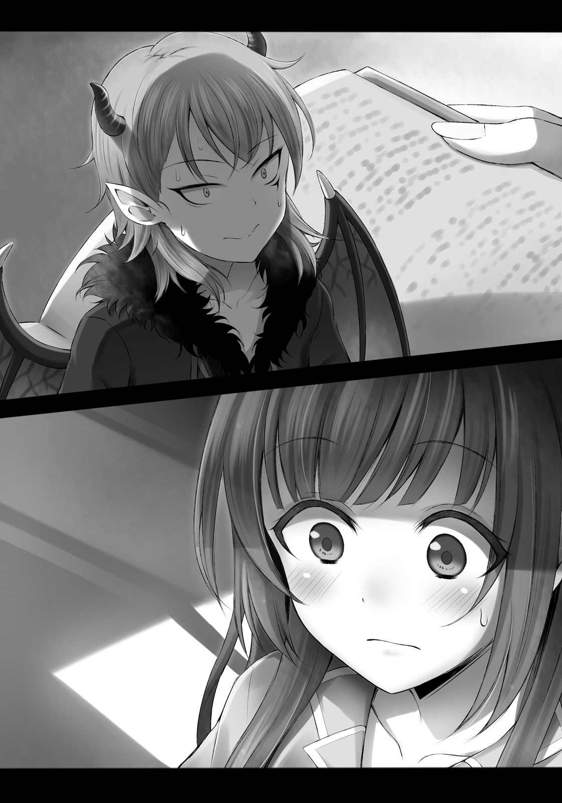
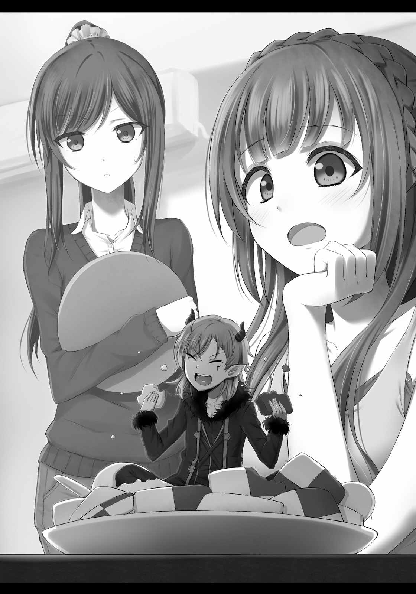
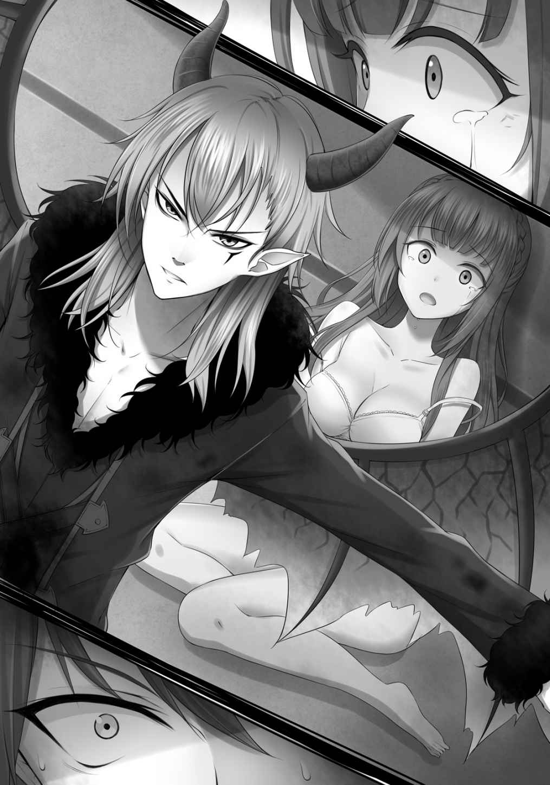
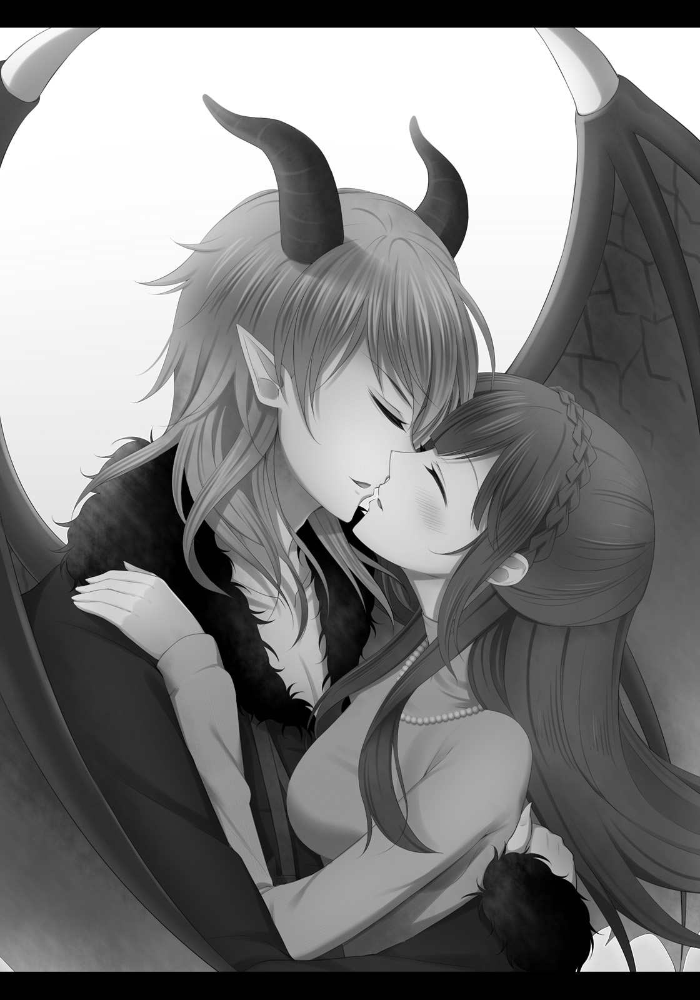
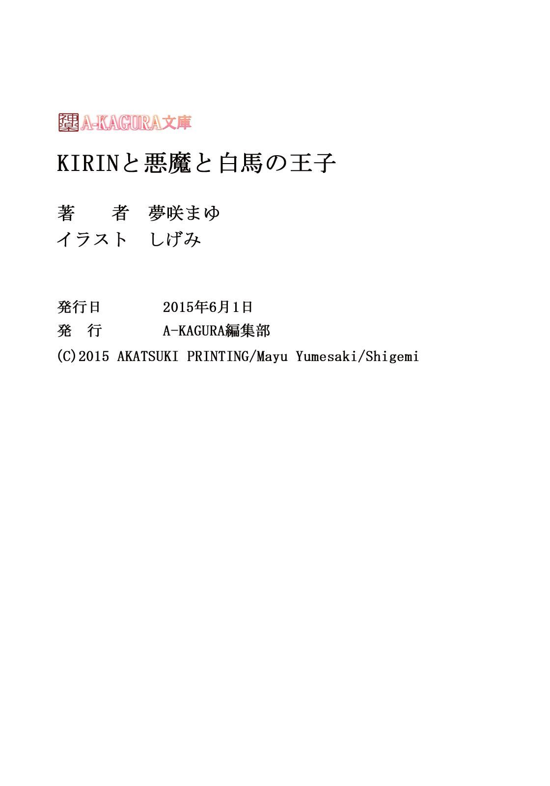
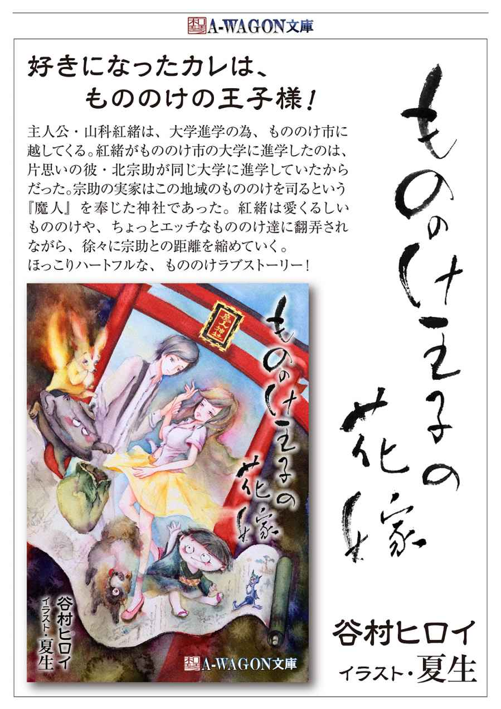
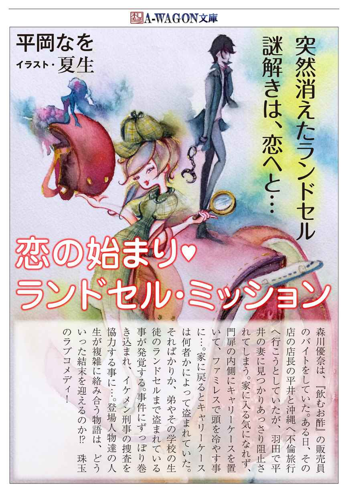

| KIRINと悪魔と白馬の王子 (A-KAGURA文庫) | |
| 夢咲まゆ | |
| (2015) | |
本作品の全部または一部を無断で複製、転載、配信、送信したり、ホームページ上に転載することを禁止します。また、本作品の内容を無断で改変、改ざん等を行うことも禁止します。
有償・無償にかかわらず本作品を第三者に譲渡することはできません。
本作品を示すサムネイルなどのイメージ画像は、再ダウンロード時に予告なく変更される場合があります。
本作品は縦書きでレイアウトされています。
また、ご覧になるリーディングシステムにより、表示の差が認められることがあります。
KIRINと悪魔と白馬の王子
夢咲まゆ
イラスト：しげみ
１
「もおおお！ なんで上手くいかないのよおおお！」
小清水愛子は、青空に向かって叫んだ。甲高い声が、神社の境内にこだました。
「......静かにして。迷惑だから」
竹ぼうきを動かしていた八雲るりかが、冷静な一言を放つ。彼女の足元には、色とりどりの落ち葉がうず高く積もっている。
愛子は口を尖らせた。
「いいじゃない、誰もいないんだから」
参拝客のいない神社の境内は、ガランとしていて寒々しい。それに拍車をかけるように、冷たい秋風がひゅうっと愛子の身体を撫でた。思わずくしゃみをしそうになった。
るりかが更に厳しいことを言う。
「......神様が迷惑だって言ってる。愛子の声、キンキンしてうるさいって」
「だぁってぇー...... 叫ばずにはいられないんだもん。恋愛運、ちっとも向上しないし」
「......はいはい。というかあんた、ずっとその格好で寒くないの？」
「るりちゃんこそ......」
愛子は、まじまじとるりかの全身を眺めた。白い小袖と赤い袴。いかにも神社の巫女さんという感じだ。これって寒くないのかなと思ったが、この格好で合コンに参加したら、コスプレ好きの男子にさぞやモテるだろう。実際るりかは本物の巫女さんだから、これはコスプレでもなんでもないのだけれど。
「るりちゃん。その服、あたしに貸してよ。今度はそれで合コン行ってくる」
「......神聖な衣装を、愛子の彼氏捜しの道具にしないで」
「えー......でもぉ......」
「......というか、なにか着た方がいいと思う。見てるこっちが風邪ひきそう」
言われて、愛子は自分の姿を見下ろした。
やたらと丈の短いワンピースは、洋服というよりキャミソールに近いデザインになっており、肩や襟ぐりが剥き出しになっている。その下には膝上のロングタイツを履いているものの、目の荒い網タイツなのでほとんど生足同然だ。
時は十一月上旬。確かに、上着の一枚でも欲しくなる格好である。
だが、愛子は頑として言い張った。
「おしゃれは我慢だって、どっかのモデルが言ってたもん」
「......意味わかんない。ていうか似合ってないと思う、それ」
「なんでよ。ファッション雑誌に載ってた服だよ？」
「......だからって、それが愛子に似合うとは限らないでしょ」
「でも、こういう目立つ格好じゃないと男子の印象に残らないじゃない」
「......それで体調崩したら本末転倒だと思うけど」
「それでも、白馬の王子様をゲットできればいいの！」
「......ゲットできてないじゃない、一度も」
「るりちゃんだってＫＩＲＩＮじゃん！ 人のこと言えないでしょ！」
ＫＩＲＩＮとは、『彼氏いない歴＝年齢』の略である。
愛子もるりかも、花盛りの女子大生。今年でもう十九歳なのだが、お互い一度も彼氏ができたことがなかった。小・中・高とずっと共学だったのに、だ。男友達はそれなりにいるものの、どれも友達止まりで、彼氏と呼べる存在がいたことは一度もない。
周りには素敵な彼氏を持った女友達が、いっぱいいる。恋愛を謳歌している同級生が、嫌でも目に入ってきてしまう。「今度の日曜日、デートなんだ」とか「誕生日に彼からプレゼントされたの」とか「昨日彼とチューしちゃった」とか、そういう話を聞くたびに、愛子は羨ましくてたまらなくなる。あたしにも彼氏がいれば......と、妄想の渦にはまり込んでいく。あたしもいつか彼氏をゲットして、ロマンチックなデートをして、素敵なプレゼントをもらって、その先にはあんなことやこんなことも......云々。
その妄想を早く現実にしたくて、日々白馬の王子様を捜しているのだけれど、どうにも上手くいかない。合コンには積極的に参加しているし、最新のファッションで渋谷や原宿を歩き回ったり、恋愛にご利益がある神社をめぐってみたりもしたけれど、どれもパッとしない。今日もこの格好で渋谷をウロウロしてみたのだが、誰にもナンパされずに終わってしまった。寒いの我慢して頑張ったのに。
「はあ......なんで上手くいかないんだろ。あたしだっていろいろ努力してるのに」
「......努力の仕方が間違ってるんじゃないの」
「どこがどう間違ってるって言うのよ」
ムッとしてるりかに噛みついたら、彼女は冷淡な口調でこう言った。
「......だって愛子、自分から男子に声をかけたことないじゃない」
「えっ......？ 」
「......愛子はいつも待ってるだけ。自分から男子を遊びに誘ったり、告白したことは一度もない。それじゃ、彼氏なんてできるわけないわ」
「それはそうかもしれないけど......」
るりかの言うことはもっともである。愛子は、ファッションを研究したり女子力アップを図ったりすることはあっても、自分から男子に声をかけたことはほとんどなかった。合コンに参加しても、話が振られるまで誰とも会話しなかったり、「メアド交換しましょう」が言えずにアドレスを聞きそびれたりすることがしょっちゅうである。
「......なんで声かけないの？ 人見知りってわけでもないのに」
るりかが不思議そうに首をかしげるので、愛子は当然のように言ってやった。
「だって、プロポーズは男からするものでしょ？」
「......はあ？」
「女の子をデートに誘ったり、告白したりするのは、男の仕事だよ。白雪姫だってシンデレラだって、みんな王子様に見初められて結婚してるじゃん。舞踏会に参加することはあっても、自分から王子様をダンスに誘うことはないんだよ」
「............ 」
「だから、あたしからは声をかけられないの。王子様に声をかけられるよう、努力はするけどね」
至極真っ当なことを言ったつもりだったのに、るりかはしばらく無言のまま固まっていた。なんでフリーズしているのか、愛子には理解できない。
ややあって、るりかは深々とため息をついた。
「......わたし、あんたの友人やめたくなってきた」
「えー、なんでよー！」
「......愛子がいろいろイタすぎるからでしょ。絶交していい？」
「絶対やだ。るりちゃんが友達じゃなくなったら、ここのおみくじ、タダで引かせてもらえないもん」
「......決めた。電話帳からあんたのデータ消しとくわ」
そっけなく言って、るりかはチリトリで落ち葉を拾い集めた。
「まあ、それは置いといてさ」
愛子は気にせず、話を元に戻した。なにかにつけて「痛々しい」とか「厨二病だ」とか言って、最後には「友達やめたい」で締めくくるものの、なんやかんやで、るりかは愛子の相談に乗ってくれる。これは、大学で初めて会った時からそうだった。入学オリエンテーションの際、どこに行けばいいかわからなくて迷子になり、たまたま近くを通りかかったるりかに声をかけて、一緒について行くことにしたら、るりかはちょっと呆れた顔をして「世話の焼ける子ね」と呟いたものだ。でも、決して愛子を一人で放置することはしなかった。
言うことは冷たいが、心根は優しい、るりちゃんなのである。
「彼氏ゲットするのに、なにかいい方法ない？ あたし、今年のクリスマスこそはボッチを卒業したいんだよね。ＫＩＲＩＮにおさらば！」
「......なにかって言われてもね。あんたがそうやってお姫様ぶっているうちは、なにをやっても駄目だと思うけど」
「そんなー！ るりちゃん、見捨てないでよー」
「......でも、もうやれることは全部やっちゃったじゃない。合コン、ナンパ、神社めぐり。これ以上いい方法出せって言われても......」
その時、ふと、るりかが掃除をしていた手を止めた。
「......ああ、ないわけじゃないわね。かなり胡散臭いけど」
「あるの？ なになに？ どんな方法？」
愛子は、ワクワクしながら彼女の言葉を待った。けれど、るりかから返ってきたのは、にべもない答えだった。
「......胡散臭いって言ったでしょ。やめといた方がいいわよ。こんなの、信じる方がどうかしてるもの」
「え、なんなの？ まさか、恋のキューピッドでも呼び出す方法とか？」
当てずっぽうに言っただけなのだが、驚いたことに、るりかは首を縦に振った。
「......この間、うちの倉庫を掃除してたら、変な古本を見つけてね。その間にメモみたいな紙が挟まってて。そこに書いてあったの、キューピッドの召喚方法」
「ええー!? 本当？ ホントにそんな方法があるの？」
「......だから、あまり期待しない方がいいって。いくらうちが神社でも、そんなの聞いたことないし。眉唾物よ、恋のキューピッドなんて......」
るりかの言葉が全部終わらないうちに、愛子は彼女の手を握り締めていた。
「るりちゃん、ありがとう！ 是非その方法を教えて！」
愛子は軽い足取りで帰路についた。
新宿の住宅街に、ひっそりと佇んでいる二階建ての古洋館『どりーむ庵』。そこが現在、愛子が下宿している場所である。東京の大学に入学が決まり、大学近くの不動産屋を当たっていた時、たまたま見つけた掘り出し物だった。洋館内には間取りが同じ部屋がいくつかあって、愛子はそのうちの一部屋を借りて住んでいる。
新宿という都心にあるにもかかわらず、月の家賃はわずか五万円。でも『ワケあり』というわけでもなく、これでどうして今まで借り手がつかなかったのかと、当時の愛子は不思議に思ったものだ。
けれど、『どりーむ庵』で生活してみてすぐ、借り手がつかなかった理由がなんとなくわかった。問題は物件そのものではなく、その周りの環境であり......。
「キエエエエィ！」
愛子が自分の部屋に入ろうとした時、隣の部屋から奇声を発した女性が飛び出してきた。
渡辺めぐみ、二十九歳。『どりーむ庵』の住人の一人である。
「人々を苦しめる悪霊め！ この霊媒師・ヒミコが相手だ！」
めぐみの手には、舞台の小道具と思しき杖が握られている。
「......今度は霊媒師の役なんですね、めぐみさん」
そっと声をかけたら、我に返ったようにめぐみは愛子に焦点を合わせた。
「やだ、私ったら。なにやってんのかしら。つい熱くなっちゃった」
「いえ......それだけ一生懸命ってことですよ」
「でも、部屋の外まで飛び出すのはマズかったかしら。これじゃまるで不審者だわ」
まるでじゃなくて、もろ不審者ですと言いかけて、愛子は慌てて別の言葉にすり替えた。
「今度の土曜日、オーディションなんでしょ？ 頑張ってください」
「そうね。次こそは合格してみせるわ。キエエエエィ！」
そう叫んで、めぐみは部屋に戻って行った。
女優志望の彼女は、事あるごとに「役作り」と称して、今のような奇行に走ることがある。他にも、怪しげな植物学者とか、お化け屋敷の館長さんとか、『どりーむ庵』には奇人変人がたくさんいる。このことが、下見に来た人たちの意思を折っているに違いない。
もっとも愛子は、下見もせずにすぐ契約してしまったので、この環境に慣れるしかなかったのだけれど。
気を取り直して、自室に入る。六畳ほどの狭い部屋は、うっすらと冷えていた。愛子はぶるりと身体を震わせた。
──「おかえり」って言ってくれる人がいたらなあ......。
誰もいない部屋に帰るたびに、そんなことを考えてしまう。特に、秋が深まって冬が目前に迫ってくると、人肌恋しくてたまらなくなるのだ。ああ、早く彼氏が欲しいなあって、切実に願ってしまう。彼氏のいる友達が羨ましい。
でも、恋のキューピッドを召喚できれば、あたしだって......。
愛子は早速、その準備に取り掛かった。るりかからもらった例のメモ。だいぶ古いので端が黄ばんでいるが、墨汁で書かれた字は未だにはっきりと読み取れる。ただ、やたらと表現が小難しくて、さっと読んだ時、なんだかよくわからない部分も多かった。
「......先に断っておくけど、なにかあっても責任は負わないから」
このメモをくれる時、るりかはそう念を押していた。
「......あんたにはあんたのこだわりっていうか、夢みたいなのがあるんだろうけどね、愛子。でも、やっぱりわたしは、こんなオカルトめいた神頼みをするんじゃなくて、自分からアクション起こすべきだと思う。本気で彼氏が欲しいと思ってるならね......」
まず、姿見を部屋の真ん中に移動させ、コンパスを見ながら地球の磁力線に対して角度をつけた。この角度がついていないと召喚に失敗してしまうそうだ。磁力線というのがなんだかよくわからなかったが、とりあえずメモに書いてある方法に従って、適当に角度をつけた。
次に、洗面所にかかっている鏡を外してきて、姿見と面を平行に合わせた。
「えっと......この間隔が......」
これも、一定の間隔が開いていないとダメらしい。ちょっと難しかったが、メジャーやフローリングの合わせ目を利用しながら、なんとか必要な間隔を開けた。
一通りのセッティングが終わったところで、愛子は出来具合を確かめてみた。二枚の鏡は互いに互いを映し合い、奥深くまで続く長い廊下を作っていた。
「よおし、できた！」
出来栄えに満足し、愛子は本棚から聖書を取り出した。キューピッドをキャッチするのに必要なのだそうだ。ちなみにこれは、出会いを求めて教会に行った時にもらったもので、結局そこでも肝心の収穫はなく、残った聖書だけが本棚の肥やしになっていたのだ。
もう一度、メモを見返してみる。
『十三日の金曜日深夜０時に、以下の方法で恋のキューピッドを捕まえることができます。ただし、手順を間違えるとキューピッドではないものが現れることがあります。十分ご注意ください』
この一文を読んだ時、愛子は運命的なものを感じた。今日は十二日の木曜日。十三日の金曜日は明日だった。これはもう神様の思し召しに違いない、と思った。ずっと頑張ってきたあたしに、神様が恋のキューピッドを与えてくれるのだ。それに、奇人変人であふれている『どりーむ庵』なら、キューピッドの一人や二人、現れてもおかしくないような気がする。
──それにしても、キューピッドではないものってなんだろ......。
変なのが出てきたら嫌だなあ......と思いながら、愛子はその時が来るまで適当に時間を潰した。
そして、ついに深夜０時がやってきた。そっと合わせ鏡を覗き込むと、鏡の奥に、小さく遠く、なにかの影が浮かんでいるのが見えた。その影は一秒に一歩ずつ、鏡の廊下を超えてこちらに近づいてくる。
「ホントに来たー！」
愛子は、聖書を開いて待ち構えた。あと三つ、二つ、一つ......。
「えいっ！」
姿見からその影が飛び出してきた瞬間、パッと聖書を閉じて影を本の間に挟み込んだ。本を閉じた時、「ぎゃあ！」という声が聞こえた。あまりキューピッドには似つかわしくない叫び声だったが......。
「わあ......どうしよ、ホントに捕まえちゃった。どれどれ......？」
愛子はドキドキしながら、そっと聖書を開いた。だが、本に挟まっているものを見た途端、思わず目が丸くなった。十数センチの『それ』は、黒くて長い尻尾を持ち、頭には二本の角、背中にはコウモリのような小さな翼がついていた。これは......この姿は、まるで......。

「これって......もしかして、悪......」
愛子が呟くより先に、十数センチの『それ』が愛子を見て悲鳴を上げた。
「ギャー！ 悪魔だー！」
そして聖書から跳ね起きると、鏡目がけて一目散に飛んで行った。
愛子は慌てて鏡の角度をずらし、『それ』が逃げるのを阻止した。鏡の廊下さえ消してしまえば、こちらのものだ。キューピッドだか悪魔だか知らないが、せっかく捕まえたのだから、そう簡単に逃がすわけにはいかない。
案の定、『それ』は勢いよく鏡に衝突し、ポトリと床に落ちてしまった。なんだか予想外に情けない姿だ。愛子は『それ』をつまんで掌に乗せた。
「ねえ、ちょっとあなた」
顔面から鏡に突っ込んで、目を回している『それ』に尋ねる。
「あなた、キューピッドじゃないよね。もしかして悪魔？」
「うう......」
その悪魔らしきものは、痛そうに頭を押さえていたが、愛子の姿を見た途端、
「うわあ、悪魔！ こっち来るなー！」
と叫んで、本棚の裏に隠れてしまった。
「ちょっ...... 失礼ね、誰が悪魔よ。悪魔はあなたじゃないの」
「そうだよ！ でも人間の方がよっぽど悪魔だ。みんなオレをいじめるんだ」
「いじめるって......」
「オレが悪魔だからって、殴るわ、蹴るわ、刺すわ、尻尾チョン切るわ、やりたい放題だ。嫌なことがあるたびに、オレで憂さ晴らしをする。そんなひどいことするの、人間だけだよ」
殴るわ、蹴るわ、刺すわ、尻尾チョン切るわ......？
「そんなことされて、あなた大丈夫なの？」
心配になって聞いてみたら、悪魔はちょっと顔を覗かせ、またサッと隠れてしまった。
「悪魔っていうのはさ......」
本棚の後ろから、小さな声が聞こえてくる。
「人間相手なら、なにされても死なないんだよ。例え血まみれになっても、数分後には復活できる。尻尾だってすぐに生えてくるしね」
「そうなの？ すごいんだね」
「すごくないよ。死ななくたって、痛いものは痛いんだからさ。なのに人間は、死ななきゃなにしてもいいって思ってるんだ。逃げないように虫かごとかに放り込んでおくだけで、ご飯粒一つくれやしない。ペットよりひどい扱いだよ」
「そうだったの......。確かにそれはひどいわね」
なんだか可哀想になってきて、愛子は優しく話しかけた。
「でも大丈夫、あたしはそんなことしないから」
「嘘だ。人間なんて信用できない」
「ホントよ。そんな乱暴なこと、女の子がやることじゃないもん」
白雪姫もシンデレラも、清く正しく美しいのだ。継母にいじめられることはあっても、憂さ晴らしに誰かをいじめることはない。そんなことをすれば、王子様はもちろん、他の男性からも愛想を尽かされてしまう。
だが、怯えきった悪魔は、なかなか信じてくれなかった。
「そういう女に限って、平気でオレに針を突き刺したりするんだ」
「そんなことしないってば。あたしはただ、願いを叶えて欲しいだけよ」
「願い......？」
「そう、願いよ」
「とか言って、またロクでもない願い事するんだろ？ 億万長者になりたいとか、不老不死だとか、総理大臣にしてくれだとか......」
「なに、その俗物根性丸出しの願い事は」
「人間の願いなんて、そんなのばっかだもん」
「そんなこと言わないって。乱暴もしないし。だからいい加減出てきてよ。ね？」
「............ 」
再び、チラッと顔を覗かせる悪魔。ここで初めて、百パーセントだった警戒心がほんの少し薄れたように見えた。
「......本当になにもしない？」
「しないわ。あたしは嘘はつかない。約束する」
「............ 」
さんざん躊躇っていたが、ずっと隠れていても仕方がないと腹を括ったのか、悪魔は恐る恐る出てきてくれた。
愛子は、改めて悪魔を見下ろした。尻尾や角といったオプションはともかく、意外と人間らしい整った顔立ちをしている。もっと牙が生えていたり、青白かったりするのかと思っていたが、こうして見ると人間とほとんど変わらなかった。高校生くらいの男の子が悪魔のコスプレをして、そのまま小さくなっちゃった......みたいな感じ。
これがあたしと同じくらいの大きさになったら、結構なイケメンになるだろうな......と想像して、愛子はちょっと興味が出てきた。そして聞いてみた。
「あなた、名前は？」
「えっ？」
「悪魔にもあるでしょ、名前くらい。なんていうの？」
「オレの名前なんか知ってどうすんの？」
「知りたくなったの。いけない？」
「それで藁人形とか作って、オレを呪う気じゃ......」
「だからー、そんなことしないって言ってるじゃない。いいから教えなさいよ」
「うう......わかったよ......」
かなり萎縮しながら、悪魔はボソボソと名を名乗った。愛子の耳には「テラ」と聞こえた。
「テラね。あたしは小清水愛子。よろしく」
「よろしくって......オレは早く帰りたいんだけど」
「いいよ。あたしの願いを叶えてくれたらね」
「いや、だからその願いって......」
「決まってるじゃない」
愛子はにっこり笑いながら、ズバリと言った。
「あたしの夢はただ一つ。素敵な彼氏をゲットすることよ」
「......えっ？ 彼氏？」
「そ。白雪姫やシンデレラに出てくるみたいな、白馬の王子様を見つけて欲しいの。あ、もちろん白馬に乗って登場する必要はないのよ？ 要は、ＫＩＲＩＮを卒業できればいいわけ。どう？ 簡単でしょ？」
「え？ ＫＩＲＩＮ......？」
「あたし、今年こそは彼氏と素敵なクリスマスを過ごしたいんだよね。まあ、どうしても間に合わなければ、誕生日でもいいけど。とにかく、ＫＩＲＩＮの記録を更新することだけは避けなくちゃいけないの。二十歳になる前に、なんとしてでも彼氏をゲットするのよ！」
気合いのこもった決意表明をしてあげたら、テラはちょっと首をかしげて、
「あのさ、ＫＩＲＩＮってなに？」
「えっ？」
「動物のキリンじゃないよね。きみ、人間だし」
「えっ......と......それは、その......」
──しまった......。悪魔は『ＫＩＲＩＮ』なんて言葉、知らないのか......。
つい友達に話すノリで人間の造語を使ってしまったが、素直に『彼氏いない歴＝年齢』とも言うのも恥ずかしい。愛子は誤魔化すように手を振った。
「ま、まあそれは置いといて。とにかく、二十歳までに彼氏さえゲットできれば問題ないの。それくらいお安い御用でしょ？」
「へ？」
「だってテラは悪魔じゃない。男子があたしにメロメロになっちゃう魔法くらい、かけられるでしょ？」
「えええ!? そんなの無理だよ！ オレ、今すごく力が弱くなってるし......」
「だったら、頑張ればいいだけのことよ。テラが魔法をかけてくれなかったらあたし、なんのために悪魔を召喚したかわからないもん」
「そんなこと言われても......。ていうか、彼氏が欲しいんだったら、キューピッド召喚すればよかったじゃん。なんでオレなわけ？」
「あたしだって、最初は恋のキューピッドを召喚するつもりだったの！ でもなんか知らないけど、出てきたのはテラだったんだよ。しょうがないでしょ」
「それ......召喚の準備をする時、磁力線の角度とか、鏡の間隔とか、適当につけちゃったせいじゃないの？」
思い当たる節があったので、愛子はドキッとした。そうか、あそこは適当にやっちゃいけなかったのか......。
「だ、だとしても！ 今更やり直しはできないでしょ。テラがキューピッドの代わりになってくれないと困るんだよ」
勢いでバンと床を叩いたら、テラはびくっと首を引っ込めた。愛子はかまわず続けた。
「ほら、つべこべ言わずに魔法かけて。上手くできたら、帰してあげるから」
「いや、でも、あの......悪魔にお願いなんてしない方が......」
「いいの。彼氏をゲットするためなら、悪魔にでもなんでも頼るわ」
「やめようよ、そんなの......」
テラはしばらく渋っていたが、なにを言っても愛子の意志が変わらないことを知ると、嫌々ながらも愛子の目線までパタパタと飛び上がり、ブツブツとなにかを唱え始めた。愛子には馴染みのない言語だった。
最後に一声叫んで、テラは再び床に降りたが、
「あ......やべ、間違えた」
と、急に顔を強張らせた。
嫌な予感がして、愛子は問い詰めた。
「ちょっとテラ、なにをどう間違えたのよ？」
「いや、その......最後に叫ぶ言葉をちょっと......」
「はあ？ どういうこと？」
「だから、つまり......その......」
「はっきり言いなさいよ。なに言われても怒らないから」
「......絶対？ 乱暴もしない？」
「しないわ。あたしは約束を破らないもん」
その言葉にようやく安心したのか、テラは「じゃあ......」と言って話を続けた。
「今オレ、愛子にかける呪いを間違えた」
「えっ？」
「ホントは『二十歳以降に彼氏ができたら幸せになれる』って呪いをかけようとしたのに、間違えて逆の呪いをかけちゃったんだ」
「ええと......それってつまり......」
「結論から言うと愛子は、二十歳までに彼氏ができなかったら死ぬんだ」
「............ 」
言われたことを理解するのに、二、三秒かかった。
二十歳までに彼氏ができなかったら死ぬ？ あたしが？ ちょっと待って。あたし、今何歳だっけ。そうだ、十九だ。次に誕生日が来たら二十歳になる。じゃあ、あたしの誕生日は？ 一月一日。元旦だ。今日は十一月十三日よね。てことは、あたしの余命は......。
ようやく事の重大さが自分の中に染み込んできて、愛子は頭を抱えて発狂した。
「なんてことしてくれたのよおお！ やっぱ悪魔なんかに頼るんじゃなかったあああ！」
「だから言ったじゃん......やめた方がいいって」
「なに開き直ってんのよ！ 早く呪いを解きなさいよ！」
「そんなこと言われても......。あ、彼氏ができれば呪いは解けるよ」
「簡単に言わないでよ！ あたしはＫＩＲＩＮだって言ったでしょ！ 今まで一度も彼氏ができたことがないのよ！ どうしろって言うの！」
「あ。ＫＩＲＩＮって、やっぱそういう意味だったんだ」
一人で納得しているテラ。愛子は無性に腹立たしくなったが、乱暴しないと約束した手前、彼を殴りつけるわけにはいかない。それに、ある意味でこれは自業自得だ。手段を選ばず、悪魔にまで頼ってしまった、あたしが悪いのだ。
だけど、命がかかっている以上、誰が悪いなんて言っていられない。
「こうなったら！」
愛子は手を伸ばし、テラの尻尾を掴んだ。テラは「ひっ！」と短く叫ぶと、びくびくしながら愛子をなじった。
「ら、乱暴しないって言ったじゃないか！ この嘘つき！」
「乱暴するつもりはないわ。ただ、責任を取ってもらおうと思って」
「せ、責任......？」
「呪いをかけ間違えたのは、あんたでしょ。だったらちゃんと協力しなさい」
「なにを......？」
「決まってるじゃない。あたしの王子様捜しよ。誕生日までに彼氏ができたら、あんたのこと許してあげる。だけど、もしできなかったら、死んでもあんたを呪ってやるから。覚悟しなさいよ」
「は、はいいぃ......」
涙目になりながらも、テラは首を縦に振った。
この日から、愛子の命懸けの王子様捜しが始まったのだった。
２
十一月十三日・金曜日。
大学をサボり、愛子は早速るりかの家に向かった。
八雲家の家屋は神社の裏手にあり、その規模もなかなかのものであった。少なくとも、どりーむ庵二つ分はあると思う。初めてここを訪れた時は、仰天したものだ。手土産持参しないと入れてくれないんじゃないか、と考えたこともある。もっとも、今ではすっかり慣れてしまったけれど。
「大変なことになっちゃったよ、るりちゃん！」
るりかの部屋で事情を説明し、愛子は彼女に泣きついた。
るりかは例のごとく冷静に話を聞いてくれたが、話を聞き終わると、これまた例のごとく深々と溜め息をついた。
「......だから言ったじゃない。あんなオカルトめいたことしない方がいいって」
と言いつつ、お茶とお菓子を出してくれる。
「だって......こんな悪魔が出てくるなんて、思わなかったんだもん」
愛子は、ハンドバッグからテラをつまみ出そうとした。
が、テラはバッグのフチに必死にしがみつき、出て来ようとしない。
「ちょっとテラ、なにやってんの」
「いやだー！ 人目に晒されるのはいやだー！」
「はあ？ そんなことしないって。なんの心配してんのよ」
「とか言って、また見世物にするんだろ。オレはペットじゃないんだよ」
「大丈夫だって。ここにはあたしと、るりちゃんしかいないから」
「るりちゃんって？」
「あたしの親友。すっごく優しい子だから、安心して」
半ば力ずくでバッグから引きはがすと、愛子は掌にテラを乗せた。念のため、勝手に飛んで行かないよう軽く翼を押さえておく。
「ひでえ......またオレをいじめて......」
泣きそうになりながらも、ついに観念したのか、テラは暴れるのをやめた。
「......へえ、これが悪魔？」
るりかが、興味深そうにテラを眺める。
「......思ってたのと、だいぶ違うわね」
「でしょ？ あたしもびっくりしちゃってさ」
「......悪魔っていうより、小動物に近いかも」
そう言って、るりかはテーブルにもられたお菓子の皿からクッキーをひとつ掴み、テラに差し出した。
「......食べる？」
「え？」
「......こんなバカ女に捕まっちゃって、災難だったでしょ。お菓子でよければ、どうぞ」
「うーん......」
さんざん躊躇った挙句、テラは恐る恐る勧められたクッキーを掴んだ。それを少しかじった途端、彼の顔が輝いた。
「うまいー！」
「......そう。どうやら口に合ったみたいね」
「るりちゃん、もっと食べていい？」
「......どうぞ」
「イエーイ！ やったー！」
愛子の掌を飛び出し、お菓子の山に飛び込んだテラ。さっきまでは怯えていたくせに、お菓子を出されただけで、こんなにも態度が豹変するとは。現金なやつめ。
「......それで？ あんた、なにか対策は考えてるの？」
テラに餌付けしながら、るりかが尋ねてくる。愛子はポカンとして聞き返した。
「対策って？」
「......馬鹿ね、呪いの対策に決まってるでしょ。どうやって誕生日までに彼氏を作るのかって聞いてるの」
「あ、そういうことね。あはは......それは、まあ......」
愛子は、曖昧にるりかを見返した。その顔を見て、るりかが二度目の溜め息を漏らす。
「......呆れた。なにも考えてなかったの？」
「いやあ......るりちゃんが、妙案を授けてくれるんじゃないかと思って」
「......わたし、責任は負いませんって言ったはずだけど？」
「そんなあ！ じゃあるりちゃんは、あたしが死んじゃってもいいって言うの？」
「......そうは言ってないけど、あんたいつも他力本願じゃない。呪いがかかったのも、自業自得だし。たまには、自分でなんとかしなさいよ」
「そんなこと言ったって......あたし、るりちゃんしか頼れる人いないんだもん。こいつは頼りにならないし」
と、テラに目をやったら、テラは首をかしげて愛子を見上げた。
「なんで？ オレも彼氏捜し手伝うよ」
「お菓子に埋もれた状態で言われても、説得力ないわよ」
「じゃあ、早く魔界に返してよ。オレ、頼りにならないから」
「ダメです。脱走は禁止って言ったでしょ」
「なら、さっさと彼氏作っちゃおうよー。そうすれば、呪いは解けるん......ごめんなさい、なんでもないです」
ジロリと睨んだら、テラは慌てて口を閉じた。
──頼りになるわけないじゃない、こんな悪魔......。
責任取れとは言ったものの、こいつの協力なんてあてにならない。また変な呪いをかけられて、寿命が縮んではたまらない。
「......でも愛子。早く彼氏作れっていうのは、わたしも賛成」
るりかが冷静な意見を述べる。
「......タイムリミットは一月一日。つまり、あんたの余命はあと二ヶ月もない。こうなったら、誰でもいいからさっさと彼氏作るしかないわ」
「誰でもって......そんなのやだよ！ あたしは白馬の王子様と恋愛したいんだから」
「......そんなのにこだわってたら、あんた本当に死ぬわよ」
「う......」
「......この際だからはっきり言っておくけど、あんたは今、選り好みしていられる状況じゃないの。もう手当たり次第に声をかけまくるしかない。それくらい、わかってるでしょ」
「それは......」
愛子は口をつぐんだ。
るりかの言うことはもっともである。本当は、白馬の王子様なんてこだわっている場合ではないのかもしれない。呪いを解くことを最優先に考えるのなら、目に付く限りの男性に片っ端から声をかけ、「付き合ってください」と告白すべきなのだ。愛子だって、それくらいわかっている。
だけど......。
「......るりちゃん。そうやって誰彼かまわず声かけて告白して、仮にＯＫされたとして、あたし、その人のこと本当に彼氏って思えるかな」
「......え？」
「テラは『彼氏ができれば呪いは解ける』って言った。でもその彼氏って、あたしにとっての王子様じゃなきゃダメなんだと思う。だからたぶん、手当たり次第に告白する方法じゃ、呪いは解けないよ。あたしが心から好きになった人──王子様じゃなきゃ、彼氏って思えないもん」
「............ 」
「だからあたし、ちゃんと王子様を見つけて告白する。だいたい、王子様以外の人を妥協で彼氏にしたって、相手の男性に失礼じゃない？」
「......あのねえ」
するとるりかは、苛立たしげにこめかみを押さえ、聞いてきた。
「......あんた、自分の命と王子様、どっちが大事なの？」
「どっちもだよ。死ぬのもイヤだし、王子様以外の人を彼氏にするのもイヤ」
「............ 」
「そういうわけだから、るりちゃん。なにか他にいい方法ない？」
「......はあ」
当たり前のことを言っているだけなのに、なんでるりちゃんは溜め息ばかりつくのだろう。愛子には理解できない。
「......もう、ほんっとにこの王子バカは......」
るりかは小さく呟くと、テラに視線を落として憐れむように言った。
「......あなたも大変ね。こんなバカな子に捕まっちゃって」
「るりちゃんも大変だね。こんなバカな人間の友達で......」
「あんたは黙ってなさい」
テラの口にポッキーを突っ込んで、黙らせる。まったく、こいつは口を開くとロクなことを言わない。
「......だったら愛子。あんた、今気になってる人は？」
「え？」
「......手当たり次第がダメなら、マークしてる人に猛アタックするしかないでしょ。同級生にいないの？ そういう男子」
「それは......」
言われて愛子は、一人の男子学生を思い浮かべた。
坂本勇一。愛子と同じＫ大学の経済学部に所属している、優等生である。成績優秀なだけでなく、眉目秀麗で人当たりもよく、男女問わず多くの学生に人気があった。身なりも男性モデルみたいにおしゃれで、彼のブロマイドを写真部が勝手に売りさばいているという噂も耳にしたことがある。
──坂本くんこそ、あたしの心の王子様......！
勇一のことを考えると、愛子はいつも頬が緩んでしまう。勇一相手に、勝手に妄想恋愛を繰り広げたこともある。坂本くんがあたしの彼氏だったら、毎日のようにデートして、素敵なプレゼントを贈り合ったりして、一週間後くらいにはファーストキスを済ませて、その先にはあんなことやこんなことも......キャッ！
「......どんな妄想してんのよ」
るりかに冷たい目で見られて、愛子は現実に引き戻された。慌てて手を振って答える。
「あ、えっと......いることにはいるんだけど......」
「......けど、なに？」
「だからその......。その人、競争率高すぎて、勝ち目ないかなー......っ て」
そう言ったら、るりかは静かにテーブルを叩いた。驚いてテラがビクッと飛び上がった。はずみで、ビスケットの欠片が飛び散った。
「ぎゃあ！ るりちゃんが怒った！ アレか？ お菓子の食いすぎか？ ごめんなさい、もう食いませんから！」
「......テラじゃない。このバカ女に怒ってるの」
ジロリと愛子を睨み、るりかが言う。
「......あんた、本気で呪い解く気ある？」
「あ、あるよ！ あるけど......でも、どうやって話しかければいいの？ あたし、その人と目を合わせたこともないのに......」
目が合ったら、ドキドキしすぎて気絶しちゃうかもしれない。
「目くらい合わせたって死なないだろ。メデューサじゃないんだから」
と、口をはさんだのはテラである。自分が怒られたのではないことを知って、再びお菓子をバリバリ食い荒らしていた。
その能天気な様子についイラッとして、愛子は口を尖らせた。
「あんたねえ......お菓子ばっかり食べてないで、少しはタメになること言いなさいよ」
「えー......でも、さっき黙ってろって言ったじゃん」
「それは余計なこと言うからでしょ。ていうかテラ、さっきあたしを『バカな人間』って言ったわね。るりちゃんならともかく、あんたにバカにされるのは納得できない！」
「だってさ......愛子、注文が多い割には自分でなにもやろうとしないし......」
「なっ......！ 」
「その......愛子の言う、白馬の王子様だっけ？ その候補者はいるんだろ？ だったらもう、アタックするのみじゃん。なんでそうしないの？」
「ふんだ。あんたみたいなビビりな悪魔に、乙女の気持ちなんてわかんないよーだ」
「そういう愛子だってビビりじゃん。男と目を合わせることすらできないんだからさ」
そう言われて、ついにカチンと来てしまった。気付いた時には、口から勝手に言葉がすべり落ちていた。
「できるもん、それくらい！ 目を合わせることくらい、朝飯前だもん！」
「あ、そうなの？ じゃあ、やってみてよ」
挑発するようなテラの台詞に、更に血が上る。
「ええ、やってやるわよ！ 目合わせて、声かけて、デートにまでこぎつけてやる！」
「へえ、ホント？ じゃあ頑張れ。デートできるようになったら教えてね」
「もちろんよ、絶対デートしてやるんだから！ 見てなさい！」
気合いを注入するつもりで、愛子は一気に紅茶を飲み干した。そうよ、あたしだって、やればできるんだから。追い詰められた乙女の底力、このチビ悪魔に見せてやるわ。
「............ 」
愛子とテラの言い合いを見ていたるりかは、ちょっと呆気にとられていたようだったが、やがてティーカップ片手に頬杖をつき、
「......ホント、バカよね」
と、何故か楽しそうに微笑んだ。
新宿で、今流行っているワンピースやパンプスを買い込み、愛子はどりーむ庵に戻った。
今日は大学をサボってしまったので、次に行くのは来週の月曜日ということになる。それまでに、いろいろとファッションを研究しておく必要があったのだ。モデルばりの勇一と並んで歩くには、自分もそれくらいのファッションセンスがなければならない。そうでなければ、釣り合わないだろう。
部屋に帰り着くなり、愛子はハンドバッグや買い物袋を放り出し、マガジンラックからファッション雑誌を取り出した。それをテーブルの上に何冊も広げ、モデルのファッションを見比べる。
うーん......と顎に手を当てて、しばらく考え込んでいると、
「フゴ......フゴ......」
ハンドバッグの中からくぐもった声が聞こえてきた。
あっ......と思い、急いでバッグを開けると、財布やハンカチに埋もれて、テラが目を回していた。よろよろとバッグの口にもたれかかり、ぜいぜいと大きく息をする。
「く、苦しい......窒息する......」
「ごめん、ごめん。テラのこと忘れてた」
「わ......忘れてもいいから、せめてバッグの口だけは開けておいて......。ファスナーって、内側からじゃ開かないんだから......」
「ごめんね。電車とかで、隣に座ってる人にバッグの中覗かれたら大変だと思って」
「それはそうかも、しれないけど......半分くらいなら、開けても大丈夫じゃない......？」
「うーん......でも、やっぱり心配でね。こんな珍しいペット飼ってるの、あたしくらいしかいないだろうし？」
「だ......だから、オレはペットじゃないって......」
その時、テーブルの上のスマートフォンが鳴った。慌ててディスプレイを見たら、『小清水良子』とあった。
──げっ......お母さんだ......。
出たくなかったが、これを無視したところで、またかかってくるに決まっている。愛子は仕方なく、スマホを耳に当てた。
「......もしもし？」
「ああ、愛子。どう？ 元気でやってる？」
母・良子の声が聞こえてきた。
「あ、うん......元気だよ。それで、なにか用？」
「ええ、年末はいつ帰ってくるのかと思って」
「え？ そんなのまだ考えてないけど......」
「あら、大学の予定はもう出てるんでしょ？ だったら、いつから休みになるか、だいたいわかるじゃない」
「そうだけど......今はそんなの考えてる余裕なくて」
まさか、変な呪いにかかっちゃった......とは言えないので、そう言うと、
「あんた、まだ王子様捜しを続けてるんじゃないでしょうね？」
母は溜め息と共に言った。
「そんな幼稚園児みたいな夢見てないで、早く家に帰ってらっしゃい。あんたみたいに夢見がちな女の子が、世知辛い東京で一人暮らしできるはずないんだから」
「な......なによそれ。あたし、こう見えても、こっちでちゃんと生活できてるんだからね。そういう言い方しないでよ」
「心配なのよ。あんたは昔っからロクに考えもせず、その場の勢いだけで突っ走って、失敗ばかりするでしょ。だから私は、一人暮らしなんて反対だったのよ」
身に覚えがありすぎて、愛子はドキッとした。
だが、ここでそれを認めるわけにはいかない。
「べ、別に失敗なんかしてないもん！ 余計な心配しないでよね！」
「あらそう。ならいいけど......あんたも、もうすぐ二十歳なんだからね。いつまでも考えナシじゃダメよ」
「......わかってるよ」
「それで、結局いつ帰ってくるの？」
話が振り出しに戻った。愛子は困ったように言った。
「だから、まだ考えてないって言ったじゃない。今言わなきゃダメなの？」
「うん。実はね、お隣の竹下さん......覚えてる？」
「覚えてるよ......。面倒見のいいおばさんでしょ」
あえてオブラートに包んだ言い方をしたが、はっきり言って、お節介ババア以外の何者でもない。
田舎には、ご近所の面倒を見たがる中年主婦が必ず一人はいて、よく晩ご飯のおかずをおすそ分けに来てくれたが、反面、必要以上に干渉してくることも多かった。受験生の時なんか「愛子ちゃんはどの大学行くの？」と事あるごとに質問され、「そこで大丈夫なの？」とか「過去問はやってみたの？」とか「マークじゃなくて記述の方がいいんじゃない？」とか、さんざん口出しされ、さすがにウンザリしたものだ。東京の大学に進学したのは、そういった無遠慮すぎる田舎暮らしに嫌気が差したから......というのもあるかもしれない。
「で、その竹下さんがどうかしたの？」
「ええ。この間うちでお茶をした時ね、一緒に大量のお見合い写真を持ってきて」
「お見合い写真？ お母さん、再婚でもするの？」
「馬鹿ね、なに言ってるのよ。愛子のに決まってるでしょ」
「えええ!? なにそれ！ あたし、そんなの頼んでないよ！」
衝撃の情報に、思わず声が裏返る。
「私だって、急に持って来られた時はびっくりしたのよ」
と、母が続ける。
「でも何枚か写真見たら、意外といい人たちが揃ってるのよね。だから、早めに帰って来て目を通して欲しいのよ」
「な、なんでよ！ あたし、お見合いなんてするつもりないよ！」
「どうして？ あんた、どうせ彼氏なんていないんでしょ？ だったら会ってみるくらい、かまわないじゃないの」
「そういう問題じゃないでしょ！ あたし、会ったこともない人と結婚なんて、絶対イヤだからね！」
「別に結婚しろとは言ってないじゃない。でも、せっかく竹下さんが持ってきてくれたんだし、条件だけでも確認してちょうだいよ」
「だから、やだってば！ あたしは、白馬の王子様と素敵な恋愛を......」
「愛子」
母が鋭い声で遮った。
「今更、あんたのくだらない幻想に突っ込んでも意味ないから、別の言い方するけどね。おとぎ話のお姫様たちは、みんな素敵な恋愛なんかしちゃいないのよ」
「は......？ なに言ってんのよ、お母さん」
「だって考えてもみなさいよ。白雪姫もシンデレラも、ほとんど初対面の王子様にプロポーズされて結婚してるじゃない。つまり彼女たちは、素敵な恋愛なんかしちゃいない。みーんなお見合い結婚ってことなのよ。わかってるの？」
「それは......」
愛子は言葉を失くした。そんなこと考えてもみなかったが、確かに母の言う通りであった。
おとぎ話のお姫様たちは、王子様との恋愛抜きにいきなり結婚してしまっている。少なくとも、デートしたりプレゼントをもらったりキスしたりなんてのは、おそらく全部結婚後のことだ。皮肉な話だが、愛子が目指しているお姫様たちは、おとぎ話の中で『恋愛抜きでも結婚はできる』ということを証明してしまっているのである。
「そういうわけだから、なるべく早く帰ってきなさい」
無言になってしまった愛子に、母がたたみかけてくる。
「別に、そこまで深刻に考えることないわ。会ってみるだけだと思えばいいでしょ。それで、気に入らなかったら断ればいいんだし。竹下さんのことだから、断られたってあんまり気にしないわよ」
「でも、あたし......」
「いいわね、愛子。大学が終わったら、すぐ戻ってくるのよ。もし帰って来なかったら、お母さん、お見合い写真持ってそっちに行くからね。わかった？」
一方的にそう言って、母は電話を切ってしまった。
「......はあ」
愛子は溜め息をついて、スマホをテーブルに戻した。母に釘を刺されたせいか、急に王子様捜しの意欲がしぼんでしまった。広げたファッション誌がだんだん灰色に見えてくる。
「今の、母ちゃんから？」
テラが、意外と真面目な口調で聞いてきた。
「愛子の母ちゃんって、怖いの？」
「怖くはないけど、いちいちうるさいのよ。いつまで経っても、あたしを子供扱いで」
「親にとっては、子供はいつまでも子供だって、オレの母ちゃんが言ってたよ」
「それはそうかもしれないけど......」
「で、『このバカ娘！』って説教されたのか」
「いや、そんなことは言われてないけど......」
「......なんだ。急に元気なくなるから、てっきり説教でもされたのかと思った」
なんでガッカリしてるんだ、この悪魔は。
「そういうテラは、お母さんに怒られたことあるの？」
「いっぱいあるよ。オレは兄ちゃんと違って、昔からよく怒られるんだ。『このバカ息子！』ってさ」
「そんなの、威張っていうことじゃないでしょ」
そう言った後、ちょっと首をかしげて、
「テラって、お兄さんいたの？」
「いるよ。オレが言うのもなんだけど、ちょーイケメンで男前なんだ。怖いけどね」
「へえ......そうなの？ それはちょっと見てみたいわね」
「愛子、面食いだな？ 言っとくけど、オレだって元の大きさに戻ったら、結構なイケメンなんだぞ。見てびっくりするなよ？」
「はいはい。例えイケメンでも、あんたとは絶対恋愛しないから、安心しなさい」
「じゃ、早く人間の王子様を捜すことだね」
と、テラは言った。
「もしお見合いするなら、その中から王子様を見つけるのもアリなんじゃない？」
「まだ、するって決まったわけじゃないけど」
「いいじゃん、可能性のひとつとして残しておけばさ」
「うん......まあ、そうよね。どうしても自力で王子様ゲットできなかったら、お見合いに頼るしかないかもね」
いざとなったら、それも仕方がない。年末は早めに実家に帰って、お見合い写真に目を通そう......と愛子は思った。
テラが腕を組む。
「でもその前にアレだ、王子様候補？ そいつとデートしないとさ」
「うん......」
「するんだろ？ デート。なんかいろいろ買い込んでたし」
「そのつもりだけど......お母さんにああいうこと言われると、なんか出鼻くじかれちゃうっていうかね」
「いいじゃん、母ちゃんの言うことなんかほっとけば。向こうが勝手にお見合い写真持ってくるなら、こっちも勝手に彼氏作ってやればいいんだって」
むちゃくちゃなことを言うテラ。だが、その通りかもしれない。坂本勇一が彼氏になってくれれば、問題は全て解決するのだ。呪いも解けるし、お見合いもしなくて済む。
そう考えたら、ちょっと元気が出てきた。
「それもそうか。テラ、たまにはいいこと言うね」
「たまには？ オレはいつもいいことしか言わないぞ」
「さてと、ファッションチェックの続きでもしようかな」
テラの台詞を軽くスルーし、愛子はテーブルに戻った。テラがテーブルの上にちょこんと座り、一緒に雑誌を眺めてくる。
「ふーん......最近は、こういうのが流行ってるのか」
「あら。悪魔に人間のファッションがわかるの？」
「いや、わかんないけど」
「だったら、黙ってなさい」
「でもさ、別に流行のファッションを真似る必要はないと思うよ？ 愛子は愛子のファッションでいけば......」
「うるさいわよ、チビ悪魔。ちょっとあっち行ってなさい」
小突くのはご法度なので、人差指で軽くつついてやった。
テラはくすぐったそうに身体をよじり、パタパタと本棚の上に飛んで行った。そして、ニヤニヤしながらこんなことを言った。
「愛子はおっぱいあるから、胸元を強調するような服着ると、下品に見えて逆効果だぞー」
「ちょ！ な、なんてこと言うのよ！ あんたの台詞の方が、よっぽど下品じゃない！」
愛子は思わず、手近にあったファッション雑誌をテラに向けて投げつけた。
テラはそれを軽くかわし、本棚の上でゲラゲラ笑った。
３
十一月十六日・月曜日。
Ｋ大学の購買部は、昼ご飯を買いに来た学生たちで賑わっていた。購買部に限らず、昼時は食堂も非常に混んでいる。
愛子は、雑誌を見ているフリをしながら、パンの陳列棚に視線を送った。そこには、数名の男子と一緒に、昼食の買い出しをしている坂本勇一がいる。
「うう......どうしよう......」
また目が合いそうになり、慌てて雑誌に目を戻す。
一体、何度同じことを繰り返しているのだろう。朝からずっとこんな調子だ。様子を窺っては視線を逸らし、しばらく経ってまた様子を窺う。その繰り返し。どうにか今日中に話しかけたいと思っているものの、話すキッカケすら掴めていないというのが現状である。せっかくテラの意見を採用して、露出の少なめなハイネックの服を着てみたのに。
──収穫なしで帰ったら、またチビ悪魔に笑われちゃう......。
そう考えると、気が重かった。
先日、テラに「絶対デートしてやる！」と啖呵を切ってしまった手前、「やっぱりできませんでした」とは言えない。そんなの格好悪いし、なにより、愛子が目指しているお姫様像と一致しない。
おとぎ話のお姫様たちは、どんな無理難題を押し付けられても、決して「できません」と言わず、一生懸命努力するのだ。そうして努力した末に、ようやく素敵な王子様と結婚できる。白馬の王子様をゲットしたければ、それくらいの努力をしなければダメだということだ。呪いをかけられてもめげず、ただ一途に頑張らなくてはいけないということだ。王子様にふさわしいのは、そういったヒロインなのである。
──だけど......。
その一方で、どうしても気になっている点があった。
大学では人気者の勇一だが、大学以外のプライベートな情報は、全く入って来ないという点である。彼と親しくしている友人ですら、一度大学から離れるとあまり話ができなくなるようで、どこに住んでいるとか、休日はなにをしているとか、家族は何人いるとか、そんなことすら聞いたことがないらしい。私生活に関しては全くの謎だった。
「どうせデートでもしてんだろ。あいつ、モテるからなー」
そんな風に同級生の一人が噂していたのを、愛子も聞いたことがある。
──もし彼女がいたら、あたしが声なんかかけても無駄だよね......。
だんだんと、やる気が削がれていく。
やっぱやめとこうかな......彼女いそうだしな......テラには「もう彼女がいた」って言って誤魔化そうかな......と諦めかけていると、
「おや、意外だね。小清水さん、そんな雑誌に興味あるの？」
「えっ？」
急に誰かに話しかけられて、愛子は反射的に顔を上げた。
甘いマスクに、モデル並みのプロポーション。少し襟足の長い髪はシルクのように艶やかで、真っ黒な瞳には愛子の姿が映っている。声もゆったりと落ち着いており、耳元で囁かれたらとろけてしまいそうだ。
そう、この王子様然とした人物は、正真正銘、あたしの白馬の王子様......。
「さ、さ、坂本くん!? 」
動揺するあまり、声が裏返ってしまった。
「ど、どうして？ どうしてあたしに？」
「どうしてって......ちょっと気になったから」
「気になるっ!? 」
坂本くんが、あたしのこと気になるって言った？ 言ったよね？ 気になるって、やっぱりそういう意味かな？ ああ、どうしよう......あたし。いきなりこんな展開、まだ心の準備ができてない。ヤバい、気絶しそう......！
「だってそれ、青年誌だよ」
「......へっ？」
言われて、愛子はハッと我に返った。改めて手にしていた雑誌を見やる。そこには、ほとんど裸同然の女性が挑発的な視線でこちらを見つめ、扇情的なポーズをとっている写真が掲載されていた。
「きゃあっ！」
驚きのあまり、雑誌を放り出してしまった。バサッと床に落ちた青年誌を、勇一が拾い上げる。
「ち、違うの！ 違うのよ、これは！」
耳まで真っ赤になりながら、愛子は必死に否定した。
「ホントに違うんだから！ 見てたんじゃなくて、開いてただけで......違う！ とにかくあたしは、こんなのには興味ないから！ 坂本くんとデートしたいとか、あんなことやこんなことをしたいなんて、考えてないから！ 変な妄想なんかしてないから！ だから気にしないでっ！」
一気にまくしたてた後、肩で大きく息をする。
なんてことだ。勇一のことに気を取られるあまり、顔を隠す雑誌にまで気が回らなかった。手近にあったものを開いただけなのに、よりにもよって、それが青年誌だったなんて。ああ、どうしよう。恥ずかしくて死にそう......。
「なんだ、興味ないの？」
すると勇一は、何故かつまらなそうに青年誌を戻した。
「僕は別にいいと思うけどな、こういうのに興味持ってる女性がいても」
「へ？」
「確かにおおっぴらすぎるのはどうかと思うけど、全く無関心な人よりは、ある程度興味を持っている人の方が健全だと思うよ。年頃なんだし」
意外すぎるお言葉。ドン引きされるかと思ったのに、なんて寛容な人なんだろう。
「坂本くん......女の子がこういう雑誌見てても、なんとも思わないの？」
思わずそう尋ねたら、彼は少し苦笑してこう聞き返してきた。
「小清水さんは、少女マンガを読んでいる男性を見て、なにか思うかい？」
「いえ、別に......。そういうのが趣味なんだなって思うくらいで」
「じゃあ、それと同じだ。なにに興味を持とうと、それは人の自由じゃないかな」
爽やかな微笑みを向けてくる勇一。その笑顔に、愛子はめまいを覚えそうになった。あの坂本くんが、あたしに微笑んでくれている。ヤバい、ホントに気絶しそう......。
──やっぱり、あたしの王子様はこの人しかいないわ。
そう思った途端、今までの逡巡は全て吹き飛んでいた。『女の子をデートに誘うのは男の仕事』なんていう日頃の持論も、頭から綺麗に消えてしまっていた。
「あ、あのっ！」
愛子は、開き直ったかのように言葉を吐き出す。
「も、もし......もしよかったら、次の日曜日、一緒に映画でも行きませんかっ！」
「え？」
勇一がきょとんとした目で愛子を見た。そして顎に手を当て、少し考え込む。
「日曜か。日曜は......」
「あ、やっぱダメだよね。予定入ってるよね。ごめんなさい、いきなりこんなこと言って。今のは忘れて──」
愛子が慌てて手を振ると、勇一は首をかしげて聞いてきた。
「土曜じゃ駄目かな」
「えっ？」
「日曜はちょっと都合が悪くて。土曜だったら空いてるんだけど、どうだろう」
「............ 」
今度は、愛子がきょとんとする番だった。自分で言い出したことなのに、状況がなかなか理解できない。
なにこの展開。坂本くんが、デートを承諾してくれた？ 夢じゃないのコレ？ うん、夢かもしれないわ。一度頬をつねってみようか。いや、でもそのショックで目覚めちゃったらイヤだな。もう二度と、こんな素敵な夢は見られないかもしれないもん。今目覚めちゃうのはもったいない......。
「土曜だと、そっちの都合が悪いかな？」
勇一の声に、ハッと我に返る。愛子は壊れた人形さながら、何度も首を縦に振った。
「いいです！ 全然ＯＫです、土曜日で！」
「そうか、それはよかった」
勇一は満足げに微笑み、
「それじゃ、次の土曜日にね。そうだな......十時くらいでいいかな？」
「うん、もちろん！ じゃあ、十時に映画館の前で待ってるから」
「わかった。楽しみにしているよ」
と言って立ち去って行った。
残された愛子は、しばらくボーッとその場に突っ立っていたが、急いでいた学生にすれ違いざま足を踏まれ、数拍遅れてようやく痛みを感知したのだった。
「いった......」
あれ？ 痛いってことは、これ夢じゃない？ 坂本くんに話しかけられたことも、勢いのままデートに誘っちゃったことも、それをＯＫされたことも、全部現実？ 妄想でしかなかったことが、現実になった......？
その事実に気付いた時、愛子は派手にガッツポーズをしていた。
「ぃやったあああああ！」
周りの人がものすごく怪訝な目でこちらを見ていたような気がしたが、今の愛子には全く気にならなかった。
◆ ◆ ◆
「ヒマだなー......」
テラは、愛子のベッドの上でごろんと仰向けになった。
部屋の主である愛子は、妙に気合いの入った格好で大学に行ってしまった。今日は、坂本勇一とかいう王子様候補をデートに誘う予定らしく、ギリギリまでああでもないこうでもないと迷って、結局ハイネックのビジュー付きワンピースを着て行った。でも、はっきり言えば、あれもまだ似合ってない。愛子は黙っていればちゃんとしたお嬢さんに見えるのだから、男子の視線を集めたいのなら、もっと清楚な格好をすべきである。ミニスカートよりロングスカートの方が、絶対似合うはずだ。今度そう言ってみようか。
「......に、してもヒマだ」
テラはむくっと起き出し、部屋の中をウロウロし始めた。
さすがに大学には連れて行けないからと、愛子は「勝手に脱走しないようにね」と念を押し、テラを留守番させて出掛けてしまった。テラも、大勢の人間が集まる場所にはなるべく行きたくなかったので、素直に「いってらっしゃい」と送り出したのだが、こんな部屋に一人で放置されてもやることがない。虫かごに閉じ込められるよりはマシだが、それにしたって退屈だ。なにかヒマを潰せるようなものはないのか。
「うーん......」
パタパタと飛び上がり、窓の外を眺める。遠くに、都心特有のビル群が見えた。ああいう高い建物が増えると飛行しづらくなるから、悪魔としてはやめて欲しいのだが。
──自分が飛べないから、高い建物を作りたがるのかなあ......。
昨日だか一昨日だか、テレビでスカイツリーとやらの実況中継をやっていたけれど、あれも翼を持たない生き物だからこその娯楽なんだろう、とテラは思っている。大勢の人間が展望台ではしゃぎ、高いところから街を見下ろして、絶景だのなんだのと言っていたが、実際に飛んでみると、それほど感動は覚えないものだ。まあこの気持ちは、自力で飛べない人間には到底理解できないだろうけど。
それにしても静かだ。
テラは外を見るのをやめ、扉の前まで来た。今日は隣から奇声（ＢＹ・渡辺めぐみ）も聞こえないし、他に誰かがいる気配もない。昼間だから、きっとみんな出稼ぎに行っているのだろう。留守番しているのは自分だけだ。
──だったら、ちょっとくらい探検しても......。
変な人に見つかったらヤバいけど、今なら誰もいなさそうだし......愛子が帰ってくるまでに部屋に戻れば大丈夫だよな、うん。
テラはそっと扉を開けて、部屋の外に出た。
部屋の前には、長い廊下が続いていた。白い壁に沿って、慎重に歩き始める。数メートルごとに同じ扉があり、それぞれ違う番号が刻まれていた。一応、ネームプレートらしきものも飾られている。
「『02 』が愛子、『03 』が渡辺めぐみ......」
めぐみの部屋の前まで来た時、テラはその扉を見上げて、思わずずっこけそうになってしまった。愛子のネームプレートは『ＡＩＫＯ』なのに、渡辺めぐみのは『大女優・渡辺めぐみ様』となっている。これでは、テレビ局の控え室みたいではないか。というか、彼女はまだ女優ではないだろう。目指しているというだけで。
変なの......と呟きながら、テラは『04 』の部屋の前にやって来た。そこにはネームプレートはなく、扉の横に観葉植物が置かれていた。あまり見たことのない不思議な形の植物だ。鮮やかな赤い花の下に、袋状の葉っぱがくっついている。
「なんだろ、いい匂い」
ハチミツみたいな甘い香りに誘われて、テラは赤い花のところまで飛んで行った。近付くと香りがより濃厚になり、それに比例して気分もだんだん高揚してくる。
ふと花の下を覗くと、袋の底にハチミツのようなものが溜まっていた。甘い香りはそこから漂っているようだった。反射的にヨダレが出そうになった。
──うまそう......。
テラは大の甘党である。甘いお菓子はなんでも好きだが、特にハチミツは大好物だった。これさえあれば、母ちゃんに何回雷を落とされても我慢できる。
いいよな、ちょっとくらい。テラは思った。ハチだって植物からミツを集めてるんだ。代わりにオレがもらったって、同じことじゃない？
テラは、勢いよく袋の底に飛び込んだ。とぷん、と粘性のある液体に腰まで浸かり、わくわくしながらその液体を舐めてみた。
ところが......。
「うわ！ なにこれ、苦っ......！ 全然ハチミツじゃないじゃん」
甘いのは香りだけで、味は全く甘くない。ハチミツとは全然違う偽物だったようだ。
──なんだよ、もう......。
なんて紛らわしいんだ。すっかり騙されちゃったじゃないか。
テラはちょっと拗ねつつ、袋の中から出ようとした。が、よじ登ろうとしても、壁がツルツルしていてなかなか登れない。飛ぼうにも、身体が液体でベタベタして、翼がひらかなくなってしまっていた。
「げ......」
どうしよう。この状況、結構ヤバいかも。しかも、なんだか知らんが、さっきから下半身がピリピリしてるんだけど。尻尾もかゆくなってきたし......。
気になって尻尾を引っ張ってみたら、プチッと小さな音がして、根本からあっさり千切れてしまった。悪魔のシンボルとも言うべき尻尾が、身体から離れて自分の手の中にある。いとも簡単に尻尾が千切れたのを目の当たりにして、驚愕のあまり、思わず尻尾を放り出してしまった。
「ぎゃああ！ 取れた！ 尻尾が千切れた！ なんなんだ、これ！」
強い力で引っ張ったわけでも、人間にチョン切られたわけでもないのに。なんでこんなところで尻尾が千切れるんだ。一体なんなんだ、この液体は！
大声で喚いていると、不意に袋の外から誰かの声が聞こえてきた。
「おやあ？ 久しぶりに、なにかかかったみたいだねえ......うひひひ」
袋の入り口からこちらを覗き込んでいたのは、黒縁メガネをかけた見知らぬ男性だった。まだ若くて顔立ちも整っているのに、なんだか怪しげな雰囲気を纏っている。着古した白衣が、怪しさに拍車をかけていた。テラは本能的に、身の危険を感じた。
「おやおやあ？ これは珍しい。新種のネズミかな？」
「あ、うわあっ！」
逃げようとしたが、狭い袋の中では逃げ道などあるわけもなく、テラは首根っこを掴まれて袋から出されてしまった。そのままジロジロ観察され、未知の恐怖に身体が震える。
──あわわ、どうしよう......。
また変な人間に捕まっちゃった。勝手に探検しようとしたから、バチが当たったのかな。こんなことなら、部屋でおとなしく待っていればよかった。一体なにするつもりなんだろう。この人なんか学者っぽいし、実験台にでもされちゃうのかな......。変な薬飲まされたり、薬品に漬けられたりしないだろうか。いや、もしかすると解剖されちゃうかもしれない。内臓取り出されて、骨を標本にされて、残った角や翼はホルマリン漬けに......。
テラはだんだん青ざめてきた。悪い妄想が、次から次へと頭に浮かんでくる。
ちょ、ちょっと待てよ。いくら人間相手ならなにされても死なないとはいえ、骨だけになっちゃったら、本当に蘇生できるかわからないぞ。いや、ちゃんと蘇生できたとしても、それはそれで問題だ。オレが蘇生するのをいいことに、何度も実験につき合わされたりなんかしたら......。
「うわああ！ やだやだ！ 助けて、許して、勘弁して！」
テラは夢中で手足をジタバタさせた。
それを見て、学者っぽいメガネの男性は、目を丸くした。
「おやあ？ これは驚いた。きみ、言葉喋れるのか」
「そ、それがなに......？」
「あっはっは！ これは愉快だねー。こんな珍しい生き物がかかるなんて、今日は最高にツイてるよ、うひひひー！」
「オレはツイてないよ、うわああん！」
テラはメガネの男性につままれて、『04 』の部屋の中に連行されてしまった。
六畳ほどの狭い部屋には、棚がズラリと並んでおり、そこには様々な植物の鉢が飾られていた。だが、どれも観賞用の花ではない。少なくとも、花屋で売っていそうな綺麗な花はひとつもなかった。小さなサボテンのようなものはあったが、そのほとんどは鉢植えから謎の植物を形成している。中には、触手みたいなツタがうねうね動いているのもあった。
──うええ......なんだよ、ここ。
テラは気味が悪くなってきた。こんな狭い部屋にこんなグロテスクな植物並べて、この人は一体なにをしてるんだ？ ていうか、どうせ並べるなら、花屋さんみたいな綺麗な鉢植え並べればいいのに......。
「わっ！」
あれこれ考えていると、テラは流し台に連れて行かれて、いきなり水の張った洗面器に放り込まれた。そのままバシャバシャ水をかけられ、歯ブラシで身体をこすられる。
「ぶっ！ な、なにすんだよ！ やめろ、やめろってば！」
「洗ってあげてるんだよ。ボクが改良した、特性ウツボカズラ・レッドちゃんの消化液を浴びちゃってるからね」
「ウツボ......？」
「ウツボカズラ、食虫植物の一種だよ。あの子は一番強力だからね、数分あの中にいただけで、跡形もなく溶けちゃうんだよ。ひひひ」
じゃあ、あそこで捕まっておいた方がよかったのか......と、テラは思った。尻尾が簡単に千切れてしまったのも、消化液に浸かって弱っていたからだろう。
そう言えば、翼は大丈夫かな......と心配していたら、メガネの男性は、なんの気なしに歯ブラシを背中に当ててきた。
「あ、ちょっ...... あんま強くこすらないで......」
だが、テラの制止も虚しく、またブチッという音がしたかと思うと、自慢の翼が背中から外れてしまった。
テラは悲鳴を上げた。
「わああ！ オレの翼が！ 悪魔のシンボルが！ なんてことすんだよ！」
「おや？ これは失礼。でもまた生えてくるんじゃないの？ 植物みたいに、ニョキニョキっと......」
「そりゃ生えてくるけど、今すぐってわけにはいかないんだよ！」
あまりの出来事に、泣けてくる。
「うう......もうやだ。なんなんだ、今日は......」
尻尾は千切れるし、翼は取れるし、さんざんだ。ほんのちょっと探検してすぐ部屋に戻るつもりだったのに、なんでこんな目に合わなきゃならないんだ。やっぱり勝手に出歩くんじゃなかった......。
「さてと......では、早速実験を始めようかな」
「え？」
「もうすっかり綺麗になっただろう？ だったら大丈夫だ。ボクの可愛い植物ちゃんと、遊んでいってくれ。ひひひ......」
男の不気味な笑い声を聞いて、テラは一気に血の気が引いたような気がした。
◆ ◆ ◆
愛子は鼻歌まじりに、どりーむ庵に帰ってきた。未だに夢の中にいるみたいな気分で、足取りもフワフワ軽く、顔もつい緩んでしまう。
──あの坂本くんとデートだなんて......キャー！
本当に信じられない。よくＯＫされたなと思う。断られること前提で誘ったのに、こんなにあっさりと承諾してもらえるなんて、完全に予想外だ。やっぱり彼女なんていなかったのかもしれない。ただの遊び人だったらちょっとガッカリだけど、その時はその時だ。とにかく、次のデートであたしのいいところを全力でアピールして、タイミングを計って告白すればいい。
愛子はグッ......と拳を握り締め、気合いを入れた。今回デートを承諾されたことで、あたしだってやればできるんだということがわかり、ちょっと自信が出てきていた。この調子でいけば、白馬の王子様をゲットするのも夢ではないかもしれない。
「たーだいまー♪ 」
浮かれた足取りで、自分の部屋に入る。
「ねえテラ、聞いてー！ 今日ねー......」
チビ悪魔に自慢してやろうと思ったのに、部屋に入っても返事がなかった。
「あれ？ テラ、どこ？」
本棚を覗いても、ベッドの隙間を調べても、どこにもテラの姿がない。洋服ダンスの中にも、カバンの中にもいなかった。
──あいつ、どこ行っちゃったのよ......。
この部屋に何者かが侵入して、テラをさらっていったとは思えない。多分、テラ自身が部屋から出て行ったのだ。きっと、ヒマを持て余して探検にでも出かけたのだろう。いかにも子供の考えそうなことである。
「あのチビ悪魔......！」
ちゃんと留守番してろって言ったのに。見つけてお説教してやらなきゃ。
愛子は部屋を出て、テラを捜しに行った。
テラの行動範囲は限られている。彼は基本的にビビりだから、あまり遠くへは行かないはずだ。となれば、彼が探検しているのは、この『どりーむ庵』以外に考えられない。
ここは、あたしの庭のようなもの。徹底的に捜索して、絶対に見つけ出してやるわ。
「......？」
渡辺めぐみの部屋を通過し、更に隣の部屋を通過しようとした時、ふと、廊下に置いてある観葉植物が目に入った。いつもは見過ごしてしまう鉢植えだが、隅から隅まで目をこらして歩いていると、意外と気になるものだ。
愛子は、まじまじと鉢植えを眺めた。毒々しい赤い花の下に、袋状の葉っぱがついている。以前、この部屋に住んでいる怪しげな植物学者・植木秀次郎に、自慢げに見せつけられた鉢植えだ。なんでも彼は食虫植物を好んで研究しているらしく、これもその研究の一環として改良したものだとか。
「この子はね、そこらのウツボカズラとは一味違うんだよ。普通は花なんかつけないんだけど、この子は綺麗な花をつけるんだ。素晴らしいだろう？ 甘い香りで虫たちを袋に誘い込み、それを糧にして、自分は美しく咲き誇る。ぞくぞくするよねえ......ひひひ」
そこまで思い出し、愛子はハッとして袋の底を覗き込んだ。ハチミツのように甘い香りがする消化液。その上に、溶けかけの黒い物体が浮かんでいた。細くて長くて、先っぽが少し尖っている悪魔の尻尾。
「ちょっ、ウソでしょ......？ 」
まさかテラのやつ、ここに落ちてしまったのか？ ウツボ......なんとかという、食虫植物に溶かされてしまったのか？ ほとんど跡形もなく？ じゃあテラは、もうこの世にはいないってこと......？
「そんな......」
愛子は、ペタンと廊下に座り込んでしまった。
なによ......なんなのよ、それ。勝手にあたしに呪いをかけて、勝手にいなくなっちゃうなんて。じゃあ、残されたあたしはどうなるの？ あんたが消えたら、呪いも消えるの？ それとも呪われたままなの？ あたし、これから一体どうすればいいの？ ねえ、答えてよ、テラ......。
「いやだー！ これ絶対ヤバいやつだろ！ ダメダメ、絶対ダメ！」
突然、部屋の中から、悲鳴のような声が聞こえてきた。次いで、別の男性の声が聞こえてくる。
「いいじゃないか、ちょっとだけ入ってみてよ」
「やだってば！ こんなところに入ったら、マジで溶けちゃうよ！」
「まあまあ。後でハチミツあげるから」
「えっ、ハチミツ？ じゃあ入る......って、そんな手に乗るか！」
愛子は反射的に立ち上がり、ノックもせずに勢いよく扉を開けた。
植物に囲まれた部屋の奥で、植木博士がテラと揉めているようだった。博士の前には、新しく改良したウツボ......なんとか（黄色い花バージョン）の鉢植えが置かれており、テラはその鉢植えを見て尻込みしているらしい。
ついに痺れを切らしたのか、植木博士はテラをつまみ、消化液が入っている袋の中に押し込もうとした。テラは必死に抵抗する。
「ひいい！ やだやだ！ お願い、勘弁してー！」
「まあそう言わずに。一瞬だけだからさ」
「ぎゃー！ 落ちる落ちるー！」
涙目になっているテラを見て、愛子は博士を止めに入った。
「ちょっと博士、なにやってるんですか！ 勝手なことしないでください！」
「おやあ？ 誰かと思えば、愛子くんじゃないか。ちょうどよかった。実は、世にも珍しい生き物を捕まえてね」
そう言って、博士がテラを見せつけてくる。
「玄関のウツボカズラ・レッドちゃんに引っかかってたんだよ。いやあ愉快、愉快！ 人間と会話できる小動物なんて、世界的大発見じゃないのかな。うひひひひー」
「小動物じゃありませんから。それはれっきとした悪魔です」
「へえ、悪魔？ ますます世界的大発見だね。まさに悪魔の証明だ。ひっひっひ」
「なに言ってるんですか。いいからその子、返してください。あたしのペットなんで」
そう言って、今にも落ちそうになっているテラをつまみ、掌に乗せた。
「うわああん！ 愛子ー！」
掌に乗せた途端、テラはしくしく泣き出してしまった。見れば、尻尾だけでなく、翼までなくなってしまっている。
さすがに可哀想になってきて、愛子は説教するのをやめ、指で優しく撫でてやった。
「テラ、大丈夫？」
「大丈夫じゃないよ。尻尾は千切れるし、翼は取れちゃうし、最悪だ。ちょっと探検しようと思っただけなのにぃ......」
「探検しようなんて思うからじゃない」
「だって、すげえヒマだったんだもん。それに、昼間なら誰もいないだろうし、ほんのちょっとなら大丈夫だと思って......」
「そうね、普通はそう思うわよね。でも、どりーむ庵にいる人は普通じゃないの。会社勤めしてるわけじゃないんだから」
普通の会社員なら昼間自宅にいるということはないのだろうが、残念ながら植木秀次郎は植物学者なのだ。自宅にいながら研究もできる。
「なんだー。その悪魔、愛子くんのペットだったのかあ......。それじゃあ、標本にはできないなあ......」
この植木博士の妄言は、軽く聞き流すことにしよう。
「わかったよ......気を付ける」
ぐすん、と鼻を鳴らしたテラ。ようやく落ち着いてきたみたいなので、愛子はさっさとこの部屋から退散することにした。
「ああ、ちょっと待ちたまえ」
帰り際、植木博士が呼び止めてくる。愛子はややウンザリして振り返った。
「まだなにか？」
「うん。その悪魔くんに、実験に協力してくれたお礼をと思ってね」
と言って、博士が透明なビンを差し出してくる。中には黄金色のハチミツが入っていた。
「これもボクの研究の一環でね。自慢じゃないが、美味しいよ」
「......でもそれ、毒とか入ってない？」
と、テラが疑っている。博士は朗らかに笑った。
「あっはっはー。このボクが、可愛い植物ちゃんから集めたミツに、そんなもの入れるわけないじゃないか。植物への冒涜だよ」
「......ホントかなあ......」
「今日は愉快な一日だった。気が向いたら、また実験に付き合ってくれたまえ。いひひひ」
そう言い残し、植木博士はさっさと自分の研究に戻ってしまった。
自分の部屋に帰った愛子は、博士からもらったハチミツを少し皿に盛って、テラに出してやった。最初は疑っていたテラだったが、ちょっと舐めた途端パッと顔を輝かせ、
「うまいー！」
と言って皿ごとペロペロ舐め始めた。
「まったく......単純なんだから」
次からテラに言うことを聞かせる時は、ハチミツを目の前にぶら下げてやろう、と愛子は思った。残りのハチミツを冷蔵庫にしまいながら、尋ねる。
「尻尾と翼、ちゃんと新しいの生えてくるんでしょうね？」
「うん、もちろん。明日には元に戻ってるんじゃないかな」
「ならいいけど......。これに懲りたら、もう勝手に出歩くのはやめなさいよね」
「でも、留守番してるのってヒマなんだよ。やっぱオレも連れて行ってくれない？」
「あんた、人がいっぱいいるところには行きたくないって言ったじゃない」
「変な植物に捕まるよりマシだよ」
確かに。
──まあ、また行方不明になられても困るしね......。
愛子は肩をすくめ、仕方なしに言ってやった。
「絶対おとなしくしてるって約束するなら、カバンの中に入ってていいわよ」
「マジで？ やったね！」
テラは、ハチミツでベタベタになった手で万歳をした。
「ということは、愛子の言う白馬の王子様も、こっそり覗き見できるってことか。どんな奴なんだろ、楽しみだなー」
「楽しみにしてなさい。あんたとは似ても似つかない、カッコいい王子様なんだから」
「失礼なこと言うね、オレだってイケメンなのに。で、その王子様とは話できたの？」
そう聞かれて、愛子はここぞとばかりに威張ってみせた。
「ふふーん。話どころか、ちゃーんとデートの約束までしてきてやったわよ」
「えっ？ ホントに？」
「ホントよ。どう？ すごいでしょ。あたしだって、やればできるんだからね」
「うわー、すごいじゃん。バカの愛子も、やる気になったら強いなあ」
バカは余計だ、と思ったが、今はなにを言われてもあまり腹は立たない。チビ悪魔の暴言ですら、可愛く思える余裕がある。
テラが言った。
「じゃ、王子様ゲットまでもうすぐだね。頑張って」
「ありがと。頑張るわ」
愛子はにこりと微笑んでみせた。
４
十一月二十日・金曜日。
デートの前日、愛子はるりかの家を訪れていた。勇一を誘ったはいいものの、映画を見に行くという以外に、具体的なプランはなにも決めていないことに気付いたのだ。他にも何を着ていくべきか、当日の振る舞いはどうするかとか、心配事がたくさんある。
「あーん。るりちゃん、どうしよー。あたし、明日心臓麻痺して死んじゃうかもしれない」
「......なにバカなこと言ってんの。初めてのデートなんだから、頑張りなさいよ」
るりかがお茶とお菓子を出してくれる。するとテラはハンドバッグから飛び出し、目を輝かせながらるりかを見上げた。
「るりちゃん、食べていい？」
「......どうぞ」
すかさず、クッキーの山にダイブするテラ。
──なに餌付けされてんだか......。

愛子は呆れながら目を逸らした。やっぱり、このチビ悪魔は頼りにならない。こいつのことは放っておこう。
るりかが尋ねる。
「......映画行くんでしょ？ なに見に行くの？」
「いや、それが......。そういうこと、なにも考えてなかったんだよね。映画の後のことも、全然決めてなくって」
「......ノープランってわけね。相変わらず行き当たりばったりなんだから」
「だってー......」
「......まあいいわ。映画だったら、多分なんとかなるでしょ」
「？ なんで？」
「......映画見ている間は会話しなくても平気だし、話題にも困らないから」
「あ、そっか。なるほど」
デート中、一番困るのは気まずい沈黙だ。だが映画の場合は、それが極端に少ないのである。会話が途切れたら、映画の感想を言えばいいからだ。ある意味、遊園地に行くよりもずっとハードルは低い。
「それで、当日はなに着てけばいいかな」
と尋ねたら、るりかはジットリした目で答えた。
「......わたしの意見なんて、採用するつもりないくせに」
「そんなことないよー。ちゃんと参考にするって」
「......どうだか。でも、ひとつだけ言わせてもらえるなら、あまり露出の多い服はやめた方がいいと思う。愛子にはあまり似合わないから」
「そ、そっか......」
そう言えば、テラにも似たようなこと言われたような......？
「そうそう。愛子はおっぱいあって柔らかそうな身体してるから、露出度の高い服は下品に見え......すみません、なんでもないです」
デリカシーのない言葉を挟んできたテラを、睨み付けて黙らせる。なんでこいつは、こういうことを遠慮なく口にできるのかしら。意味がわかんない。
「......まあ、ファッションのことはどうでもいいとして」
どうでもよくないよ......と心の中で突っ込みながら、愛子はるりかの言葉を待った。
「......気になるのは、やっぱり呪いのことよね」
「なんで？ 坂本くんが彼氏になってくれれば、呪いは解けるんだよ？」
「......そこが問題なのよ」
「なに？ あたしじゃ、坂本くんはゲットできないって言いたいの？」
ちょっとムッとしてるりかに噛みついたら、彼女は首を横に振った。
「......別にわたしは、愛子が誰をゲットしようがどうでもいいの。ただ、『彼氏ができれば呪いは解ける』っていう条件が、かなり曖昧だなと思って」
「？ どういうこと？」
「......だからね」
学者のような口調で、るりかが述べる。
「......彼氏彼女なんて、人によって解釈が違うじゃない。こっちは付き合っているつもりでも、向こうはただの友達としか思ってなかったとか。よくある話でしょ」
「でも、告白してＯＫされれば、カップル成立するじゃない？ 普通」
「......どうかしらね、それは。結婚の場合は、婚姻届を提出すれば、誰が見ても『結婚した』ってわかるけど、彼氏彼女にはそういうのがないわけでしょ。告白みたいなアバウトなもので、本当に呪いが解けるのかどうか」
「そ、そっか......なるほど」
言われてみれば、そうかもしれない。愛子は妙に納得してしまった。
「でもそれじゃ、どうすれば呪いは解けるの？」
「............ 」
「......るりちゃん？」
るりかは無言で何事か考えていたが、やがてテラに目をやると、こう尋ねた。
「......テラ。こういう呪いって、誰が見てもはっきりわかる証拠がないと解けないの？」
「んー、証拠って？」
「......だからその、キス以上のことまでしないとダメなのかってこと」
「あー、うん。そうだったかもしれないなあ......」
気のない口調でテラが答える。彼にとっては愛子の呪いより、目の前のお菓子の方が重要なようだ。
その態度についイラッとして、愛子は彼が食べていたクッキーを皿ごと取り上げた。
「ちゃんと答えなさいよ。失礼でしょ」
「あー、オレのクッキー！」
テラは不満げに頬を膨らませたが、仕方なく頭を掻いた。
「るりちゃんの言う通りだよ。デートするだけじゃ、彼氏ができたとは言えない。告白してＯＫされても、まだ十分じゃない。ちゃんとした肉体関係がないと、呪いは解けないんだ」
「え？ それってつまり......」
「だからさ、愛子の言う王子様？ そいつとセックスしないとダメってことだよ」
普通なら躊躇してしまうようなことを、またもやサラッと口にする。
......いや、ちょっと待って。
「な、な、なによそれ！ そんなの聞いてないよ！」
愛子は、みるみるうちに顔が熱くなっていくのを感じた。耳まで真っ赤になっているのが、嫌でもわかる。
──さ、坂本くんと、セッ......！
頭の中では密かに妄想したことがあるが、いざそれを口に出されると、どうにも恥ずかしくて仕方がない。彼氏ができたら、いつかはそういうこともするんだろうなあ......と考えてはいたが、実際にそれが現実となるのは全く別の問題だ。ましてや、相手はあの坂本勇一。明日初めてデートしようっていうのに、まだちゃんと告白もしていないのに、一月一日までに肉体関係まで発展させろなんて、現実としてあり得ない。無理がある。心の準備もできていない。
けれど、そうしないと呪いが解けないと言われている以上、逃げて回るわけにもいかない。タイムリミットも迫っている。
それはわかる。わかるんだけど......。
「あれ、愛子。セックスしたことないの？」
また生々しい台詞を、平気で口にするチビ悪魔。
「あ、あるわけないでしょ！ あたしはＫＩＲＩＮなのよ！ 誰とするってのよ！」
「ふーん、そうなのか。年頃の人間にしちゃ、遅れてるなあ」
「あんたに言われたくないわよ！ チビ悪魔のくせに！」
「なに言ってんの？ オレ、今はチビだけど、元の大きさに戻ったら結構なイケメンだって言ったじゃん。兄ちゃんほどじゃないけど、意外とモテるんだぜ？」
「知らないわよ、そんなの！」
「いいじゃん、セックスくらい。言うほどたいしたもんじゃないって。サクッと済ませちゃいなよ」
「簡単に言わないでよ！ ああもう最低！ なんでこんな呪いかけちゃったの！」
自分の境遇に泣けてくる。るりかが慰めるように、お茶を淹れ直してくれた。
「......だけど、こうなったら、もう覚悟決めるしかないでしょ。そうするしか呪いを解く方法がないのなら、そこまでやるしかない」
「で、でもあたし......まだそんな......」
「......彼氏が欲しいなら、いつかは通る道よ」
「うう......」
「......まあとにかく、まずは明日のデートを頑張ってきなさい。話はそれからだわ」
「えーん、るりちゃーん！」
愛子は思わず、るりかにすがって泣きついた。
どりーむ庵に戻り、愛子は自分の部屋に閉じこもった。他の住人に見つからないよう、最新の注意を払った。こんな赤い顔で、奇人変人たちと話したくなかったのだ。
「ああ、もう......！」
愛子はハンドバッグを放り出すなり、ドサッとベッドに仰向けになった。
──王子様とセックスしなきゃ、呪いは解けないなんて......。
それならそうと、早く言って欲しい。いきなりこんなこと聞かされたら、また焦ってしまうではないか。デートで浮かれている場合ではない。告白してＯＫされれば、めでたしめでたし......ではないのだ。
「ハードル上がっちゃったじゃない......」
どうしてくれんのよ......と呟いた時、ハンドバッグからテラがひょこっと顔を出した。そして、ちょっとむくれた顔になる。
「愛子、またオレのこと忘れてただろ。バッグごと投げるのやめてくれよー」
「あんたのことなんて知らないわよ」
「あれ？ まだ気にしてんの？ 呪いの解除方法」
テラはパタパタとこちらに飛んできて、愛子の隣にちょこんと座り込んだ。
「そんなに王子様とのセックスが嫌？」
「そういうわけじゃないけど......」
「じゃ、なにが問題なんだ？」
「それは......」
なにが問題なのかと聞かれると、具体的になにとは言えない。というか、よくよく考えると問題なんてないような気がする。相手が坂本勇一という白馬の王子様なら、自分の操を捧げても悔いはない。それ以外の人に処女を奪われるより、ずっと幸せなことだと思う。
多分、単に心の準備ができていないだけだ。いきなり「セックスしなきゃダメ」なんて言われたから、反発しているだけ。それだけのことだ。
「テラはいいわね、お気楽で」
と、愛子はテラの方に首を捻った。
「あんたにとっては、呪いをかけた人間がどうなろうと、あまり関係ないもんね」
「なんだよ、失礼だな。全然関係ないってわけじゃないよ」
「どうして？」
「だって後味悪いじゃん。間違って呪っちゃった人間が、結果的に死んじゃったらさ」
「ふーん......悪魔も、そういうこと考えるんだ？」
「そりゃあ考えるさ。愛子、オレのことなんだと思ってんの？」
と言って口を尖らせるので、愛子はテラに例のハチミツを与えてやった。案の定、テラの機嫌はコロリと直った。
「あーあ。こんなんじゃ、本当にただのペットだわ」
ハチミツを舐めているテラを、ツンツンと指でつついてやる。テラはくすぐったそうに身をよじり、
「だから、オレはペットじゃないってば。れっきとした悪魔だっての」
「だけど、いつまでもチビのままじゃ、ペットとたいして変わらないじゃない。いつになったら元に戻るの？」
「そんなのわかんないよ。でも、ちっちゃくたって、できることはいろいろあるんだぞ？」
「ホントかなあ？ こんな身体で、なにかできるとは思えないけど」
「言ったな？ じゃあ、今からとっておきのパフォーマンスを見せてやる」
「ふーん？ だったらやってみれば？」
ハチミツのビンも持てないくせに、なに言ってるんだか......と思っていたら、テラは突然弾丸のように飛び上がり、勢いよく愛子のスカートの中に潜り込んでしまった。
「あっ、ちょっ！ どこ入ってんのよ！ 変態！」
スカートの中で、テラがごそごそ動いている。どんどん足の奥に近付いてきて、愛子は焦った。こいつ、まさか乙女のあそこをいじる気じゃ......？
「ちょ、やめなさい！ 早く出なさいよ、チビ悪魔！」
「なんで？ やってみろって言ったのは愛子じゃん」
「こ、こんなことやれなんて言ってない......あっ、やだ、どこ触って......！」
「いいじゃん。予行演習だと思えばさ」
「な、なんの予行演習......や、ひゃあ！」
下着の上から敏感なところに触れられて、ピクリと身体が跳ねた。そのままテラはご自慢の翼を動かし、デリケートな部分を細かく刺激し始める。
──う、嘘でしょ......？
携帯のバイブよりも荒っぽい特殊な振動に、愛子は頭がだんだん痺れてくるのを感じた。こんな刺激、受けたことない。認めたくないけれど、なんか気持ちいい......。
「あ、だめ......だめ、もうテラ、やめ......あっ！」
「あれ、いい反応するじゃん。愛子、もしかして素質ある？」
チビ悪魔にからかわれたことで、ようやくハッと我に返る。なにしてるの、あたし！
「も、もう！ いい加減にしなさいっ！」
これ以上やられたら絶対ヤバいことになると思い、愛子はなりふりかまわず、スカートの中からテラを引っ張り出した。
「あー！ まだ途中だったのにぃ！」
「なにが途中よ！ 調子に乗るのもいい加減にしなさい！」
ジタバタ暴れるテラをつまみ、愛子は怒鳴った。
「いくらあたしが優しいからって、やっていいことと悪いことがあるんだからねっ！」
「でも、愛子がやれって......」
「そんなこと言ってないわよ！ こんな、はしたないこと......！」
「でも、それなりに反応してたじゃん」
しれっとした顔で言う、チビ悪魔。反省の色は全く窺えない。
「もうっ！ 最っ低！」
怒りをどこにぶつけていいかわからず、愛子はテラを放り出した。ものすごく腹立たしいのに、何故かドキドキが止まらない。先程テラにいじられた足の奥が、未だにジンジンしているような気がする。わずかに下着が濡れているのを感じ、かあっと頬が熱くなった。
──こ、こんなチビ悪魔に翻弄されるなんて......！
悔しいやら、恥ずかしいやらで、どんな顔をしていいかわからない。
するとテラは、本棚の上からニヤニヤ笑って言った。
「大丈夫、その反応なら初めてでも上手くいくよ。頑張れ！」
「うるさいわあああ！」
思わず、ハチミツのビンを投げ返す。ビンは本棚の角にぶつかって大破した。残っていたハチミツが全部ぶちまかれた。
「ぎゃああ！ オレの大事なハチミツが！ なんてことすんだよ！」
「あんたが悪いんでしょうが！ それ、全部舐めて片付けなさいっ！」
「えええ!? そんなあ！」
チビ悪魔の喚き声が聞こえた気がしたが、愛子の耳には入らなかった。
５
十一月二十一日・土曜日。
新宿にある映画館の前で、愛子はそわそわしながら、スマホを確認した。約束の十時まで、あと十分。顔を上げると、たくさんの人が愛子の前を行き来していた。だが、勇一の姿は見当たらない。
──ホントに来てくれるのかな......。
愛子は顔をくもらせた。
まだ時間にはなっていないし、早く来すぎた自分が悪いんだけど（気が急いていたせいか、一時間も早く着いてしまった）、長時間同じ場所で待っていると、だんだん不安になってくる。デートの約束をしたとはいえ、当日にドタキャンされる可能性もないわけではない。坂本勇一は忙しそうな人だし、急に予定が入ってしまったということも十分考えられる。
「なんだあ？ せっかくのデートなのに、なんか暗いなあ」
開いたカバンの口から、テラの顔が見えた。一応、覗かれても大丈夫なように、ハンカチにくるまっている。
「大丈夫だって。まだ待ち合わせ時間じゃないだろ？ 来てくれるよ、きっと」
「だといいんだけど......」
「仮にドタキャンされてもさ、また誘えばいいじゃんか。愛子はバカだけど、勢いだけはあるから、なんとかなるって」
「バカは余計だっての、チビ悪魔」
あまり慰めになっていないけれど、少しは気休めになる。あれこれ心配していたことが、バカらしくなってくる。
「大丈夫よね......きっと」
「うん、大丈夫大丈夫。愛子はやればできるんだから。自信持てよ」
「そうよね、ありがと」
そうなると、今度はファッションが気になってきた。
愛子は窓ガラスにぼんやりと映った自分の姿を見ながら、裾の乱れなどを直した。今日は、露出を抑えろという意見を採用し、ハイネックのセーターとフリルのついたロングスカートを着ている。
「ねえ、今日のファッション、変じゃないかな」
と、テラに話しかけたら、カバンの中からテラが困った口調で言った。
「......あの、ここからだとよく見えないんですが」
「じゃあ、顔だけ出せばいいじゃない」
「やだ。そんなデンジャラスなこと、したくない。誰かに見られたらどうすんだよ」
「大丈夫よ。どうせみんな、フィギュアかなにかだと思うだけだって」
「思わないだろ。女の子が、お出かけ用のカバンの中に、フィギュアなんか入れるかよ」
......それもそうか。
「ま、まあ大丈夫だって。田舎と違って都会では、意外と他人のこと見てないもんだし」
「えー？ そうかなあ......」
「そんなに気になるなら、ハンカチかぶって顔出せばいいじゃない」
「うーん、そっか......じゃあ」
もぞもぞとカバンの中が動き、ハンカチで覆われたテラの頭がひょこっと現れた。
だが彼は、窓ガラスを見た途端、「あっ」と小さく叫んで、素早くカバンの中に戻ってしまった。
「え？ なに？」
どうしたのよ、テラ......と口を開きかけた時、背後から落ち着いた声が聞こえてきた。
「やあ、小清水さん」
反射的に振り向くと、すぐ後ろに微笑みを浮かべた坂本勇一が立っていた。黒革のジャケットに、チェックのシャツがよく似合っている。カッコいい......。
不意を突かれて、愛子は思わずカバンを落としてしまった。「ふぎゃ！」というくぐもった悲鳴が小さく聞こえた気がしたが、それも街の喧騒に掻き消されてしまった。
「さ、坂本くん!? ホントに来てくれたんだ」
「うん。だって約束しただろう？」
「そ、そうだよね。あの......ありがとう」
ああ、どうしよう。ドキドキして、まともに顔も見られない......。
うつむきながら、機械的にカバンを拾い上げる。そっと中を覗くと、テラはハンカチに包まれながら、落とされた衝撃に目を回していた。
──こいつは放っておいても、大丈夫よね......多分。
テラは悪魔だし......と思っていると、勇一が首をかしげた。
「ところでさっき、誰と話してたの？」
「えっ......？ 」
「誰かと会話していたように見えたんだけど、気のせいかな？」
「いや、その......それは......」
誰かとは、当然テラのことである。だが、今はまだ勇一に彼を紹介するわけにはいかない。チビとはいえ、テラはこれでも悪魔だ。何事にも動じないるりかや、怪しげな植物にばかり囲まれている植木博士ならともかく、いきなり勇一に「ほら、これが悪魔よ」と見せつけるのは、さすがにマズいだろう。
愛子は慌てて手を振った。
「な、なんでもないよ！ ちょっと独り言を言ってただけ」
「独り言？」
「そう！ あたし、一人暮らしだから、つい独り言を言っちゃうんだよね」
「ふうん、そうだったのか」
誤魔化せたのかどうかわからないが、とりあえず勇一は、それ以上追究して来なかった。
「それで、見たい映画は見つかった？」
「あ、うん。ちょっと早めに来て、いろいろ調べてみたんだけど......」
そう言いながら、愛子は勇一と映画館の中に入った。
◆ ◆ ◆
「うう......」
テラは、カバンの中でよろよろと頭を押さえていた。柔らかいカーペットの上に放り投げられるのはあまり痛くないが、固いアスファルトの上に落とされるのは、さすがに痛い。予測できなかったので、受け身も取れなかった。
──バカの愛子......どうして外でカバン落とすんだよ......。
オレが入ってること、また忘れてたなコノヤロー......と、文句を言いたくなった。帰ったらいろいろクレームをつけてやろう、うん。
「にしても、さっきのが王子様なのか......」
軽く頭を振り、ぼんやりと思い返す。
一瞬だったし、ガラス越しにしか見ていないから、はっきりとは思い出せないが、結構なイケメンだったように思う。いかにも、面食いの愛子が夢中になりそうな、王子様風の美男子だった......っぽい。
──オレと、どっちがイケメンかなあ......？
愛子が熱を上げている王子様だもんな、ちゃんと見ておかないともったいない。愛子たちは映画館に入ったみたいだし、しばらくはカバンに目を向けないだろう。ハンカチかぶれば悪魔の角も隠せるし......大丈夫だよな、うん。
テラは細心の注意を払って、カバンからそっと顔を出した。
土曜日というだけあって、映画館のロビーにはたくさんの人間がいた。みんな楽しそうに、心地よくざわめいている。平和で、裕福で、贅沢だ。この空間に、満ち足りた人間の匂いが充満している。これは『幸せ』の匂いだ。こういう雰囲気に慣れきった人間には決してわからないだろうが、テラにはわかる。
──幸せ、かあ......。
ふと、物思いにふけった。
テラは甘いもの──特にハチミツを食べられれば幸せだけど、幸せの形はそれぞれ違う。愛子は、素敵な王子様をゲットすることこそ幸せだと信じているし、渡辺めぐみは女優になることに人生の大半を費やしており、植木博士は植物の研究が生き甲斐になっている。そういう真っ当な幸せを追い求めている人間もいれば、サディスティックなスリルを味わわないと幸福を感じられないという、困った人間もいる。
もっともテラは、個人個人の幸せについて、あれこれ言うつもりは毛頭ない。
ただ、ひとつだけ言えるのは、幸せというのはいつだって『点』で、なかなか『線』にはならないということだ。今この瞬間だけは「最高に幸せだ！」と思っても、その気持ちは決して長くは続かない。必ず終わりがやってくる。そういうものなのだ。
愛子だって、今は憧れの王子様とデートできて幸せだろうけど、いつまでもそれが続くわけではない。現実はおとぎ話と違い、『王子様と結婚して幸せに暮らしました。めでたし、めでたし』......で、おしまいではないからだ。『めでたし、めでたし』の後、ひどく不幸な展開が待っていることもたくさんある。残念だが、それが現実というものだ。
ゆえにこそ、今この瞬間に訪れている幸せを、思う存分味わっておくべきなのである。
──おっと、こんなこと考えてる場合じゃなかった。
早く愛子の王子様を観察しなくちゃ......と思い、テラは『王子様』こと、坂本勇一に目をやった。
ところが......。
「......っ！ 」
勇一の黒々とした双眸を見た瞬間、テラの背筋に冷たいものが走った。じわじわと血が凍っていくような感覚。こんな感覚は久しぶりだった。
──なんだ、こいつは......？
思わず、身を乗り出しそうになる。
坂本勇一。どこからどう見ても、王子様風のイケメンだ。それは間違いない。他の人間と見比べても、彼の顔立ちは群を抜いている。
だけど......なんだろう、なにか違和感があるのだ。上手く説明できないが、なにかが違う。こいつはただの優男ではない。こいつからは、そこら辺にいる人間みたいな、満ち足りた匂いがしないのだ。デート中にも関わらず、『幸せ』の気配を感じない。こいつにはなにかが欠けている。なにかおかしい。
悪魔の第六感が、激しく警鐘を鳴らしていた。
──ヤバいよ、愛子......！
こいつは危険だ、近付いちゃいけない。テラは直感で確信した。こいつは、愛子が憧れるような白馬の王子様じゃないんだ。甘いマスクの下に、どんな顔を隠しているかわかったもんじゃない。顔を赤くしてる場合じゃないぞ。早く気付け、愛子......！
「あ、この映画面白そうじゃない？ 坂本くん、どう？」
「うん、いいんじゃないかな。じゃあ、これにしようか」
「いいの？ じゃ、チケット買いに行かなきゃ。あ、学割って使えるんだっけ？」
だが、テラの心からの叫びは、もちろん愛子には届かなかった。
◆ ◆ ◆
十時半からの恋愛映画を見ることにして、チケット売り場で二人分のチケットを買った。２番スクリーンで上映されるらしいが、入れるようになるまでまだ時間があったので、愛子は勇一に断って、トイレに寄った。二時間以上の映画を見ていると、必ず途中でトイレに行きたくなるのだ。だから、飲み物もなるべく持ち込まないようにしている。
「はー......」
愛子は鏡を見ながら、そっと溜め息をついた。
なんだか、まだ少し顔が火照っているような気がした。憧れの人と出掛けるのは、予想以上に緊張するものだ。ましてや愛子にとっては、これが初めてのデート。胸の高鳴りが止まらない。息苦しいほどである。
変な汗はかいていないだろうか。化粧は崩れていないだろうか。念のために、ここらでちょっと直しておいた方がいいかもしれない。
愛子はカバンからあぶらとり紙を取り出し、軽く額を抑えた。
「ねえ、愛子」
カバンの中から、テラの声がした。慌てて周囲を見回す。上演終了後は混み合っているトイレも、今は誰もいないようだった。
それを確認し、愛子はカバンの中に目をやる。
「なあに？ テラ」
「あのさ......あいつのことなんだけど」
「ああ、坂本くん？ すごいでしょ、彼。ほんっとに王子様って感じで。あたしにはもったいないくらい」
「うん。オレが言うのもなんだけど、合わないと思う」
「なによ、そんなストレートに言わなくてもいいじゃない」
冗談めかして笑ったのだが、テラは何故か笑ってくれなかった。いつになく真剣な表情で、こちらを見上げている。
「愛子、悪いことは言わない。あいつは彼氏にしない方がいいよ」
「はあ？ いきなりなに言ってるの。テラだって応援してくれてたじゃない」
「そうなんだけど......あいつを見て、気が変わったんだ。あいつはなんかダメだと思う」
いきなりダメ出しされて、愛子は思わずムッとしてしまった。
今日初めて坂本くんを見たくせに、一言も会話したことないくせに、なんなの、こいつ。彼はあたしの王子様なんだから、変ないちゃもんつけないでよね。
「別に、あんたの好みなんかどうでもいいでしょ。あたしが誰と付き合おうと、テラには関係ないじゃない」
「好き嫌いの問題じゃないんだってば。あいつ、絶対ヤバい奴だよ」
「そうね、ヤバいくらいカッコいいわよね。あんたと違って」
「そういう意味じゃなくて。よくない意味でヤバいんだよ。少しはオレの話聞けよ」
「じゃあ、どこがどうヤバいって言うのよ！ ちゃんとわかるように説明して！」
「それは......」
と、テラが口ごもる。それを見て愛子は、勝ち誇ったように鼻を鳴らした。
「ふふん。そうよ、説明できるわけないわ。坂本くんは正真正銘の王子様だもん。あまりに彼がカッコいいから、あんた嫉妬してるんでしょう？ みっともないわね」
「違うよ！ 上手く言えないけど、ホントにヤバいんだ。このままあいつの側にいたら、愛子、絶対嫌な思いするから！」
「なに言ってんの。あたしはいい思いしかしてないわ。今もすごく幸せだもん」
「そんなの今だけだよ！ だいたいあいつ、なに考えてるかわからないじゃないか。愛子とデートを承諾したのだって、なにか違う目的があったのかもしれないし......」
勇一を貶めるような口調に、さすがにカチンときてしまった。
「失礼なこと言わないでよ！ あんたに彼のなにがわかるの！」
「愛子だって、あいつのこと、まだよくわかってないじゃ......」
「あんたよりはわかってるわよ！ せっかくのデートなのに、部外者がごちゃごちゃ言わないで！」
愛子は怒りに任せて、テラをカバンの奥深くに押し込み、フタをパチンと閉じてやった。そして、念を押すように言う。
「いい？ これ以上余計な口出ししたら、もうあんたの面倒見てやんないからね。ハチミツもあげないし、あたしが出掛ける時は虫かごの中で留守番させちゃうから。わかった？」
返事はしなかったが、声は間違いなく聞こえたはずだ。
愛子はもう一度鏡で自分の姿をチェックし、トイレを出た。チビ悪魔のせいですっかり水を差されてしまったが、勇一に不機嫌な顔を見せるわけにはいかない。おとぎ話のお姫様は、いつも笑顔を絶やさないのだ。スマイル、スマイル。
「お待たせー」
勇一は、すぐ近くの売店付近に立っていた。愛子は笑顔を作り、駆け寄っていく。
「ごめんね、長かったでしょ」
「いや、いいよ」
そう言って彼は、手にしていたカップドリンクを差し出してきた。売店で売っている飲み物だ。
「はい、これ。待っている間に買っておいた」
「あ、ありがとう......」
本当は飲み物は買わない主義なのだが、断ることなどできるはずもなく、自然とカップを受け取っていた。
「あ......そうだ、お金払わなきゃ。いくらだった？」
「いらないよ。奢りだから」
「え？ いいの？」
「いいよ、それくらい」
ああ、爽やかな微笑みがまぶしい......。
「ありがとう......嬉しい」
愛子ははにかみながら、ストローに口をつける。そして、心の中で毒づいた。
──チビ悪魔のバカ。
こんなに優しい坂本くんが、ヤバいわけないじゃない......。
◆ ◆ ◆
身体にのしかかっている財布やスマートフォンを押し退け、テラはなんとか小物の間から顔を出した。頭にまとわりついているハンカチが鬱陶しい。
「ああ、もう！」
むしゃくしゃして、ハンカチを乱暴に引っ張ったら、ビリッという音がして裂けてしまった。どうやら角に引っかかってしまったらしい。ブランド物の高いやつだと聞いた覚えがあるのだけれど、そんなの知ったこっちゃなかった。
──ダメだ。愛子の奴、全然気付いてない......。
恋は盲目というが、あそこまで目が曇ってしまっているとは思わなかった。愛子だってロクに勇一のことを知らないくせに、彼こそが自分の王子様であると信じて疑っていない。テラの忠告など聞く気ゼロだ。ちょっとでも悪態をつこうものなら、烈火のごとく怒られてしまう。多分、今の愛子にはなにを言ってもダメだろう。
困ったなあ......と呟いて、テラは小さく溜め息をついた。
返事はできなかったものの、愛子の忠告はちゃんと耳に入っていた。これ以上口出ししたら、ハチミツも食べられないし、虫かごの中で留守番させられてしまう。それは嫌だ。
でも、このまま放っておくのも気が引ける。
これまでテラが見てきた人間たちに比べれば、愛子はかなりまともな方だった。乱暴もしないし、ご飯もちゃんと与えてくれる。逃亡は禁止されているものの、それ以外のところでは比較的自由にさせてくれた。呪いをかけられた割にはテラのことを恨んでいるわけでもなく、テラがいたずらしてもねちねち怒らない。夢見がちで世間知らずではあるが、基本的にポジティブで寛容な子なのだ。
テラを虐待するような人間だったら、危険な目に合ったところで知らん顔を決め込むこともできたのだが、残念ながら、愛子はそういう人間ではない。少なくとも、彼女と一緒にいて嫌な思いをしたことは一度もなかった。なんとかしてあげたいと思う。そもそも、愛子があいつ──坂本勇一に声をかけたのは、テラが呪いを失敗してしまったせいであり、それさえなければ、あいつに近付くこともなかったのだ（......多分）。そう考えると、自分にも多少責任があるような気がしてくる。
だけど、一体どうすればいいのだろう。
説得したいのはやまやまだが、自分もちゃんとした根拠があって忠告したわけではない。これはいわゆる、悪魔のカンである。直感で「こいつはヤバい！」と思っただけだから、「じゃあ、どうヤバいのか」と突っ込んで聞かれると、なにも答えられないのだ。自分の思い過ごしである可能性も、完全には否定できない。そこがネックだった。
──納得するわけないよなあ......あの愛子が。
はあ......と二度目の溜め息をつく。
テラにとってはヤバそうな男でも、愛子にとっては白馬の王子様。自分が惚れた男を頭ごなしに非難されれば、どんな女の子だって頭にくるだろうし、初めてのデートを誰にも邪魔されたくないという気持ちは、テラにもよくわかる。例えこの先に残酷な未来が待ち受けていようとも、今この瞬間の愛子は確かに幸せなのだから、その時が来るまでは、楽しい夢を見ていてもいいのではないか。それもひとつの選択肢である。
とりあえずここは様子見に徹して、本当にヤバそうになったら、なんとかしようか......。
そう思い、テラはカバンの隙間から、二人の様子を窺った。ちょうど、２番スクリーンの空席に腰を下ろしたところだった。愛子は、映画のパンフレットを見ながら勇一と会話している。薄暗い中でもはっきりわかるくらい頬が上気しており、目も潤んでいた。実に幸せそうな顔をしていた。まるで別人みたいだった。
そんな愛子を見ていたら、いろんな意味で気の毒になってきた。彼女はきっと、この幸せが永遠に続くものと思っているのだろう。
──オレの気のせいだと、いいんだけどなあ......。
次にテラは、勇一に目をやった。彼は相変わらず優しい微笑みを浮かべていたが、愛子を見る目には、形容しがたい妙な光が宿っていた。凶々しいほどの黒い瞳。それを見て、テラはまた背筋が寒くなって来た。ぞくりとした寒気が、背骨を這い上がって来る。
これ以上直視できなくなって、逃れるようにカバンの中に身をひそめた。
──ダメだ......。やっぱりあいつ、普通じゃない。
あいつを二回見て、二回とも同じ感覚を覚えたのだ。「気のせいだろう」として見過ごすには、あまりに危険すぎる。
この感覚は、普通の人間には理解できないかもしれない。余程カンの鋭い人間であれば別だが、大多数の人間は坂本勇一のことを、『王子様然としたイケメン』としか思わないだろう。ましてや愛子は、今までずっと──いや、今もなおＫＩＲＩＮなのだ。白馬の王子様という幻想を抱いて、白雪姫やシンデレラになることを夢見ている乙女に、坂本勇一の正体を見抜けという方が酷である。
──それに、愛子はバカだしさ......。
彼女には、男を見る目も、危険を察知するような直感も備わっていない。悪い表現を承知で言えば、世間知らずで頭の悪い田舎娘なのである。そのくせ、思い込んだら勢いのまま突っ走るのみ。それで実害がなければ結果オーライだが、いつもそうとは限らない。
やっぱ、オレが止めなきゃダメだ。
テラはカバンの中で静かに目を閉じ、悪魔の力を集め始めた。
◆ ◆ ◆
『上演中は、携帯電話等の電源をお切りください。その他、座席を蹴る、大きな声でお喋りをする等、他のお客様のご迷惑になる行為はご遠慮ください......』
こんな内容の注意書きがスクリーンに流れ、いよいよ本編が始まった。
「......っ」
自分の好きな恋愛映画を選んだはずなのに、愛子は全く集中できなかった。スカートの中で、もじもじと太股をこすり合わせる。なんだか全く落ち着かない。
──やば......こんなんじゃ、二時間もたないかも......。
極度の緊張のせいか、始まって五分もしないうちから、またトイレに行きたくなってきた。ドリンクも一口しか飲んでいないのに、なんでこんなすぐに行きたくなるんだろう。先程より顔も火照っているような気がするし、さっきからずっとドキドキが止まらない。
きっと、すぐ隣に彼がいるからだ。愛子は、チラリと横目で勇一を見た。これは夢じゃない、現実なのだ。彼の微笑みも、落ち着いた声も、そのぬくもりも全て本物である。やはり、妄想デートするのと実際にデートするのとでは、天と地ほどの差があるらしい。こんな調子であたし、本当に告白できるのかな。「付き合ってください」って言えるのかな......。
でも、言えなかったら次のステップに進めない。一月一日までに、勇一と初エッチを済まさなければ、あたしは死んでしまう。テラは「ヤバい」だのなんだの言っていたが、呪いが解けなかったらもっとヤバいではないか。今更、勇一以外の男子に目はいかないし、ここまで来たら、あとは目標まで突っ走るしかない。
──大丈夫、あたしはやればできるんだから。きっとなんとかなるわ。
そう思い、とりあえず今は映画に集中しようとスクリーンを見上げた。
その時......。
「っ！」
愛子のカバンから、バイブのような大きな音が聞こえてきた。その音に、勇一をはじめ、周りの観客が怪訝な視線を向けてきた。
「あ、す、すみません......」
必死に誤魔化しながら、カバンの中に手を突っ込んだ。スマホの電源は切ったはず。となれば、テラの仕業以外に考えられない。多分、自慢の翼を震わせて、バイブのような音を出しているのだ。あのチビ悪魔、一体なに考えてるの！
腹を立てながら手探りでテラを探っていたら、今度はバチッという衝撃が走った。
「きゃっ！」
反射的に手を引っ込める。強い静電気を食らったような感覚だった。これも、間違いなくテラの仕業だ。なんなのよ、さっきから。
──ああああ、もうっ！
やむを得ず、愛子は中腰になって勇一に素早く言った。
「ごめんなさい、すぐ戻ってくるから......」
「......え？ 小清水さん？」
周りの客にもペコペコ頭を下げながら、愛子は席を離れた。
２番スクリーンを出て、近くのトイレに駆け込む。上演中だからか、誰もいなかった。
念のために、個室に入って鍵をかけ、便座のフタを閉めて、カバンの中身をその上に全部ぶちまけた。「どわ！」という声がして、テラが小物と一緒に転がり出てきた。
「ちょっとあんた！ 一体どういうつもりよ！」
顔を真っ赤にして怒鳴る。
「邪魔しないでって言ったはずでしょ！ 言うこと聞けないなら、このままトイレに流すわよ！」
するとテラも、負けじと言い返してきた。
「愛子だって、オレの言うこと聞いてくれなかったじゃないか！ オレ、真剣に忠告したんだぞ！ あいつはヤバいって！」
「だから、それが意味わかんないって言ってるの！ なんで坂本くんがヤバいわけ？ なにか根拠でもあるの？ ただのカンだったら、承知しないわよ！」
「そうだよ！ これはただのカンだ。根拠はなにもない。だけど、あまりオレのカンを甘く見ない方がいいぜ。これでもオレは悪魔だからな。人間より第六感は発達してるんだ」
「あんたの第六感なんて信用できないわよ！ あんた、元の大きさに戻れないくらい力が弱くなってるんでしょ。そんなの、信じろって言う方がどうかしてるよ！」
「なんでだよ！ オレ、愛子に嘘ついたことないだろ！ 少しはオレのこと信用しろよ！」
それに対し、愛子がなにか言い返そうとした時、テラはおや、と首をかしげた。
「......って愛子、なんか顔赤くない？」
「え？」
言われて、頬に手を当てる。自分でもびっくりするくらい、顔が熱くなっていた。デート中のドキドキと、先程の失態と、テラに対する怒りが全て合わさった結果だろう。
「そ......そりゃあ、初めてのデートだし......あんたのせいで、さっき大恥かいちゃったんだから。赤くもなるわよ」
「それにしたって赤すぎじゃないの？ なんか普通の赤さじゃない......」
「どういう意味？」
「いや......なんだか、ちょっとエロい要素が入ってる」
「なっ......！ 」
急になにを言い出すのか、この悪魔は！
「へ、変なこと言わないでよ！ あたしはそんなこと考えてないわよ！」
「でもその顔......鏡で見てみればわかると思うけど、なんか変だよ」
「変なのはあんたでしょ、この変態チビ悪魔！ なに考えてんのよ！」
「いや、でもさ......」
テラが愛子の目線までパタパタ飛び上がった時、いきなりボン、という音がして、目の前に白い煙が立ち上った。
「え......？」
煙が切れて、端整な男性の顔が現れる。目と鼻の先に、見知らぬ男性がいた。
突然の出来事に、愛子の思考は数秒間停止してしまった。えーと......一体、なにが起こったのかしら？
「......あれ？ 戻った？」
と、男性は呟いた。自分の姿を見下ろし、周りの状況を確認してから、小さくガッツポーズをする。
「よっしゃー！ やっと戻れた！ イエーイ！」
それでようやく、思考停止だった愛子の脳が、再びゆっくり動き出した。
「あ......あなた、もしかしてテラ......？」
「そうに決まってるじゃん。ほら、角に、尻尾に、翼。すごいだろ？」
「............ 」
「ていうか、ここ狭いな。いろんなオプションが邪魔なんだけど」
そりゃあ狭いだろう。大人が二人も個室に入っているのだから。それに加え、彼の翼は今や、愛子の身体をすっぽり覆えるほど大きくなり、角も、闘牛のような立派な角に変わってしまっていた。比率が同じなのは尻尾くらいで、身体の大きさに対する尻尾の長さは、小さな時とそんなに変わっていない。
それ以外は、まるっきり別人のようだった。思わず愛子は、目を見張った。
──さ、詐欺だ......。
こんなの反則よ......と、心の中で感嘆した。
大きくなったテラは、なんと言うか......とてもカッコよくなってしまっていた。目力のある真っ直ぐな瞳に、すっと通った鼻筋、シャープな輪郭。髪は、男性がやるには極めて珍しい銀色のセミロングだったが、今のテラにはよく似合っていた。こういうスタイルは、本当にカッコいい人しか似合わない。背も高いし、体格もしっかりしているし、本当に惚れ惚れするようなイケメンだった。白馬の王子様というイメージには合わないが、これはこれでアリな気がする。
先程とは違う意味で動悸が激しくなり、愛子は思わず足元をふらつかせた。
「あ、大丈夫？」
テラが軽々と身体を支えてくれる。そのせいで、また一段と動悸が激しくなった。
──な、なによこいつ......。
小さな時はペットみたいに可愛かったのに、こんなにカッコよくなっちゃうなんて......。
「こ、このサギ悪魔！」
「は？ なに、サギ悪魔って。チビ悪魔はわかるけど」
「だって、こんな姿になるなんて聞いてないよ！」
「えええ？ オレ、そんな変な格好してないだろ！」
「してるわよ！ 違和感ありすぎ！ なんなの、このギャップは！」
「そんなこと言われても......これがオレの本来の姿なんだから、しょうがないじゃん」
「それにしたって、なんでこんなイケメンなの？ 心臓に悪すぎるよ！」
「あ、違和感ってそういう意味？」
まんざらでもない顔で納得し、爽やかな笑みを浮かべるテラ。それを見て愛子は、また胸が高鳴った。
──ど、どうしよう。ドキドキが止まらない......。
見れば見るほど、こいつは反則だと思う。こんなカッコいい男性、見たことない。そこらの芸能人よりずっと男前だし、下手したら勇一よりもイケメンかもしれない。タイプが違うから、比べること自体間違っているのかもしれないけど。
いや、というかこの状況。あんなことやこんなことに発展する前触れなんじゃ......？
愛子はだんだん変な気分になってきた。
こんな凄まじいイケメンと密着した状態で、狭い個室に二人きり。少女マンガにもよく出てくるシチュエーションだ。その先の展開は少しずつ異なっているけれど、大抵はちょっとディープな世界に突入してしまう。男の子が色っぽい声で口説いてきて、「逃げないならキスしちゃうぞ」なんて言ってきて、女の子の方もあまり抵抗できずに、つい流されてしまって......キャッ！
そんなことを考えたところで、ざわりと肌が粟立った。緊張と不安とおかしな妄想が、愛子の身体に妙な欲望を植え付ける。
この人はなにを考えてるんだろう......と、愛子はチラリとテラを仰ぎ見た。
テラだって、一応男の子だ。女の子と密着したまま狭い個室にいたら、それ相応の感情が芽生えるに決まっている。もしかしたら、あんなことやこんなことをしたいという欲望を懸命に抑えているのかも。だってテラ、小さい時から変態発言が多かったし......。
「なあ愛子」
「は、はいっ!? 」
急に呼びかけられて、声が裏返った。
「元に戻ったのはいいけどさ、この状況、結構ヤバくない？」
「え......？」
愛子の心臓が早鐘を打つ。
テラ......やっぱり興奮してるのかな。あたしと、キス以上のことをしたいって思ってるのかな。だって、ヤバいってそういう意味だよね？
でもあなたは悪魔だから、あたしが望んでいる白馬の王子様じゃないから、我慢してくれてるんでしょ？ あたしのために、手を出さないでいてくれているんでしょ？ そうなんだよね？
だけどね、テラ。あたし、今テラにあんなことやこんなことをされたら、きっと抵抗できないと思う。だってあなた、本当にカッコいいもん。白馬の王子様ってイメージには合わないけど、ここまでカッコよければ、悪魔でもいいかもしれない。デート中に他の男性といかがわしいことをするなんて、とんでもない話だけど、今回のこれは不可抗力みたいなものだし......しょうがないわよ、ね？
愛子は覚悟を決めて、言った。
「......いいよ、テラ」
少しだったら、あたしに触っても許してあげる。
「いや、よくないよ」
すると、テラは困ったように頭を掻き、
「この格好じゃ、出て行けないじゃん。どうしよう」
それを聞いて、愛子は一瞬にして気持ちが冷めた。
「そっちかよ！ あんた、こんな可愛い純潔の乙女が側にいるのに、なにも感じないわけ？」
「いや、狭いなとは思ってる」
「おバカ！ そういうことじゃないでしょうが！ もっとこう......他にあるでしょ！」
「他に......？」
怪訝な顔で首をかしげるテラ。が、すぐにポンと手を打つと、さらっとした口調で言った。
「ああ、もしかしてキスして欲しかったとか？」
「っ......！ 」
「なんだー。それならそうと、ハッキリ言えばいいのに」
子供っぽい無邪気な顔で笑うと、テラはごく自然な動作で愛子のうなじに手を回し、そのまま軽く唇に触れてきた。そしてすぐに顔を離す。一秒にも満たない、わずかな時間だった。
「これでいい？」
「............ 」
そう聞かれても、愛子は反応できない。身体も硬直したまま動かなかった。唇になにかの感触が残っている。それに気付き、みるみるうちに顔が熱くなった。
──あ、あたし......テラとキス、しちゃった......！
衝撃的な事実に、思わず口元を押さえる。
大事にとっておいたファーストキスの相手が、まさかの悪魔。しかも全然ロマンチックな雰囲気ではなく、挨拶みたいな軽いノリで奪われてしまった。あまりにあっけない。本当に詐欺に合った気分だった。いつもの愛子なら、「あり得ない！」と激怒したことだろう。
なのに、あまり怒る気になれないのは、何故なのか......。
「それにしても、どうしようかな。シンボル引っ込められればいいんだけど、まだそこまで力戻ってないし......」
テラが、自分の角に手を当てて考え始める。
「愛子とキスしても、あまりプラスにはなってないみたいだしなあ......」
「はあっ!? 」
それを聞いて、思わずプチッと来てしまった。乙女のファーストキスを奪ったくせに、プラスにはなってないですって!?
「なによそれ！ あんた、あたしのことなんだと思ってるの？」
「あ、いや......人間と接触すると力が戻ることがあるから、そういう意味ではあまり意味なかったなって......」
「はああ!? じゃあなに？ あんた、自分の力を戻すためにあたしにキスしたってこと？」
「いや、そういうわけじゃないけど......」
「バカ！ 最っ低！ 見た目はイケメンでも、やっぱテラはテラだわ！」
「だから、そういうわけじゃないって」
「知らない！ このサギ悪魔！ あたし、もう席に戻るからっ！」
足元も荒くトイレの鍵を開けようとしたら、その手をテラに掴まれた。
「ダメだよ」
「な、なんでよ。放しなさいよ！」
「何回同じこと言わせる気だ？ あいつはヤバいって言っただろ。側に行っちゃダメだよ。なにかあってからじゃ遅いんだから」
「なにもないわよ！ 坂本くんが変なことするわけないじゃない！ 彼はあんたとは違うのよ！」
「だけど」
「うるさいっ！ テラなんか知らないっ！ ずっとそこにいて、不審者として警察にでも通報されちゃいなさいっ！」
「えええ？ そんなあ！」
テラの手を振り払い、そのままトイレを出ようとする。
「ちょっ、待ってよ愛子......！」
彼が追いすがろうとした時、また背後で小さくボンという音がした。
なにかと思って振り返ると、そこにはテラの姿はなかった。
「あ、あれ？ テラ？」
一体どこに行っちゃったのかと、目を凝らして周囲を見回したら、
「愛子──！」
足元から声がした。見ると、数十センチのチビ悪魔が、愛子の爪先で騒いでいる。
「うわーん、また小っちゃくなっちゃったー！ せっかく戻れたと思ったのにぃ！」
「............ 」
溜め息をつきたくなるのをなんとかこらえ、愛子はテラをつまみ上げた。
「あんた、なにやってんのよ」
「いやあ......なんか、まだ力が不安定みたいで。タイミング読めないから、困るよね」
「困るよね、じゃないでしょ！ 本当に困るのは、あたしなのよ！」
「しょうがないじゃん。なんていうかこう......波があるんだよ、波が」
「なに開き直ってんの」
「だって......。愛子にもあるだろ？ 波があるもの。空腹とか、吐き気とか、眠気とか」
「お黙り」
ぴしゃりと言って、愛子はテラをカバンの中に突っ込んだ。そして忠告する。
「いい？ 間違っても、変なタイミングで大きくならないでよ？」
「そんなこと言ったって、いきなり波が来たらどうすんの？」
「それくらい我慢しなさい！ それと、デートの邪魔するのも禁止だからね！」
「いや、それはさ......」
テラの言葉を遮るように、パチンとカバンの口を閉じた。
洗面台の鏡を見て、身だしなみを軽く整える。ちょっと顔が赤い気もするけれど、これくらいなら違和感はないだろう。
──大丈夫。平常心、平常心。
いろいろトラブルはあったけど。テラにキスされちゃったけど。
だけど逆に考えれば、もう身構えなくていいってことだもんね。ファーストキスさえ済ませてしまえば、あとはいくらキスされても平気。万が一、坂本くんがキス以上のことをしてきても、今のあたしならなんとかなる。いや、なんとかしなくちゃ。そうでなきゃ、呪いは解けないんだから。
よし、と気合いを入れ直し、愛子はトイレを出た。
◆ ◆ ◆
「あー、くそ！」
テラはやけくそ気味に、破れたハンカチを丸めて投げつけた。ハンカチはカバンの内側に跳ね返り、テラの顔面に戻って来た。
「ぶっ！」
後ろにのけ反りつつ、チッと舌打ちする。
──せっかく元に戻ったのに......。
肝心なところで、また小さくなってしまった。この身体では、できることが限られる。愛子のデートを妨害するのも一苦労だし、カバンの中に閉じ込められてしまっては、いざという時になにもできない。......まあ、大きい姿のままずっと女子トイレにいるというのも、それはそれでマズイけど。
──それにしても愛子の奴、大きくなったオレを見て、かなりびっくりしてたなあ。
彼女の顔を思い出し、テラはニヤリとほくそ笑んだ。
それに関しては、ちょっといい気分である。小さい時はペットとしてしか見られていなかった自分が、ようやく男性として見られるようになったのだ。愛子自身も「なんでこんなイケメンなの？」と口走っていたし、そこは男冥利に尽きるというものである。女の子が自分に見惚れているのは、純粋に嬉しい。
贅沢を言わせてもらえば、今度は中身も評価してもらいたいところだが。
──まあ、愛子は面食いだからしょうがないか......。
もちろん、面食い自体は悪いことではない。好みは人それぞれなのだから、顔を重視しようが、性格を第一に考えようが、財力にしか興味がなかろうが、それは個人の自由だ。愛子が面食いだというのなら、それはそれでかまわないと思う。
ただ......。
「盲目すぎるんだよ、愛子は......」
問題はそこであった。愛子の場合、表面的なルックスに目がくらむあまり、その人の本質を見誤っている節がある。本人は内面も見ているつもりなのだろうが、テラから言わせてもらえば、盲目以外の何物でもなかった。
──ドリンクに媚薬が入ってることにも、気付いてないし......。
愛子には言いそびれたが、彼女の顔の赤さは、ただ単に初デートで緊張しているとか、心臓がドキドキしているとか、そういう類のものではなかった。もっとコケティッシュな雰囲気が漂っていた。間違いなく、坂本勇一が渡したドリンクのせいだろう。今はまだ一口くらいしか飲んでないから大丈夫だけど、あれを全部飲んでしまうとマズイことになる。
──ていうか、そんなもんを仕込むなんて、やっぱあいつ普通じゃない。
映画が終わったら、どこかで襲う気だな。テラはそう確信した。そうでなかったら、媚薬入りのドリンクなんて渡さない。最初から危険臭がプンプンしていたけれど、なるほど、あいつはそれが目的だったのか。愛子とデートしたのも、最初から身体目当てだったということか。あのエロ王子め、優しい顔しておきながらなんてこと考えてんだ！
そう結論付けたら、だんだん腹が立ってきた。
こうなったら、徹底的に邪魔してやる。愛子がエロ王子との関係を望んでいたとしても、オレはそんなの認めない。愛子の幸せ？ 知るか、そんなの。これはそれ以前の問題だ。危険人物とのデートを邪魔して、なにが悪い。
──まずは、あのドリンクをなんとかしないとな......。
テラは、静かに力を溜め始めた。
◆ ◆ ◆
２番スクリーンに戻ったら、既に映画は四分の一くらい終わっていた。前半部分を見逃してしまったため、時折展開がわからないところもあったけれど、結構楽しめた。最後、ヒロインがちゃんと意中の男の子と結ばれたところも素敵だった。やはり恋愛は、ハッピーエンドに限る。
「おもしろかったね、映画」
上演終了後、勇一にそう話しかけたら、彼は少しからかうように笑った。
「小清水さん、内容わかったのかい？」
「え？ どうして？」
「前半、あまり見てなかっただろう？ あそこ、いろんな伏線が張ってあって、結構大事なところだったんだけど」
「そ、そうだったの？ ごめんなさい、ちょっといろいろトラブルが......」
「いや、僕はかまわないんだけどね。でも、大丈夫だった？」
「あ、うん......なんとか」
悪魔にファーストキスを奪われました......なんて、口が裂けても言えない。
──これ、結局飲めなかったな......。
愛子は、勇一にもらったカップドリンクを見つめた。一口しか飲んでいないので、かなり残っている。すぐ近くにゴミ箱があったのだが、勇一に奢ってもらった手前、このまま捨ててしまうのは申し訳ない。かと言って、これだけの量を一気飲みするのは行儀が悪いし......ああ、どうしよう。
「きゃっ！」
ぼんやりしながら歩いていたら、なにもないところでつまづいてしまった。見えない誰かに、足を引っかけられたような感じがした。その拍子に持っていたドリンクが手から滑り、中身が全部床にこぼれてしまう。
「おや......もったいない」
勇一が残念そうに濡れた床を見つめるので、愛子は慌てて頭を下げた。
「ご、ごめんなさい。せっかく奢ってくれたのに......」
「うん、まあいいよ。こういうこともあるさ」
そう言って、爽やかに笑ってみせる勇一。なんて優しいんだろう......と思ったが、それでも罪悪感は消えなかった。
「あの、ホントにごめんなさい。お詫びになにか奢るわ」
「いやいや、そこまでしなくていいよ。たかがドリンク一杯だし」
「でも、なんか申し訳ないし......。なにかして欲しいこととか、ない？」
すると勇一は少し首をかしげて、考える素振りをした。ややあって、思いついたように口を開く。
「ああ、じゃあドライブでもしようか」
勇一に連れられて、愛子は映画館近くの立体駐車場にやってきた。
愛子は下宿先が新宿なので映画館まで徒歩で来たが、勇一はわざわざ車で来ていたらしい。一体どんな車に乗っているんだろう、と少しワクワクしてきた。彼も、上機嫌にキーをくるくる回している。
「これだよ」
勇一が示したのは、黒いワゴン車だった。六人以上乗れる中型車である。ポルシェみたいな外車ではなく、こういう実用的な乗用車を乗り回しているのは意外だった。
「びっくりしているんじゃないかな」
と、勇一が言う。
「まさかワゴン車だったなんて、思わなかったんだろう？」
「う、ううん、そんなことないよ。これ、お父さんの？」
「いいや、僕のだよ」
「えっ？ これ自分のなの？ すごいね」
「でも、僕が買ったわけじゃないんだ。ただのプレゼントさ」
「プレゼントかあ......やっぱすごいなあ。でも、ドライブするには大きすぎない？」
「まあね。だけど、大は小を兼ねるって言うから。荷物もたくさん積めるし」
「それもそっか」
「そう。荷物がない時は、シートも倒せるし」
と言って勇一は運転席のレバーを操作し、後部座席を全部倒してみせた。二、三人の大人が寝られるくらいのスペースが出来上がる。愛子はちょっとドキドキしてきた。
「さ、どうぞ」
勇一が後部座席のドアを開けてくれたので、緊張しながらそこに乗り込んだ。座席は清潔に保たれており、シミや汚れはあまり見当たらなかった。ふと視線をやると、トランクの隅にピクニックなどで使うレジャーシートが置いてあるのを見つけた。そちらは結構汚れているようだ。休みの日には、こうやってドライブがてらピクニックでもしてるのかな......と想像したら、ちょっと妬けてきた。男友達なら問題ないが、女の子だとしたら、どういう関係なのだろう。ただの友達か？ それとも......。
「あの、坂本くん」
愛子は思い切って尋ねてみた。彼の車にまで乗り込んだのだ。ここまで来たら、怖気づいている場合じゃない。
「普段は、どんな女の子とピクニックしてるの？」
「女の子と？ ピクニック？ なんで？」
「だって、ここにレジャーシートが置いてあるし」
「ああ......それか」
勇一が苦笑しながら答える。
「それはピクニック用じゃないよ。僕の友人が乗り込んだ時に、座席に敷くんだ。あいつら行儀悪くて、そのままだとシートが汚れちゃうから」
きっと、食べ物や飲み物をボロボロこぼす人がいるのだろう。男の子だったら、あり得る話だ。あのチビ悪魔も、ハチミツ食べる時は行儀悪いし......。
「そ、そうだったのかあ......。なんかホッとしちゃった」
「ホッとしたって？」
「だって......坂本くんって、その......カッコいいし、優しいし、すごく素敵な人だから、もう既に彼女がいるんじゃないかって......」
「はは、ありがとう」
褒め言葉をサラッと受け止めた後、勇一は驚くべきことを言った。
「でも僕、彼女なんてできたことないんだよ。ずっとね」
「えっ？ 嘘でしょ？ すっごいモテそうなのに」
「本当なんだ。彼女がいたことは一度もない」
「じゃ、坂本くんもＫＩＲＩＮだったの......？」
「なんだ？ ＫＩＲＩＮって」
「あ、それはその......」
愛子は思わず口ごもった。彼の場合は『彼女いない歴＝年齢』になるわけだが、愛子の口からはちょっと言いづらい。説明してしまうと、自分ももれなく『彼氏いない歴＝年齢』だとわかってしまう。口がすべって、「坂本くんも」と言ってしまったし......。
「ま、まあ、それはともかく......！」
愛子は誤魔化すように、勢いのまま言葉を吐き出した。
「ということは坂本くん、今フリーってことだよね？」
「ああ、うん。そうなるかな」
「だったら、その......」
一瞬、言葉に詰まる。『告白するのは男の仕事』という持論と、気持ちを吐露する恥ずかしさが、自分を邪魔する。
なにしてるの、愛子！ ここで躊躇ったら、なんにもならないじゃない！ あたしはこれを言うために、彼をデートに誘ったんだから！ 言え！ 言ってしまえ！ 自分らしく、最後まで突っ走れ！
「坂本くん、あたしと付き合ってくださいっ！」
「えっ？」
勇一が目を丸くする。
ああ、言っちゃった。でも、ここまで来たら止まらない。全部吐き出してしまえ。自分の正直な気持ちを、全部！
「あたし、小さい頃から白馬の王子様に憧れてて......今までずっと、そういう人を捜してたんだけど、なかなか見つからなくて。でも大学入って、坂本くんに出会って、やっとあたしの王子様を見つけた気がしたの。だから......」
「............ 」
「だから......あたしのこと、考えてくれませんか」
勇一はしばらく無言だった。愛子を見つめ、何事か思案しているようだった。
じっと見つめられることに耐えられなくなり、愛子は俯いた。かあっと頬が熱くなってくる。ドキドキが止まらない。
──坂本くん......早くなにか言ってよ......。
ずっと黙っていられると、どうしていいかわからなくなる。どうなの？ ＯＫなの？ ダメなの？ それだけでもハッキリ言って欲しい。
「......そうだね」
長い沈黙の末、ようやく勇一が口を開いた。
「小清水さん、可愛いし......いいと思う」
「えっ？ それじゃ......」
勢いよく顔を上げたら、目の前に勇一の甘いマスクがあった。驚いて反射的に身を引いたら、勇一はその外見には不釣り合いなほど、素早い手つきで愛子の腰に腕を回し、いきなり唇を塞いできた。
「っ......！ 」
勢いのまま、後ろに押し倒される。ひるんだ隙に下唇に噛みつかれ、半開きの口に舌を差し込まれた。愛子の身体がビクンと震える。
──な、なにこれ......。
触れるだけではない、大人のキス。明らかに上級者向けのものだった。あれ？ 坂本くんって、ＫＩＲＩＮじゃなかったっけ？ なんでこんなキスができるんだろ......。
チラリと不思議に思ったが、甘くて濃厚な刺激に、愛子の思考力は瞬時にどこかへ吹き飛んでしまった。頭がぼんやりして、なにも考えられない。細かいことはどうでもよくなってくる。
「あ......はあ......っ」
ようやく唇が離れ、愛子は肩で荒い息を吐いた。至近距離から勇一に見つめられ、全身がとろけそうになる。足の奥がわずかに濡れているような気がしたが、それに羞恥を感じる余裕もなかった。
勇一が服の裾を掴みながら、甘く囁く。
「......いいかな？」
「っ......」
愛子は返事をする代わりに、うっとりと頷いてみせた。
勇一は満足げに微笑むと、裾をまくり上げ、ブラジャーの上から乳房を包み込んだ。
──ああ......あたし、ホントに坂本くんと......。
これ、夢じゃないのかな。ずっと憧れていた白馬の王子様と、本当にこんな関係になれるなんて。やっぱり、頑張って来た甲斐があったのね。あたしだって、やればできるのね。これであたしも、おとぎ話のお姫様みたいに、素敵なハッピーエンドを迎えられる......。
その事実に酔いしれ、勇一に身をゆだねようとした時、不意に、カバンが激しく振動し始めた。
愛子はハッとして、カバンに目をやった。次の瞬間、ボンという音がして、車の中に大きくなったテラが出現した。はずみでカバンが大破し、中の小物もバラバラにぶちまかれた。
「あ、よかった。戻れた」
長い尻尾を自分で確認し、テラはホッと胸を撫で下ろしたが、
「......って、ここも狭い！ なんでこういうところで戻っちゃうんだよ？ ぎゃあ！ 角が天井に！」
勢い余って突き刺さった角を、天井から抜いている。
愛子はもう驚きはしなかったが、勇一は突然の来訪者に仰天しているようだった。
「な、なんだお前は！」
「なにって、悪魔だよ。見ればわかるだろ、エロ王子」
ふん、と鼻を鳴らし、テラは邪険に勇一を押し退けて、愛子の腕を引っ張った。
「帰ろう、愛子」
「はあっ!? いきなり出てきてなに言ってん......」
「こういうのはよくないよ。やっぱり、一度冷静になって考え直した方がいい」
「ちょ、放しなさいよ！ 冗談じゃないわよ、こんなの！」
「いいから」
愛子はテラに引っ張られるまま、車の中から引きずり出されてしまった。大きくなったテラは思った以上に力が強く、愛子がいくら喚いても手を放してくれなかった。
「ご、ごめんなさい、坂本くん。後で電話するから......」
後ろ髪を引かれる思いだったが、今はそう言うしかなかった。
呆気にとられている勇一を残したまま、愛子はテラに引っ張られて駐車場を後にした。
◆ ◆ ◆
小清水愛子と自称・悪魔が完全に見えなくなってから、勇一はぴしゃりとワゴンのドアを閉めた。ゴロリと後部座席に仰向けになる。天井に、二つの穴が開いているのが見えた。
──なんだったんだ、あのコスプレ野郎は......。
黒い翼に、長い尻尾、それに角。まるで悪魔のような格好をしていた。顔立ちは端整だったものの、あんな格好で外を歩き回るなんて、どうかしているとしか思えない。あんなおかしな奴に邪魔されるなんて、腹立たしい限りだ。今度会ったらズタズタにしてやる。
その時、ポケットのスマートフォンが鳴った。勇一は起き上がりもせず、寝そべったまま通話ボタンをスライドさせた。
「......なんだ？」
「あぁ？ なんか機嫌悪ィな。もしかして、上手くいかなかったのか？」
受話器から若い男性の声が聞こえてくる。その台詞にイラッとして、勇一は短く答えた。
「予想外の邪魔が入っただけだ」
「なんだよ。てことは、今日は失敗ってことかよ」
「うるせえよ。文句があるなら、てめえが女を狩りに行け」
「ヘイヘイ、すみませんね」
ドスをきかせた勇一の口調に、電話の相手が恐縮する。
「にしてもよ、今回の相手はほんの子羊だから余裕だって、言ってたじゃん。それに逃げられたのか？ 情けねえな」
「逃げられたわけじゃねえよ。変なコスプレ野郎が横からかっさらって行ったんだ」
「コスプレ野郎？ なんだそれ？」
「知らねえよ。なんか悪魔っぽい格好してたけど。ていうか、本人も『自分は悪魔だ』って言ってたな。痛々しい奴だぜ」
「そんな奴がいるのかよ。頭おかしいんじゃねーの？」
男性は、電話の向こうで大笑いした。下品な笑い声が不快だった。目の前にこいつがいたら、殴っていたかもしれない。
「んで？ その子羊ちゃんは、いつ連れてきてくれるんだ？」
またそれかよ......と、勇一はウンザリしながら言った。
「早まるのは禁物だ。どうせ向こうから電話してくる。それまで待て」
「って言ってもよう......この女、みんなもう飽きちまってるんだよ」
先程から、ＢＧＭのように女性の喘ぎ声が聞こえてくる。時折、甲高い悲鳴を上げることもある。耳触りだ。
勇一は、またイライラしてきた。俺が狩りをしている間に、てめえらはサルみたいに盛っていたわけか。いい身分じゃねえか。
「頭の悪い奴は、マテもできないのか。獣以下だな」
「まあそう怒るなって。とにかく勇一、なるべく早く子羊ちゃんを連れてきてくれよ。俺ら、もう待ちきれねえんだ」
「黙れ、サルども。盛るしか能のねえ奴が、俺に指図するんじゃねえ」
「ヘイヘイ、すみませんね。というわけで、よろしくな」
そう言って男性は、一方的に電話を切ってしまった。あまりに腹立たしかったので、思わずスマホを投げつけてしまった。やっぱり、帰ったら何発か殴ってやろう。
「ちっ......」
大きく舌打ちする。せっかく上手くいきそうだったのに、あのコスプレ野郎のせいで台無しになってしまった。なんなんだ、あいつは。いきなり出てきて、横から獲物を奪っていくなんて。お前はハイエナか。冗談じゃねえぞ。小清水愛子は俺の獲物だ。邪魔する奴は、誰であろうと許さない。悪魔だかなんだか知らないが、他人の獲物に手を出したらどうなるか、次に会った時じっくり教えてやろう。腸を抉るのもいいが、あの無駄に整った顔を少しずつ削っていくのも、楽しいかもしれない。美しい顔が恐怖と苦痛に歪んでいく様は、最高の見世物だ。それが男であれ、女であれ。
残虐な妄想を頭の中で繰り広げながら、勇一はようやく身体を起こした。ふと、車内に散らばっている小物の中から、小清水愛子の学生証を見つけた。彼女の顔写真が載っていた。田舎くさく、あか抜けない顔をしている。
──白馬の王子様......ねえ？
愛子の告白を聞いた時、勇一は腹を抱えて笑いそうになった。今時、そんな幼稚園児みたいな幻想を抱いている大学生が本当にいるのかと、呆れるのを通り越して爆笑しそうになったのだ。あまりに懸命にこらえていたので、腹筋が痛くなった。
あんなバカな女、初めてだよ。勇一は、心の中で大いに嘲笑した。俺が白馬の王子様だって？ カッコいいし、優しいし、すごく素敵な人だって？
残念ながら、完璧に間違いだ。それは俺の仮面にすぎない。バカな女が夢中になりそうな男性を、演じているにすぎない。仮面を外した俺の本性は......多分、普通の人間には到底理解できないものだ。もっとも、理解して欲しいとも思わないが。
──まあ、今回は俺が口説いたわけじゃないしな。
その点に関しては、勇一は愛子に全く同情していなかった。
告白してきたのは向こうなのだ。俺がどんな人間かも知らず、うわべの仮面に騙された愛子に非がある。人は誰しも、それぞれ仮面を持っているものだ。状況に応じて使い分けることで、上手く世渡りをしていく。それがわからないのは、ただの愚か者だ。見抜けないのなら、見抜けない方が悪いのである。
ただ、あいつ──自称・悪魔のコスプレ野郎だけは、あのおかしな見た目に似合わず、俺のうわべに騙されていなかったようだったが。
悪魔か......と、勇一は小さく呟いた。
悪魔を自称するなら、俺の方が余程ふさわしいかもしれない。
◆ ◆ ◆
「ちょっと！ いい加減、放してよ！」
自分の部屋のベランダに降り立ち、ようやく愛子はテラを振り解いた。
「でも悪くなかっただろ？ 空中散歩も」
爽やかな笑みを浮かべるテラ。こんな格好では歩き回れないからと、彼は愛子を抱えて（もちろん、お姫様抱っこである）、立体駐車場の屋上から飛び立ったのだ。もちろん目撃されては一大事だから、かなり高いところを飛んで、どりーむ庵まで戻った。空を飛んでいる間に小さくなったりしないだろうかと、内心ビクビクだったが、今は力が安定しているらしく、翼の羽ばたきも力強かった。
イケメンにお姫様抱っこされ、空中を飛び回る気分は、確かに特別な感じがした。
でも......。
「そういう問題じゃないでしょ！」
もう限界だった。愛子は周りの目も忘れ、テラに怒鳴り散らした。
「なんで邪魔したのよ！ 邪魔しないでって、あれほど言ったじゃない！ あんた、呪い解かせる気ないでしょ！」
「そんなことないよ。ただ、あいつはヤバいから、他の王子様を捜そうって言ってるだけで」
「あたしは、坂本くん以外の王子様なんて考えられないの！ 今更、別の王子様なんて見つけられない！」
「でもあいつ、ドリンクに薬入れてたんだよ」
「......は？ なにそれ」
テラがなにを言っているのか、愛子には理解できない。
「やっぱり気付いてなかったのか。あいつが奢ってくれたドリンクさ。あれ、媚薬入りだったんだよ。愛子の顔が変に赤かったのは、そのせいだと思う」
「な......なによ、それ。なんの冗談？」
「冗談じゃないよ。愛子だって、ちょっと変だなって思っただろ？」
「それは......」
思い当たる節がないでもなかったが、愛子はすぐにその疑いを振り払った。あのドリンクは一口しか飲んでいないし、ドリンクを飲む前だって十分ドキドキしていたのだ。顔も普通に赤かったはずである。あのドリンクになにか入っていたなんて考えられないし、考えたくもなかった。坂本くんが、そんなことするはずない。
「そんなの、あんたの邪推よ！ エロいことばっか考えてるから、あたしの顔もそんな風に見えるのよ！ この変態サギ悪魔！」
「はあ？ なんだよ、それ」
「そうでしょうが！ 乙女のファーストキスを一方的に奪っておいて！ 一生の汚点だわ、ファーストキスの相手が悪魔だなんて！」
「あのさあ......」
さすがにテラもムッとしたのか、眉をひそめて腰に手を当てた。
「なんでそんなことばっか言うわけ？ オレ、真剣に意見してるんだよ？ あいつのことは根拠なくても信じるくせに、なんでオレの言うことは信じてくれないんだよ」
「悪魔の言うことなんて、信用できるわけないでしょ！」
そう怒鳴ったら、テラは本気で傷付いた顔になった。
そんな被害者ヅラを見たら余計に腹が立ってしまい、愛子は感情のままに宣言した。
「とにかく！ 誰がなんと言おうと、あたしは坂本くんと付き合うことになったんだから！ 今更止めても無駄だからねっ！」
そう言って、ポケットからスマホを取り出す。ほとんどの持ち物は、大破したカバンと一緒に勇一の車の中に置いてきてしまったが、スマホだけは持って帰れたのだ。
テラが呟くように聞いてくる。
「......誰にかけるの？」
「決まってるでしょ、坂本くんよ。あんたのせいで、デートが台無しになっちゃったから、謝罪とやり直しの相談」
「はあ？ オレがこんなに言ってるのに、まだわかんないのか？ あいつは愛子の身体にしか興味ないんだよ。愛子が求めてる白馬の王子様じゃないんだよ！」
「それでもいいのっ！ 坂本くんならあたし、なにされても平気だもん！」
「平気じゃないだろ！ 頼むから、目を覚ましてくれよ！」
「ちょ、なにすんのよ！」
テラがスマホを取り上げようとするので、ついに愛子はブチ切れた。
「もうっ！ いい加減にしてっ！」
気付いたら、平手でテラの頬を叩いていた。乾いた音がベランダから響き渡る。
──あっ......！
呆然としたテラの顔を見て、愛子はようやく我に返った。しまった、今のはやってはいけないことだった。絶対乱暴しないと約束していたのに、テラを叩いてしまった。ヤバい、早く謝らなきゃ......！
「......やっぱりひどいな、人間は」
だが愛子が頭を下げるより先に、テラは低く呻いた。
「言うこともやることも、ロクなもんじゃない」
「あ......ち、違うの。ごめんなさい、今のはつい勢いで......」
「もう知らね。オレの忠告も聞かないし、信じられないって言うし、挙句の果てに叩くし。そんな人間、どうなろうと知ったこっちゃないよ。もう絶対助けてやらないからな」
完全にヘソを曲げてしまったらしく、テラは愛子に背を向け、
「じゃあな、愛子」
と、ベランダから飛び立った。
「あ、ちょ......待ってよ、テラ！」
慌てて呼び止めたが、テラは振り返りもせず、そのままどこかへ飛び去ってしまった。
残された愛子は、しょんぼりと掌を見つめた。テラを叩いた感触が生々しく残っている。
「............ 」
あたし、なんてことしちゃったんだろう。女の子が他人を叩くなんて、絶対にやってはいけないことなのに。あんまり腹が立ったから、つい手が出てしまった。感情的になるのは、あたしの悪い癖だ。頭に血が上ると、どうも周りが見えなくなってしまう。
──謝らなくちゃ......テラに。
テラはテラなりに、あたしのために意見してくれていたのだ。内容はどうあれ、その気遣いには感謝しなければならない。頭ごなしに怒るべきではなかった。少し冷静さが足りなかったな、あたし。
「愛子──！」
隣のベランダから、渡辺めぐみが顔を出した。
ベランダで大ゲンカを披露してしまったことに気付き、今更ながら恥ずかしさが襲ってきた。あたし、ホントになにやってんだろ......。
「ごめんなさい、めぐみさん。近所迷惑だったでしょう」
「いいのいいの。おかげで、とってもタメになったわ」
「えっ？」
めぐみが、広告の裏紙を上機嫌に振ってみせる。
「今のケンカ、ここにしっかりメモしておいたから。役作りの参考にさせてもらうわね」
「えええっ!? なにメモってるんですか！ そんなの捨ててください！」
このままでは、二重の恥である。
けれどめぐみは軽くウィンクをして、
「いいじゃないのー。じゃ、私は忙しいから」
と、部屋に引っ込んでしまった。
「ちょっと！ やめてください、めぐみさん！」
愛子の懇願は、もちろんめぐみには通用しなかった。
６
十一月二十二日・日曜日。
しばらくしたら帰ってくるだろうと思っていたのに、翌日になってもテラは帰って来なかった。あんな格好をした悪魔が街中をウロウロできるはずないのに、一体どこ行っちゃったんだろう。せっかく植木博士から、新しいハチミツもらってきたのに。
「もう......テラの奴ぅ......」
一体どこでなにやってんの......と、愛子は呟いた。捜しに行きたいのはやまやまだけど、闇雲に街中を駆け回っても見つかるものではないだろう。テラが本物の悪魔であるということを知らない人にとっては、彼はおかしな格好をしたコスプレ男にしか見えない。そんな人が街中をウロウロしていたら、すぐに警察に職務質問されるに決まっている。そうなれば、愛子のところに連絡が来るはずだ。それがないということは、街中をうろついているわけではないということである。
だったらどこにいるんだろう......と、愛子は首をひねってしまった。テラはもともと人間が苦手だ。家出したって、行くあてはない。どこかで野宿しているにしても、東京にそんな都合のいい場所があるだろうか。
──もしかして、魔界に帰っちゃったのかも......。
そう考えたら、急に寂しくなってきた。もしそうだとしたら、テラにはもう会えないってこと？ いくらなんでも、それはあんまりだ。そりゃあテラを怒らせたあたしが悪いんだけど、テラだって、わけのわからないこと言ってあたしを怒らせたんだし......お互い様じゃないの？ これは。せめて、仲直りの機会くらいちょうだいよ。ケンカ別れなんて、したくないもん......。
その時、コンコンと扉をノックする音が聞こえた。
愛子は急いで扉を開けた。もしかしたら、テラが帰って来たのかと思ったのだ。
「あ......篠田さん」
だけど違った。そこにいたのは、どりーむ庵の大家・篠田サチだった。七十歳を超えた上品なマダムで、月に一回家賃を回収しに来るだけでなく、時折美味しいお菓子を分けてくれたり、どりーむ庵の住人を誘ってお茶会を開いてくれたりするのだ。
「どうしたんですか？ お茶会のお誘いですか？」
「そうね。でも、それはまた今度にしましょう」
サチは朗らかに笑って、言った。
「お庭掃除をしていたらお客様がいらっしゃって、愛子さんに用があるって仰るのよ」
「えっ？ あたしに？」
サチの後ろに、坂本勇一が立っていた。手にはブランド物の紙袋を持っている。
「さ、坂本くん？ どうして？」
どうして家がわかったの？ どうしてここにいるの？ 今日は予定があったんじゃなかったっけ？ だからデートを土曜日にしたんだよね？ なのになんで......。
「大事なものだから、早く届けないとマズイと思ってね」
そう言って、勇一は紙袋を差し出した。
「これ。昨日、車に忘れて行っただろう？」
紙袋の中には、愛子の財布や学生証、ビリビリに裂けたハンカチに、壊れたカバンまで入っていた。
「あ、ありがとう......助かったよ」
忙しいのに、あたしのためにわざわざ忘れ物を届けに来てくれたのか......。なんて親切なんだろう。やっぱり彼は、あたしの王子様だわ。
「でも、どうしてあたしの家がわかったの？」
「学生証の裏に書いてあったからね」
そう言えばそうだった。
「それじゃ、僕はこれで」
そう言って立ち去ろうとする勇一に、愛子は慌てて声をかけた。
「あ、坂本くん」
「うん？」
「あの......昨日はごめんね。せっかくのデートが台無しになっちゃって......」
「いいよ。また今度デートすれば」
なんて寛容なお言葉！ 愛子は、勇一の優しさに感動してしまった。
「じゃ、じゃあ......今度はいつデートする？」
「そうだなあ......」
勇一は少し考えると、こう誘ってきた。
「じゃあ、来週の日曜に僕の家に来ない？」
「えっ？ 坂本くんの家に？ いいの？」
「もちろん。そこなら、誰にも邪魔されないだろう？」
にこりと微笑んだ勇一の顔を見たら、テラのことなど頭から吹き飛んでしまった。
「うん、絶対行く！ 来週の日曜ね。楽しみにしてるわ」
「それはよかった。じゃあ、お昼頃に迎えに来るよ」
爽やかな笑みを残し、勇一はそそくさと立ち去って行った。
「あの方が、愛子さんのボーイフレンドですか？」
勇一の姿が見えなくなってから、サチが口を開いた。愛子は嬉しくなって、ここぞとばかりに胸を張った。
「そうなんですよー。すごいカッコいいでしょう？ それにとっても優しいし、成績も優秀なんですよ。あたしにはもったいないくらいです」
「そうですか。よい御方を見つけられたのですね」
「えへへ......ありがとうございます」
「もっとも、わたくしなどからすれば、少々完璧すぎる気が致しますが」
「えっ......？ 」
「いえ、年寄りの戯言ですよ。気にしないでくださいませね」
そう言って、サチは優雅に去って行った。
──完璧すぎるって......。
愛子は扉を閉め、ちょっと首をひねった。篠田さんは一体、なにを言いたかったんだろう。完璧すぎるって、どういう意味？ 欠点を見つけろってこと？ でも、坂本くんの欠点なんてこれと言って思い浮かばない。イケメンだし、性格もいいし、頭脳も明晰である。欠点を見つけろという方が難しい。欠点がないところが、彼の欠点なのだから。
だけど、ああいうマダムの意見は侮れない。長生きしている分、人間がよくわかっているからだ。一応、頭の片隅にでも置いておこう......。
その時、スマホが鳴り出した。画面を見たら、『るりちゃん』とあった。愛子は、急いでスマホを耳に当てた。
「るりちゃん？ どうかしたの？」
「......どうかしたの、じゃないでしょ。あんた、何やってるのよ」
「え？ どういうこと？」
するとるりかは、電話の向こうで大袈裟に溜め息をついた。
「あんたの悪魔、うちに居座ってるんだけど」
「えええっ!? 」
愛子は仰天して、飛び上がりそうになった。慌ててスマホを握り締め、ハンドバッグを掴んだ。
「それホント？ なにやってんのよ、あいつは。ごめんねるりちゃん、迷惑かけて。すぐそっち行くから、待ってて」
「......来なくていいわ。わたしは別に、迷惑だなんて思ってないし」
「え？ でも......」
「......あんた、彼氏のことで頭がいっぱいなんでしょ？ しばらくはわたしがテラの面倒見るから、心配しなくていいわよ。テラも、そっちに戻るつもりはないみたいだし」
「え......？ だけど」
「......それと、彼氏に夢中になるのはいいけど、少しは周りの意見も聞きなさい。でないとあんた、暴走したままクラッシュするわよ」
「............ 」
「......言いたかったのはそれだけ。じゃあね」
そう言って、るりかは一方的に電話を切ってしまった。もう一度かけ直そうかと思ったが、なにを言えばいいのか考えがまとまらず、結局電話することはできなかった。
「なんなの、みんな......」
愛子は途方に暮れてしまった。確かにあたしは、理想の王子様をゲットして舞い上がっていたのかもしれない。テラにダメ出しされて、頭に血が上っていたのかもしれない。でも、夢が叶った矢先に邪魔されたら誰だって怒るだろうし、坂本くんは本当にいい人なのだ。テラはしきりに「ヤバい」と言っていたけれど、あたしにはどこがヤバいのか理解できない。ちょっと手が早いなとは思ったが、坂本くん相手なら、身体を預けてもいいと思っている。テラが心配することはなにもない。
でも......。
「テラ......」
愛子は、冷蔵庫から新しいハチミツを取り出した。帰ってきたらこれをあげて謝ろうと思っていたのに、彼は帰ってくる意思がないのだという。そんなに怒らせちゃったのか、と反省する一方、そこまで根に持たなくてもいいじゃない、と考えている自分もいる。
「はあ......」
なんだかモヤモヤして、全然スッキリしない。こんな気持ちを抱えたままじゃ、次のデートに差し障る。デート中にテラのことばかり考えるのも、勇一に失礼だ。デート前までに、この気持ちにケリをつけないと......。
──でも、どうしたらいいんだろ......。
妙案は浮かばなかった。愛子は複雑な気持ちを払拭できないまま、悶々とした日々を送る羽目になった。
◆ ◆ ◆
「......一応、電話しておいた」
るりかはベランダから自分の部屋に戻り、我が物顔でお菓子を食い荒らしている悪魔に声をかけた。
「えー、電話しちゃったの？ ほっとけばいいのに」
テラがゴロリと仰向けになる。彼の周辺には、クッキーの缶がたくさん転がっていた。彼が怒りにまかせてヤケ食いしたのだ。当初より怒りは治まったみたいだったが、未だにちょっと拗ね気味である。男って奴は、人間も悪魔もたいして変わらないらしい。
テラが口を尖らせた。
「どうせ愛子は、オレのことなんか考えちゃいないよ。坂本とかいう、エロ王子のことで頭がいっぱいなんだからさ」
「......エロ王子、ねえ？ デート中もそんな感じだったの？」
「いや、デート中は割とジェントルマンだったよ。でも......なんと言うか、ちょっとね」
「......直感でヤバいって思ったわけか」
「うん......。愛子は全然信じてくれなかったんだけど」
それを聞いてるりかは、さもありなんと納得した。愛子は自分に都合のいい情報は根拠がなくても信じるが、都合の悪い情報はどんな理屈を説いても、頑として信じないきらいがある。毎朝の占いで、ラッキーカラーやラッキーアイテムなどは参考にするのに、「××に行くとダメでしょう」などの情報は聞かなかったことにするというのが常だった。ポジティブと言えば聞こえはいいが、要するに自分勝手なのである。
「るりちゃんはどう思う？ あの坂本って奴のこと」
「......さあ？ わたしはあまり詳しく彼のこと知らないから」
「でも見たことはあるだろ？ 同じ大学にいるんだからさ」
「......学部が違うもの。そんなに見たことないわ」
「そうなの？ よくわかんないなー、人間の学校って」
「......でも、そうね。わたしも、みんながキャーキャー言うほどの魅力は感じなかった」
「だよなあ。さすがるりちゃん、見る目があるね」
自分の場合は、同世代の男の子にあまり興味がなかっただけなのだが......。
「......それで？ あなたはいつまでここにいるの？」
るりかは、話を逸らすように聞いた。
「......わざわざ、わたしのところに居座る必要はないと思うけど」
「るりちゃん。それ、遠回しに帰れって言ってる？」
「......帰りたければ帰っていい、って言ってるの」
「帰りたいわけないじゃん」
テラが、ふてくされたような顔をする。
「愛子が頭を下げてくれば考えるけど、自分からどりーむ庵に戻るのは絶対嫌だ。どうせロクな扱いされないもん」
「......そうじゃない。わたしが言ってるのは、自分の家に帰らないのかってことよ」
「えっ？」
「......あるんでしょ、自分の家。ここじゃない、魔界とかいう場所に」
そう言ってるりかは、部屋にあった姿見をテラの前に移動させた。次いで、壁の鏡を外して、テラの後ろに立つ。二枚の鏡が互いに互いを映し、どこまでも続く長い廊下を作り出した。その間に挟まれ、テラは困惑したような表情になる。
るりかは言った。
「......いいわよ、帰っても。わたしは気にしないから」
「え、いや、でも......」
「......あなた、ずっと帰りたかったんでしょ。いいじゃない、帰っちゃえば。愛子はテラのことなんて考えてないんだし、これ以上ここに残る理由もないわ」
「それは......」
「......さ、どうぞ。今がチャンスよ」
「............ 」
テラはしばらく無言だった。じっとしたまま、鏡を見つめている。
「ありがとう、るりちゃん」
やがて彼は静かに笑うと、手を伸ばして自分の前にある姿見をずらしてしまった。鏡の廊下が消え失せる。
「るりちゃんの気持ちは嬉しいよ。でもオレ、ここで帰ったらいろいろ後悔すると思うんだ」
「......どうして？」
「呪いをかけた相手がどうなったか見届けないと、気になって夜も眠れないからさ」
「............ 」
「だから、帰るなら正月──愛子が二十歳の誕生日を迎えてからにするよ。大丈夫だって、オレは昔からよくあちこち遊び歩いていたからさ。しばらく帰らなくても、家族は誰も心配しないって」
そう言って、ヘラヘラ笑っている悪魔。
本当にそれだけなのだろうか、とるりかは疑問に思った。呪った相手のことが気になるだけだったら、悪魔の力を消費してまで、デートを邪魔する必要はないんじゃないの。愛子になんの感情も抱いていないのなら、彼女が誰と付き合おうが、どんな危険に晒されようが、あなたにとってはどうでもいいことでしょう。
それを見過ごせないということは、やっぱりあなたは、愛子のことを......。
「......そう。まあいいわ」
けれどるりかは、あえてそれ以上追究しないことにした。こういうことは、本人が自分の気持ちをちゃんと理解しないと駄目なのだ。他人が指摘してあげたところで、あまり意味はない。もどかしいけれど、るりかにできることは、彼らをそっと見守ることだけである。
「......ホント、バカなんだから」
小さく呟くと、テラも大袈裟に肩をすくめた。
「そうだよなあ。なんで愛子は、あんなにバカで猪突猛進なんだろ？」
「......愛子がバカなのは元からよ。だけど、それと同じくらい、テラもバカ」
「えっ？ なんで？」
「......自分の気持ちがわかってないからよ。本当はもう答えは出てるはずなのに」
「......？ るりちゃん、なに言ってんの？」
テラは首をかしげながら、新しいクッキーの缶を開けた。
るりかは、静かに溜め息をついた。
７
十一月二十八日・土曜日。
愛子のリクエストに応えてくれたのか、篠田サチがお茶会を開いてくれた。お茶会と言ってもそんなに大層なものではなく、どりーむ庵の大広間でお茶とお菓子を味わいながら、住民同士が楽しくお喋りをする程度の、軽いものである。
愛子は人と話すのが好きなので、お茶会に誘われれば必ず参加しているのだが、今回は何故か気分があまり乗らなかった。テラが家出して以来、ずっとこんな感じだ。明日は二度目のデートだというのに、こんな沈んだ気分で大丈夫なんだろうか......。
「はい、愛子さん。どうぞ」
サチがティーカップに紅茶を淹れてくれる。彼女は様々なお茶を飲み比べるのが好きで、淹れてくれるお茶も毎回異なっていた。今日は、見たことないくらい真っ青なお茶だった。かき氷のシロップにある、ブルーハワイに似ているかもしれない。
「な、なんですか、このお茶は」
びっくりして、サチに目をやると、彼女はニコニコしながらこう答えた。
「タイのハーブティーで、アンチャン......英語で『バタフライピー』というものですよ。このお茶を飲むと、いつまでも若く美しくいられるそうです」
「えっ？ そうなんですか？」
「ええ。もっとも、愛子さんはまだお若いですから、必要ないかもしれませんが」
「いえっ、とんでもありません。いただきます」
若さと美しさを保つお茶と聞けば、飲まないわけにはいかない。愛子は早速ティーカップを口につけた。あまり癖のない味で、意外と飲みやすい。
「これを入れると、もっと美味しくなるよー」
と、植木博士が横からハチミツを垂らしてくる。勝手にハチミツを投入されてしまったのだが、博士の怪しさに反して、味は悪くなかった。
「イイ感じだろう？ これもボクの新作でね......うひひひ」
「はあ......ありがとうございます」
「それにしても、テラくんはどこ行っちゃったの？ また実験に付き合って欲しかったのになあ」
「しばらく帰って来ないんじゃないの？ だって、この間ベランダで大ゲンカしてたもの」
渡辺めぐみが口を挟んでくる。ティーカップを置き、芝居がかった仕草で立ち上がった。
「『そんなの、あんたの邪推よ！ エロいことばっか考えてるから、あたしの顔もそんな風に見えるのよ！ この変態サギ悪魔！』」
「わーっ！ わーっ！ めぐみさん、それ以上言っちゃダメです！」
愛子は慌ててめぐみの口を塞いだ。この後には、『乙女のファーストキス』云々の話が待っているのだ。ここでペラペラ喋られるのは、あまりに恥ずかしい。
「テラとは、あの小さな悪魔のことでしょうか？」
と、サチが会話に入ってくる。普段、彼女は若者が自由に話すに任せ、自分は微笑みながらその様子を見て楽しんでいるのだが、この話題には興味があったらしい。
愛子の代わりに、めぐみが答えた。
「そう、すっごいイケメンでしたよ。大家さんも見たことあるんですか？」
「ええ。お掃除中に、何度か見かけたことがあります。ですが彼は、十数センチしかなかったはずでは......？」
「それが、この間は普通の大きさに戻ってたんですよ。あんまりにイケメンなんで、私、メモを取りながらガン見しちゃった。劇団員にもいませんよ、あそこまでのイケメンは」
「まあ、そうでしたか。イケメンの悪魔......いいですね。わたくしも是非一度、お目見えしたいものです」
「なんだ、大きくなっちゃったのかあ。それじゃあ、ボクのウツボカズラ・レッドちゃんに放り込むことはできないなあ......」
と、残念がっているのは植木博士。サチが上品に首をかしげた。
「ですが、それでしたら、今テラさんはどこにいるのでしょう？」
「さあ？ 実家に帰ったんじゃないですか？ 最後に、『じゃあな、愛子』って台詞を残してましたから。ケンカした恋人の典型的なパターンですね」
めぐみの『じゃあな、愛子』の声真似が、リアルにテラに似ていて、愛子は思わずドキッとしてしまった。そっと肩を落とし、青いお茶を見つめる。
──あたし、何日テラに会ってないんだろ......。
日曜日から数えると、ちょうど一週間か。たかが一週間ではあるが、随分長く感じる。今どうしているだろう。まだ怒っているのだろうか。さすがにもう頭は冷えてきただろうか。やっぱり会いに行った方がいいかな。るりかには「来なくていい」と言われたけれど、このままじゃ、明日のデートに障りそうだし......。
──でもあたし、なんでテラのことばっかり考えてるんだろ......。
あたしの王子様は坂本くんなのに。テラはあたしに呪いをかけた悪魔なのに。どうしてこんなに気になるんだろう。あたしにとって、テラはどういう存在なんだろう。彼はあたしのこと、どう思ってるんだろうか。
「あら？ 愛子さんのボーイフレンドは、別の方なのでは？」
サチが、穏やかに言った。
「確か明日は、その方とデートする予定だそうで。この間、そうお話ししておりましたでしょう？」
「へえ、そうなんですか？ その割には浮かない顔してるわね、愛子」
と、めぐみが訳知り顔で頬杖をついた。
「もしかして、テラとの喧嘩を引きずってる？」
「え？ ええ、まあ......そうかもしれません」
「ふーん。いつもバカみたいにポジティブなあんたが、珍しいわねえ」
「失礼な。あたしだって、いろいろ考える時はありますよ」
「ていうか愛子、あんなイケメンの悪魔がいるのに、なんで他の男を彼氏にするの？ そこがわかんないんだけど」
「......あのね、めぐみさん。テラはあれでも悪魔なんですよ？ そんなの、彼氏にできるわけないでしょ」
「あ、そう？ 私ならそんなの気にしないけどな」
確かにめぐみなら、「それなら私も悪魔になるわ！」くらいのことは言いそうだ。
「そうだねえ。ボクも悪魔の助手だったら、欲しいなあ。なにをしても死なないなら、実験に失敗しても責任問題にならないだろうしねえ......うひひひ」
理由はどうあれ、植木博士もテラのことを気に入っているらしい。
「わたくしも、一度本物の悪魔さんとゆっくりお話してみたかったですわ」
サチも、やたらと残念そうな顔をしている。
......というか、何故このどりーむ庵には、悪魔を当たり前のように受け入れられる人ばかり揃っているんだろう？ 普通は、イケメンボーイが悪魔のコスプレをしていると思うだろうに。
「それで？ 仲直りは？」
と、めぐみが楽しそうに尋ねてくる。愛子は俯きながら、答えた。
「いえ、それはまだ......。テラ、あたしのところに戻ってくる気、ないみたいなので......」
「それはいけない！ 愛子くん！ これ持って行っていいから、早くテラくんを連れて戻して来たまえ！」
植木博士が、テーブルの上にハチミツのビンを大量に積み重ねる。
博士はテラを助手にしたいだけでしょ......と突っ込みたくなったが、それを口に出す元気は湧いてこなかった。
「ですが、他にボーイフレンドがいるのでしたら、テラさんのことを気にする必要はないのでは？」
サチにそう言われて、愛子はまたドキッとした。
「愛子さんにとって、テラさんはどういう存在なのです？」
「どういうって......」
「確か、ペットだって言ってなかったっけ？ ボクがテラくんを初めて捕まえた時、そんなことを聞いた気がするなあ......ひひひ」
「いえ、それは......」
「なんだ、ペットなの？ 私は、愛子の別カレだと思ってたわよ」
「ええっ!? 」
とんでもない爆弾をめぐみに投下されて、愛子は素っ頓狂な声を上げた。
「な、なに言ってるんですか！ 悪魔が彼氏なわけないでしょ！ ていうか、別カレってなんですか！ それじゃあたし、ただの浮気者じゃないですか！ おとぎ話のお姫様は、そんな不埒なことしないんですっ！ 人聞きの悪いこと言わないでください！」
「あ、そう？ でも、それくらいしてくれた方が、いろいろ参考になるんだけど」
「それはめぐみさんの都合でしょ！ あたしは女優志望じゃないんですよ！」
「ふーん......。ま、別カレじゃないなら、それでもいいけど」
何故かつまらなさそうな口調で、めぐみが続ける。
「まあ、なんにせよ、仲直りはしておいた方がいいわよ。修羅場なんてのは、テレビドラマにすればおもしろくなるけど、現実に起こると面倒なだけだから」
「その通りだ、愛子くん！ 事情はわからないが、早くテラくんを連れ戻すべきだ！」
「そうですね。もし彼が戻って来たら、一緒にお茶しましょう」
三人とも好き勝手なことを言っているが、ひとつ共通しているのは、『早く仲直りしろ』ということである。愛子だって、できればそうした方がいいとは思う。
でも、るりかには来ないでいいと言われてしまったし、テラも愛子にはあまり会いたくなさそうだし、このまま彼女の家に乗り込んでいいものかどうか。それに、テラのことばかり考えていると、本当に浮気しているみたいで、勇一に申し訳なくなってくる。気にしない方がいいのではないか。テラのことなんか綺麗さっぱり忘れて、勇一と愛を育んでいった方がいいのではないか。だって、あたしの誕生日が来たら、呪いが解けても解けなくても、テラとはお別れになっちゃうわけだし......。
──それにテラだって、あたしよりるりちゃんの方がいいに決まってるもん......。
るりかはいつも冷静だから、感情のままに怒鳴ることもないし、誰かをひっぱたくこともない。他人の意見に耳を傾ける賢さも持っている。懐も広いし、性格も穏やかだし、もちろん顔も可愛い。彼女が未だにＫＩＲＩＮなのは、同世代の男の子に興味がないからであって、本来ならなにもしなくても、男の方から寄ってくるのだ。愛子だって、もし自分が男だったら、感情のまま怒鳴り散らす（愛子のような）女より、冷静に話を聞いてくれる（るりかのような）女性を選ぶに違いない。
そう考えたら、胃が重くなってきた。
「愛子さん」
サチが静かに声をかけてきた。
「そのお茶......バタフライピーは美容の他に、眼精疲労にも効果があるのですよ」
「は、はあ......」
「疲れて曇ってしまった目にはピッタリだと思いませんか」
「......え？」
「わたくしには、近頃の愛子さんは、とても疲れているように見えます。慣れないこと続きで、気を張っているせいでしょうか」
「それは......」
「いけませんね。もっとリラックスしなければ。見えるものも見えなくなってしまいますよ」
「............ 」
その瞬間、愛子の中でうっすらと靄が晴れたような気がした。完全に晴れたわけではないけれど、ほんの少しだけ自分の気持ちが見えてきた気がする。
愛子はガタンと席を立った。
「植木博士。このハチミツ、ください」
そう言ってハチミツのビンをひとつ掴むと、急いで自分の部屋に戻った。そして出掛ける支度を整えると、勢いよくどりーむ庵を飛び出した。
通い慣れた神社は、相変わらずガランとしていた。そろそろ十一月も終わり、師走になろうというのに、忙しそうな気配は窺えない。それでも年末年始はいろいろな準備があるらしく、愛子もヒマな時はちょっとだけお手伝いしている。もっとも、愛子にできるのは庭の掃除くらいで、猫の手くらいにしかならないのだけれど。
──ここに来るの、何回目かな......。
愛子は静かに赤い鳥居を見上げた。
もう数えきれないほど訪れているが、今日ほど緊張したことはない。勇一とのデート以来、一度も来ていないのだ。毎日のように通っていた頃を思えば、いろんなことが変わってしまったのかもしれない。いい意味でも、悪い意味でも。
「............ 」
篠田サチの言うこと、全てが的を得ていたとは思わない。愛子はやっぱり、勇一のことが一番好きだ。例え気を張っていたとしても、初めてのお付き合いなのだから緊張するのは当然である。リラックスなど、できるはずもない。好きな人にはボロを出したくないというのは、人間の性だ。
だけど、目が曇っていたというのは正しかったかもしれない。勇一に夢中になるあまり、テラの扱いがペット並みになっていたというのは、否定できない。というか、実際に愛子は、彼のことをペットだと認識していた。特に、小さな時は小動物的な愛らしさがあったから、つい犬や猫と同じように扱ってしまっていた。そのことに関して、テラはほとんど文句を言わなかったものの、内心はあまり面白くなかったかもしれない。悪魔とはいえ、彼にもそれなりの人格があるのだ。犬や猫とは違う。
よし、と気合を入れて、愛子は鳥居をくぐった。
「......あら、愛子」
境内に足を踏み入れたら、竹ぼうきで掃除をしているるりかに遭遇した。周りを見回したが、テラはいないようだった。
「るりちゃん、テラは？」
「......さあ？ わたしも、彼の行動を全て把握しているわけじゃないから」
「そっか......。どこにいったか、わからない？」
「......わからないわ。でもテラは悪魔だから、姿は見えなくてもどこかで聞いているかもしれないわね」
神社の御神木が、小さく揺れる。
「あ、じゃあ......テラにこれ、渡しておいてくれる？」
そう言って、愛子はハンドバッグからハチミツのビンを取り出した。黄金色の液体が、きらりと輝いた。
「植木博士からもらってきたんだ。テラにはいろいろひどいことしちゃったから、そのお詫びにね」
「......お詫びするなら、わたしじゃなくて、彼に直接渡したら？」
「うん。本当はそうしたかったんだけど、テラはあたしから渡されるより、るりちゃんの方が嬉しいんじゃないかと思って」
「......そんなことないでしょ」
「そんなことあるよ。テラは多分、あたしよりるりちゃんの方が好きだもん」
「......はあ？ あんた、なに言ってるの」
「だって、るりちゃんの家に居座って、あたしのところに帰って来ないってことは、そういうことでしょ？」
「............ 」
「でも、それならそれでいいの。その方が諦めもつくし......あたしも、自分の気持ちがハッキリわかったわけじゃないから」
「......自分の気持ちって？」
るりかが竹ぼうきを止めて、尋ねてくる。その目は、なにかを期待しているようにも見えた。愛子は答えた。
「あたしね、テラのことは好きだよ。でも、この好きがなんなのか、まだよくわからないの。白馬の王子様に憧れる気持ちとは違うし、ペットを可愛がる気持ちとも違う。だけど、テラと一緒にいると、すごく楽だしホッとするの。悪魔相手におかしい気もするけど、その気持ちは本当だよ」
「......そういうことは、わたしじゃなくて本人に直接言いなさいよ」
「あはは......本当はその方がいいんだろうけどね。でも、本人を前にしたら、恥ずかしくてなにも言えなくなりそうで。下手したらまたケンカしちゃいそうだし」
「......面倒臭いわね、あんた達」
「ごめんね。るりちゃんには迷惑かけっぱなしで」
愛子は笑って誤魔化そうとしたが、るりかは笑わなかった。静かにハチミツを受け取り、尋ねる。
「......それで、あんたこれからどうするの？」
「あたしね、明日また坂本くんとデートするんだ」
「......そう」
「うん、それで今度こそ呪いを解いてみせる。だから心配しないで。テラも、あたしのことなんか気にしないで、自分の家に帰っていいよって。そう伝えて欲しいの」
「......わたしは、伝書バトじゃないんだけど」
「ごめんね。今テラに会ったら、坂本くんへの気持ちが揺らぎそうで」
「......はあ......」
るりかはなにか言いたげにこちらを見たが、もどかしげに小さく溜め息をついただけだった。
「言いたかったのはそれだけ。じゃあね、るりちゃん」
愛子は大きく手を振りながら、神社を後にした。
◆ ◆ ◆
「......今の、聞いてた？」
るりかに話しかけられ、テラは巨大な御神木から飛び降り、彼女の隣に立った。愛子が来る気配を感じたから、慌てて木の上に隠れたものの、案の定、会話は丸聞こえだった。愛子に気付かれなかったことが、唯一の救いか。
「聞いてたよ、一応」
「......愛子、あなたのこと好きだって」
「でも、恋愛の好きじゃないだろ？」
「......ハッキリ自覚してないだけよ。あの子、どんくさいから」
「それは否定できないけど......」
「......それで？ あなたはどうなの？」
「うーん......どうって言われてもなあ......」
困ったように頭を掻く。
好きだと言ってくれたことは、純粋に嬉しかった。自分だって、愛子のことは嫌いではない。どちらかというと好きな方だ。だけど、これは悪魔としては、あまりよくない感情である。姿かたちは似ていても、所詮は違う世界の生き物なのだ。悪魔が人間に恋をするなど、褒められたものではない。
だから本当は、愛子に言われた通り、素直に家に帰った方がいいのだ。取り返しのつかない感情を抱いてしまう前に。
だけど......。
──あんなこと言われたら、ますます放っておけなくなるじゃん......。
愛子はまた、あのエロ王子とデートするのだという。勇一の正体に気付いている節は、全くなかった。そうである以上、はいそうですかと、見過ごすわけにはいかない。聞いてしまったからには、聞かなかったことにはできないのだ。このままおとなしく魔界に帰るなど、もっての外だった。
「るりちゃん、明日ヒマ？」
「......予定はないけど、なにするつもり？」
「うん......」
テラは自分の翼を撫でながら、答えた。
「心配するなって言ってたけど、やっぱり気になるからさ」
「......そう」
るりかは全てを察したように、小さく呟いた。
「......本当にバカよね、二人とも」
８
十一月二十九日・日曜日。
手鏡で化粧やヘアースタイルを確認しつつ、愛子はどりーむ庵の前で勇一を待っていた。
約束の午前十一時まで、あと十分。今日は、勇一が迎えに来てくれることになっているのだが、あの黒いワゴンはまだ現れない。
──どうしよう......またドキドキしてきた......。
車の中で押し倒されたことを思い出したせいか、愛子の心臓は再び勝手に暴れ始める。
今日のデートは、勇一の家なのだ。車に乗るだけでも十分ドキドキするが、わざわざ自宅に招待してくれるという。ただ普通にもてなしてくれるだけで、終わるとは思えなかった。間違いなく、あんなことやこんなことが待っているはずだ。念のため、新しい勝負下着を身につけてみたが、これを勇一に脱がされるところを想像すると、乙女の部分が自然と熱くなってしまう。今日はテラという邪魔者もいないし、二人きりなら、きっと最後までいってしまうだろう。
そんなことを考えると、胸の高鳴りが抑えられない。
「ねえ。愛子の彼氏、まだあ？」
どりーむ庵の植え込みに隠れていた、渡辺めぐみが声をかけてくる。彼女の手には、紙とペンが握られていた。待ち合わせの時の様子を、逐一メモるつもりらしい。
「だからめぐみさん、そんなのメモしないでくださいって言ってるじゃないですか」
「いいじゃないのー。減るもんじゃないし」
「そういう問題じゃありません！ ていうか、なんの参考になるんですか、こんなの」
「なんだって芸の肥やしになるのよ。ここでテラが邪魔しに来てくれれば、もっと面白くなるんだけどねー」
「テラは来ませんよ。もう自分の家に帰ったんじゃないですか？」
「さあ、どうかしらねー。一度は今カレとのデートを邪魔した別カレが、素直に引き下がるとは思えないけど」
引き下がってくれないと困りますよ......と言おうとしたら、黒いワゴンが現れて、言葉を遮られてしまった。運転席から勇一が降りてきた。
その颯爽とした登場に、愛子はまたドキドキしてきた。
「やあ、小清水さん。待たせたかな」
「そ、そんなことないよ！ あたしも、今出てきたところだし......」
背後で、「三十分以上前から待ってたくせに」という声が聞こえたような気がしたが、愛子は気のせいだと思い込むことにした。
「今日もまたお洒落だね。この間より一段と可愛いよ」
「そ、そんな......坂本くんこそ......」
勇一の顔を直視できなくなって、愛子は俯いた。耳まで真っ赤になっているのが、自分でもよくわかる。
「ふふ、それじゃあ行こうか。乗って」
そう言って、勇一は助手席のドアを開けてくれた。王子様らしいエスコートに、ますます有頂天になる。
愛子は言われるまま、助手席に乗り込んだ。今日は、後部座席は倒しっ放しで、一部に濃いシミができていた。テラの角が刺さった跡だけは、そのままの状態で残っている。
「僕の友人が汚してしまって」
勇一が言い訳するように説明する。
「後で掃除しなくちゃって思ったんだけど、なかなかその時間が取れず......申し訳ないね。本当は、綺麗な状態で小清水さんをお迎えしなければいけなかったのに」
「ううん、大丈夫。こんなの気にしないよ。どんなものでも、いつかは汚れちゃうもんね」
「はは、そうだね」
勇一はなめらかに車を発進させた。
日曜日だがあまり渋滞には引っかからず、スイスイとドライブすることができた。ただ、愛子は道を覚えるのが苦手なので、どこをどう走っているのか全くわからなかった。
三十分ほど走ったところで、大きな屋敷が見えてきた。どりーむ庵と同じ規模の洋館が、森の中にひっそりと佇んでいる。周りには人の気配もなく、しん......と静まり返っていた。
「ここが、坂本くんの家なの？」
車から降り、愛子は洋館を眺めた。周辺の森と合わせると、おとぎ話に登場する魔女の城みたいな雰囲気があった。なんだか、悪い意味でぞくぞくしてくる。
すると勇一は朗らかに笑った。
「いや、ここは別荘みたいなものでね。お客様をもてなす時は、よく利用するんだよ」
「そ、そうなんだ......。森の中に別荘があるなんて、珍しいね」
「そうかい？」
「別荘って言ったら、軽井沢とか箱根とか......そういうリゾートに建っているってイメージがあったから」
「そういうところに建っていたら、それはそれで賑やかだろうけどね。僕は静かなところの方が好きなんだよ」
「そっか......」
「さ、どうぞ」
勇一がカバンを持ち、優しく手を引いてくれる。彼の方から手を繋いでくれたことで、先程感じたわずかな不安は、一瞬にして吹き飛ばされてしまった。確かにこういう場所の別荘なら、周囲の喧騒に邪魔されず、思う存分イチャイチャできるかもしれない。
──あ、どうしよう......あたし、また......。
繋いでいる手が緊張で汗ばんでいる気がして、愛子は居心地が悪くなった。ドキドキが止まらず、なにもされていないのに、勝手に身体が熱くなってくる。
「ここで待ってて」
別荘の中に入り、愛子は広いリビングに通された。愛子の部屋の三倍はありそうなリビングには、テレビやソファー、テーブルなどが置いてある。興味本位でソファーに腰かけてみたら、腰を下ろした瞬間、柔らかく沈み込んでいくような感覚があった。フローリングに敷かれているカーペットも毛足が長くふかふかで、とても触り心地がいい。お高い代物なんだろう、ということが一発でわかる。
すごいセレブなんだなあ......と感心していると、
「お待たせ」
勇一が戻って来た。メイドが使うような食事用のワゴンを、ゴロゴロ押して入ってくる。その上には、ティーカップやポットが置かれていた。クッキーやフルーツも用意されている。
「ドライブして喉が渇いただろう？ 一緒にお茶でもどう？」
「う、うん！ ありがとう」
テーブルにカップを置かれ、愛子は紅茶の水面を覗き込んだ。血のように赤い、毒々しい色だった。どりーむ庵のお茶会で出るハーブティーに、こんなのがあったような気がする。確かハイビスカスティーだっけ。ビタミンＣが多く含まれていて、肌にいいのだとか。愛子も、このお茶は気に入っていた。
喜んでカップを持ち上げた時、何故かテラの言葉が頭をよぎった。
『あいつ、ドリンクに薬入れてたんだよ』
ハッとして、手を止める。至近距離から赤い紅茶を見たら、水面がわずかにさざ波立っていた。水面に映った自分の顔が、ゆらゆら揺れている。
──いや、そんなまさか......。
あたしの王子様に限って、そんな変なことするはずが......。
「どうかしたのかい？」
勇一は優雅な仕草で、カップを口に運んでいる。おかしなところは見当たらない。
そうよね、坂本くんがお茶に薬を入れるわけないわよね......。
「ううん、なんでもないの。いただきます」
愛子はわずかに躊躇いながらも、お気に入りの紅茶を飲み干していた。
◆ ◆ ◆
「うう......重い......」
テラは必死の形相で、大きな翼を動かしていた。両腕には公園にあるようなブランコの鎖が厳重に巻き付いている。その下には巨大なタイヤがくっついており、るりかが涼しい顔でそこに腰かけていた。
「......テラ、高度が下がってる。もっと上げないと見つかっちゃうわよ」
「は、はいいぃ......」
泣きたくなるのを堪えつつ、自慢の翼を羽ばたかせる。
どうにも心配だったため、テラはるりかと共に、上空から愛子たちを監視することにした。だいぶ力も安定してきているし、途中で小さくなってしまう危険性もないため、人目につかないよう上空からの監視という方法を選んだのだ。
......が、いざやってみると、これが意外と厄介であった。
「......いいけど、テラ。どうやってわたしを運ぶつもり？」
空から追跡する旨を伝えると、るりかは眉をひそめて聞き返してきた。
「......どうせ空を飛ぶなら、快適な方法がいいんだけど」
「背中に乗るのはダメ？」
「......翼に煽られて、落っこちそうね」
「じゃ、お姫様抱っこは？」
「......そういうのは、趣味じゃない」
「えー、そうなの？ 愛子なら大喜びしそうだけどな」
「......あんな恋愛バカと一緒にしないで」
「じゃあ、どういうのがいいの？」
すると彼女は少し首を傾げた後、テラを倉庫に連れて行った。その奥には、古い車のタイヤと錆びた鉄の鎖が仕舞われていた。昔、境内に設置していたブランコの部品らしく、古くなったので解体して倉庫に保管しておいたのだとか。
るりかは、汚れたタイヤを雑巾で拭きながら言った。
「......これでいいんじゃない？」
「？ なにこれ？ どうするの？」
「......わたしの特等席。これにわたしが座るから、テラは鎖で持ち上げればいいわ」
「......え？」
というわけで、ブランコごと飛行する羽目になったのである。
──だけど、これは重いよー......。
女の子一人を運ぶくらいなら、どうということはない。愛子もるりかも、今のテラにとってはたいした重さではなかった。だが、それに加えて巨大なタイヤと、鉄の鎖を運ばされているのである。いくら強い翼があるからと言って、ムチャ振りもいいところだ。
「るりちゃん、意外と無茶苦茶なこと言うよね......」
「......なにか言った？」
「いえ、なんでもありません」
文句を言っても仕方ないので、テラは黙って愛子たちの追跡に専念した。
上空から地上を眺めると、車の流れが、アリの行列のように見えてくる。愛子が乗り込んだ黒いワゴンは、その行列の中でも特に大きく見えた。まるで女王アリみたいだった。
「......一体、どこに行くつもりなのかしら」
るりかが、スマートフォンと地上を見比べながら言った。ディスプレイには地図が表示されており、愛子のスマートフォンの位置が逐一更新されている。万が一見失った時に備えて、ＧＰＳ機能で追跡しているらしい。さすがるりちゃん、用意周到だ。
もっとも、テラは目がいいから、そんな人間のおもちゃは必要ないのだけれど。
「......ドライブコースが読めない。この先は、デートで行くような場所じゃないんだけど」
「ドライブって、普通はどこ行くもんなの？」
「......さあ？ でも、少なくとも森に入ろうとはしないわね」
黒いワゴンは、都心から離れた森に入って行った。ワゴンが通った道を延長すると、一軒の洋館にぶち当たる。森の中心にひっそりと佇んでいる、怪しげな建物だ。
「あそこに行くつもりなのかな？」
テラは首をかしげた。
「なんか、きな臭い気配がプンプンするんだけど。るりちゃん、どう思う？」
「......同感ね。わたしも、カンは鋭い方なの」
「そっか。さすが巫女さんだ」
「......あまり悪魔と仲よくしてると、神罰が下りそうだけど」
「それは怖いなー。オレも、神様とはあまり戦いたくないや」
苦笑しつつ、テラは洋館付近の森に降り立った。茂みにタイヤ型ブランコを隠し、そっと洋館に近付いてみる。誰もいないのか、シーン......と静まり返っており、人の気配も感じなかった。愛子と勇一は既に洋館内にいるはずなのに、何故こんなに静かなんだろう。
「......テラ、ちょっと来て」
るりかに呼ばれて、テラは黒いワゴンに近付いた。彼女は、門の前に止まっているワゴンの中を、覗き込んでいる。
「......あれ、なんだと思う？」
「どれ？」
「......ほら、黒いシミみたいなものがついてるでしょ」
るりかにならって窓越しに中を覗き込むと、小奇麗な後部座席の一部に黒いシミがついているのを見つけた。
「......っ！ 」
それを見た時、テラは全身に鳥肌が立った。悪魔のカンが、激しく警鐘を鳴らす。
──なんだこれは......！
これは......これは、ただのシミじゃない。ジュースを零したとか、ヨダレを垂らしたとか、そんな生易しいものではない。
「......なんだか、すごく嫌な予感がする」
るりかも、不吉なものを感じているようだった。彼女にしては珍しくそわそわしながら、洋館を見上げる。
「......愛子の奴、大丈夫なの？」
「あいつ、ただのエロ王子じゃなかったのか？ これってまさか......」
「......どうしよう。警察呼んだ方がいいのかしら。でも、下手に騒ぎを起こしたら......」
その時、洋館の中から微かに悲鳴が聞こえたような気がした。それは若い女性の声のようだった。
──愛子......!?
テラは、ほとんど反射的に門を乗り越え、敷地内に入っていた。
「......あ、待ってテラ！」
るりかが止めるのも聞かず、勢いよく洋館の中に飛び込む。
◆ ◆ ◆
目が覚めた時、愛子が最初に見たのは、見知らぬ天井だった。コンクリート打ちっ放しの天井は寒々しい灰色で、ところどころに黒ずんだシミが見える。
──え？ ここ、どこ......？
愛子は一生懸命記憶を掻き集めた。
確かあたし、坂本くんに連れられて別荘に来て、彼に勧められるままお茶を飲んで、それから......？
あ、そうか。だんだん思い出してきた。あたし、お茶を飲んでしばらく楽しくお喋りしてたんだけど、急に眠くなってきて、ソファーに横になったんだ。坂本くんは気を悪くした様子もなく、「しばらくお休み」と言ってくれたから、その言葉に甘えて、そのまま寝ちゃったんだっけ。寝る前に、坂本くんが毛布をかけてくれたのを覚えている。やっぱり坂本くんは優しいなあ......なんて思いながら、仮眠をとったんだ。
あれ？ でもここ、リビングじゃないよね。どこなんだろう。寝ているところもソファーじゃなくて、もっと硬いテーブルみたいなところだし。なんであたし、こんなところにいるんだろう......。
「おい。この女、起きたみたいだぜ」
「きゃっ！」
いきなり知らない男性に顔を覗き込まれて、愛子は悲鳴を上げた。まだ若いが、額が狭くいかつい顔をしており、甘く上品なマスクを持っている勇一とは似ても似つかない。近寄って来られると、背筋が寒くなる。
愛子は慌てて身体を起こそうとしたが、がくんとなにかに引っ張られて、再びテーブルの上に仰向けになった。見れば、端から伸びている枷に両手両足を拘束されている。これでは、首を持ち上げることしかできない。
「な、なに？ なにこれ！ ちょっと、放して！」
必死に暴れたが、枷はびくともしない。それでも性懲りもなく暴れ続けていると、
「うるせえ女だな。オレ、もう少しおとなしい方が好みなんだ」
「っ!? 」
鋭いナイフを目の前に突き付けられ、愛子は息を呑んだ。
「な......」
な、なんなの、この人。なにをするつもりなの？ どうしてあたしがこんな目に......。
「うるせえのはお前だよ。俺が狩ってきた獲物に、気安く話しかけるんじゃねえ」
その時、横から聞きなれた声が降ってきた。男を邪険に押し退け、勇一が愛子を見下ろしてくる。
「やあ、小清水さん」
「っ......！ 」
愛子は再び息を呑んだ。
勇一の笑顔に、いつもの優しさはまるでなかった。ぞっとするような冷たさがあった。顔かたちはそのままなのに、別人みたいだった。漆黒の瞳の奥に、凶々しいなにかが潜んでいる。一体どうしたというのだろう。
「さ、坂本くん、これは......」
「どういうこと？ と聞きたいのかな」
冷たい微笑みを向けられて、愛子は底冷えを感じた。
あたし、悪い夢でも見ているのかしら。そうだ、これは夢に違いない。あたしの王子様が、こんなことするわけないもん。ああ、嫌だ。夢なら早く覚めてよ......。
「質問の内容はわかるけど、答えるのは難しいな。特に、きみのような幼稚園児並みの頭脳しか持っていない人にも、理解できるよう説明するのは......」
勇一が、手近にあったサバイバルナイフを弄びながら、淡々と言う。
愛子は唖然として彼を見上げた。
──この人、本当に坂本くんなの......？
未だに自分の目が信じられない。愛子の知っている坂本勇一は、こんな冷たい顔で笑ったりしない。愛子のことを「幼稚園児並み」と嘲笑することもない。ナイフを弄ぶなんてあり得ない。同じ顔をした違う人物としか思えなかった。
そんな愛子を見下ろしながら、勇一がせせら笑った。
「小清水さんは、幸せだなあって思ったことある？」
「え......？」
「僕はなかった。少なくとも、両親が生きている間は一度も。僕の親は結構な資産家でね、教育にも厳しかったんだ。スケジュールも一分刻みで、少しでも遅れたり不満を見せたりすれば、容赦なく叱責が飛ぶ。自由な時間なんてほとんどない。これじゃあ、まるで奴隷じゃないか......僕はそう思った。他の連中は、皆自由に人生を謳歌しているのに、何故僕だけこんな扱いなんだろうって」
「............ 」
「両親がいる限り、僕はいつまでも奴隷のまま。自由もなく、幸せも感じられない。そんなのおかしいだろう？ 僕の人生は僕のものだ。誰にも縛る権利はない」
勇一の気持ちも、わからんでもない。だけど、それとこの状況と、なんの関係があるのだろう。
「だから消してやった。生きるのに邪魔な両親を、自殺に見せかけて殺してやった。その時、僕は初めて幸せを感じたんだ。それで気付いた。幸せを手に入れるには、時には思い切った手段も必要なんだって」
「............ 」
「ところで、『強盗のお婿さん』っていうグリム童話、読んだことある？」
「えっ......？ 」
一体なにを言っているの、この人......。
わけがわからなくて、愛子はポカンと口を開けた。
「ある国の王女様が王子様に求婚されて城まで行くんだけど、その王子様はとんでもない犯罪者でね。若い娘をさらってきては、仲間と一緒に強姦・殺人・人食を繰り返していた、っていうお話さ。知らないかな？」
そう言えば、そんなお話もあったかも......と、記憶の片隅を掘り返してみる。
一応、読んだ記憶はあった。だけど、このお話は他のおとぎ話と違い、乙女に夢を与える部分がなにひとつない上、女性としては恐ろしい描写が多すぎたので、愛子は一度だけサッと読んで、二度と目は通さなかった。そのせいか、内容もほとんど忘れていた。
だが、今簡単にあらすじを聞いて、愛子はますます身が凍るような思いを味わった。そのお話──強盗のお婿さんって、今のシチュエーションにそっくりじゃない......。
「女性からすれば、あんな恐ろしい話はないんだろうけど......僕には、あの強盗の気持ち、よくわかるんだよね。彼は女性を狩ることでしか、幸せを得られなかったんだろう。他のやり方じゃ、自分の欲望を満たすことができなかったんだ。ここにいる連中も、そんな奴らばかりさ。僕を筆頭にね」
なあ？ と勇一が部屋の隅に呼びかける。つられて愛子も目をやったら、四人の若者があぐらをかきながら、こちらを凝視しているのがわかった。もどかしそうに、貧乏ゆすりをしている男もいる。
「勇一よー、一体いつまで話してんだよ。早くやらせてくれよー」
「うるせえよ、サルども。いちいち俺に指図するな」
「ヘイヘイ、すみませんね。でも早くしねえと、オレらもいい加減爆発しちまうぜ？」
「ふん。なら、これでもオカズにしてりゃいいだろう」
そう言って、勇一は素早い動作で愛子のスカートに手を突っ込み、ショーツをずり下ろしてしまった。それを足から抜き、無造作に壁際に投げつける。
「あっ！ だ、だめ......！」
獣のように下着に群がる男たちを目の当たりにし、愛子は愕然とした。見ていられなくなり、壁から目を逸らす。
──だめだ......この人たち、普通じゃない......！
絶望的な状況だった。壁際の男たちはもちろん、勇一に命乞いをしたところで、まともに取り合ってくれるとは思えない。強盗のお婿さんに自分を重ねている男性に、そんなことを期待する方が間違っている。愛子の下着を、オカズとして投げ与えるくらいなのだから。
それでも、つい懇願するような口調で尋ねてしまう。
「あ、あたしをどうするの......？」
「さあ、どうしようかな？」
勇一の口調は相変わらず優しい。雰囲気は違っても、壁際の男たちに接するのとは異なり、愛子に対してはまだ王子様モードであるらしい。白馬の王子様には程遠いけれど......。
「一思いにやるのもいいけど、ここなら誰にも邪魔されないしね。たまには手順を踏んで、ゆっくり楽しもうかな」
「っ......！ 」
ビリッと布が裂ける音がして、愛子は固く目を閉じた。勇一がナイフで、服を切り裂いたのだ。露わになったブラジャーの上から乳房をわし掴みにされ、身体が細かく震える。
「さ、最初から、これが目的だったの......？」
「そうだよ」
「じゃ、じゃあ......あたしのことずっと騙してたの？ ＫＩＲＩＮだっていうのも、嘘だったの？ あたしは......坂本くんのこと、信じてたのに！」
最後は悲鳴のような声になっていた。こんなの、あんまりだ。どうしてあたしが、こんな目に合わなきゃならないの。あたしがなにをしたって言うのよ......！
すると勇一は、軽く鼻を鳴らして言った。
「おや、人聞きの悪いことを言うね。今回、僕はほとんどなにもしていない。きみが自ら、蜘蛛の巣に飛び込んできただけじゃないか」
「え......？」
「デートに誘ってきたのも、告白してきたのも、車に乗り込んだのもきみだ。僕は一度たりとも強要していない。全部きみが選んだことだよ。人のせいにしないでくれる？」
「そ......それは......」
「それと、ＫＩＲＩＮ......だっけ？ 彼女ができたことないっていうのも、嘘じゃないよ。僕にとって女なんてのは、獲物でしかないからね。彼女だなんて思ったことはないんだ」
「そんな......」
「そういう意味では、きみはとても楽な獲物だったよ。僕が声をかけなくても、勝手に引っかかってくれたからね。コスプレ野郎の邪魔は入ってしまったけれど、結果的には上手くいったかな」
ははは、と軽やかに笑う勇一。
コスプレ野郎......と言われて、テラの姿が思い浮かんだ。ズキンと胸が痛み、目尻から涙が溢れてきた。勇一に騙された怒りよりも、裏切られた悲しみよりも、テラの言葉を信じなかったことに対する後悔が、自分の中で大きく広がっていく。
──そうか......。こうなったのも、全部あたしが悪いんだ......。
テラは何度も忠告してくれていた。いくら怒鳴られようと、何度も何度も、考え直すように言ってくれていた。彼はなにも間違ってなかった。邪推でもなんでもなく、最初から勇一の正体を見抜いていたのだ。全部彼が正しかったのだ。
それなのにあたし、なんでテラのこと信じてあげなかったんだろう。なんで彼の言うことを無視しちゃったんだろう。テラが一番あたしのこと考えてくれてたのに、なんであたし、それに気付かなかったんだろう。
ごめんなさい、テラ。あたし、本当にバカで。あなたのこと信じなかったばかりか、感情に任せて怒鳴りつけて、挙句ひっぱたいちゃった。きっとバチが当たったんだわ。あなたのこと、ないがしろにしたから......。
「ちなみに、強盗のお婿さんの教訓、なんだか知ってる？」
スカートの中に手を入れられ、太股を撫でられる。ぞくりとした感覚が這い上がって来て、愛子は身体を強張らせた。
「き、教訓......？」
「そう。夢も希望もないような、どうしようもない話だけど、だからこそ教訓もすごく現実的なんだ。『男には気を付けろ、結婚に夢は抱くな、弱い女は知恵で身を守れ』なんてね」
笑いながら言う勇一の台詞が、ぐさりと胸に突き刺さる。
「逆に言えば、『身を守れる知恵もない女は、寿命を縮める羽目になる』ってことだよね。哀れだなあ......小清水さん」
その通りだ。今更後悔したって遅い。なにもかも手遅れなのだ。テラはもう助けてくれないし、あたしはここで乱暴されながら死ぬ......。
愛子はじっと目を閉じた。
だがその時、バンと大きな音がして、部屋のドアがちょうつがいごと吹き飛ばされた。部屋の出入り口に、巨大な翼を持った悪魔のシルエットが見えた。
「テラ......？」
◆ ◆ ◆
──ヤバい......予想以上に危険な展開だ......。
テラは地下室の前で、息をひそめていた。
いてもたってもいられず、洋館に侵入してしまったものの、まさか、こんなことになっているとは思わなかった。黒ワゴンの座席の汚れを見た時は、ハッキリとした確信は持てなかったけれど、扉の外から部屋の会話を盗み聞きした結果、坂本勇一たちがどういう連中なのかが、ようやくわかったのである。
彼らは若い女性を引っかけては、この洋館に連れ込み、強姦・殺人を繰り返していたのだ。さすがに食べてはいないだろうが、あのワゴンのシミは、女性の遺体を処理する時についた血かなにかだと思われる。もしかすると、あそこで女性に乱暴したこともあるのかもしれない。そんなことを平然とやれる男なのだ、あいつらは。
──こいつら、本当に人間なのかな......。
坂本勇一と、四人の若者。こんなことをする連中が、愛子と同じ人間......？
いや、生物学的には間違いなく人間だろう。彼らにはテラのような翼はないし、魔法も呪いも使えない。
だがテラには、ああいう連中が『普通の人間である』とは思えなかった。あいつらには、普通の人間にあるはずの『良心』がすっぽり抜け落ちてしまっている。なんの関係もない赤の他人を、自分の不満や欲求の捌け口にしているのだから。結果的に相手が命を落とそうと、自分が幸せを感じられればそれでいいのである。例え彼らの生い立ちにどんな不幸な事情があろうとも、到底、真っ当な人間とは言えなかった。
──だからって、同じ悪魔に分類にされても困るけど。
とんでもない悪事を働いている人間のことを、悪魔に例えることがあるけれど、テラからしてみれば、それこそ心外だった。
多くの人間が勘違いしているが、悪魔は決して、人間に害を成す存在ではない。ちょっとした悪戯をすることはあっても、人間が意地悪さえしなければ最後にはちゃんと願いを叶えてやるし、無責任に呪いをかけてそのまま放置ということもしない。少なくとも、テラはそういう風に教えられた。呪いをかけるなら、最後まで責任を持て......と、母にも言われている。
だから、愛子を追って来たのだ。
彼女は確かにバカだが、悪い人間ではない。感情的で猪突猛進であるがゆえに、間違いを犯すことも多いけれど、自分から進んで他人を傷つけるようなことはしない。自分が悪かったと思えば、きちんと頭を下げられる。例えそれが、自分に呪いをかけた悪魔であっても。
そんな娘が、ケダモノ以下の男どもの餌食になってしまうのは、忍びない。愛子はただ純粋に、白馬の王子様という名の彼氏を求めていただけなのだ。自ら罠に飛び込んでしまったとはいえ、乱暴されて殺されるほどの罪はない。どうにかしてあげなくては。
本当は、そこまでしてやる義理はないのだけれど。
──オレも、相当なバカだよな......。
義務や責任感だけで、こんなところまで来るか、普通？ 真面目な悪魔だったらあり得るかもしれないけど、オレはそこまで真面目じゃないんだぜ？ それにオレ、何度も忠告してあげたはずだし。デートだって、一度は邪魔してあげたんだし。それに懲りずに、ここまで事態を悪化させたのは愛子だろ。そもそも、このトラブルはオレの呪いとは直接関係ないじゃん。なのにオレ、なんで助けてあげようとしてるんだろうな。よくわからない。
いや、わからないと思っていた方が安全な気がするだけだ。本当はもう、十分すぎるほどわかっている。
──でも、上手くやれるだろうか......。
ここまでるりか（＋タイヤ型ブランコ）を運んできたせいか、だいぶ疲労を感じていた。魔法で扉を吹き飛ばしたら、それだけで一度力を使い果たしてしまいそうだ。勇一を含めた五人の男に、呪いをかけられるだけの力は残っていないかもしれない。そうなると、力が溜まるまで、しばらく時間がかかる。その間、あのサディスティックなエロ王子が、なにもしないでいてくれるとは思えない。
──怖いな......。
テラは、掌が汗ばんでいるのを感じた。恐ろしい拷問ばかりが頭に浮かび、尻尾の先が細かく震えている。
でも、ここまで来てしまったら引き返すわけにはいかない。
覚悟を決めて、テラは扉に向かって力を放った。
◆ ◆ ◆
急にドアが吹き飛んだのと、見知らぬ悪魔が現れたのとで、部屋の中は騒然となった。
──嘘でしょ......？
愛子は目を見開いた。部屋の出入り口に立っていたのは、間違いなくテラだった。あの大きな翼、尖った角、長い尻尾、整いすぎた容姿......見間違えるはずがない。
どうして？ どうしてこんなところにいるの？ 魔界に帰ったんじゃなかったの？ あんなにあたしのこと怒ってたのに、なんで助けに来てくれたの......？
「な、なんだ、てめえは！」
呆気にとられている若者たちに、勇一が命令する。
「馬鹿、早く捕まえろ！」
若者たちの動きは素早かった。愛子の下着を放り出し、一斉にテラに襲いかかった。
「や、やめて！」
愛子の叫びも虚しく、案の定テラは男たちに組み敷かれてしまった。
「おや、誰かと思えばコスプレ野郎じゃないか」
勇一はサバイバルナイフを片手に、テラに近付いて行った。その顔が、狂気の笑みでいっぱいになっている。ちょうどいい獲物が現れたと、剥き出しで喜んでいるようだった。
「また俺の邪魔をしに来たのか。あんな女のために、ご苦労なことだ」
身動きできないテラに馬乗りになり、首筋にナイフを突きつける。
「お前、もしかしてあのバカ女に惚れてるのか？」
「悪魔が人間に恋することはないと思ってたんだけど......どうやらそうみたいだ」
それを聞いて、勇一は一瞬ポカンとした後、あからさまに嘲笑した。
「外見だけじゃなく、台詞まで痛々しいな。厨二病同士、気が合うのか？」
彼は未だに、テラのことをコスプレした普通の人間だと思っているらしい。本物の悪魔だとは考えていないようだった。
これはチャンスだ、と愛子は思った。今のテラなら、この若者たちをやっつけるくらいの力はあるはず。さあテラ、悪魔の力でこいつらに呪いをかけて。あたしを助け出して。
「まあ、せっかくここまで来てくれたんだ。たっぷり礼をしてやらないとなあ」
そう言うやいなや、勇一はテラの腹部に力いっぱいナイフを突き立てた。
「あ、がっ......！ 」
呻き声を上げて、テラはそのまま刺されてしまった。傷口から鮮血が溢れ出す。濃厚な血の臭いが、部屋に充満した。
「っ!? 」
愛子は息を呑んだ。自分の目の前で、テラが刺されたことが信じられなかった。悪魔が全く抵抗せず、素直に人間に刺されるなんて......。
朱に染まっていく腹部を見て愉快そうに笑いながら、勇一はテラを末端から少しずつ刺していった。掌、手首、肘、二の腕......。
「ぐ......うっ！」
苦痛に悶えながら、それでもテラは一切反撃しなかった。完全に抵抗を放棄している。
──な、なんで......？
なんでそのまま刺されちゃうの？ なんで反撃しないの？ なにしてるのよ、テラ!?
そう叫びたかったが、愛子はハッとして気付いた。もしかしてテラの奴、まだちゃんと力が戻ってないんじゃ......？
そうだ、きっとそうなんだ。テラは、ついこの間大きくなったばかり。反撃できるだけの力はないんだ。飛ぶことはできても、まだ呪いをかけることはできないんだ......。
再び勇一がナイフを振り上げたので、愛子は悲鳴を上げた。
「やめて坂本くん！ テラは関係ないでしょ！」
すると勇一は顔を上げて、こちらを見た。ニイッと口角を持ち上げ、朗らかに笑う。
「小清水さん、きみもこいつのこと好きなのかい？」
「え......」
「だとしたら、気付くのが遅すぎたね。僕じゃなくてこいつを王子様に選べば、こんなことにはならなかったかもしれないのに」
「......っ！ 」
また心臓の片隅が、ズキンと痛んだ。
そうか......。あたし、やっぱりテラのこと......。
「でも、今更手遅れだ」
勇一が、再びテラの腹にナイフを突き刺す。
愛子は必死に叫んだ。テラの顔が血と苦痛にまみれていく様子など、とてもじゃないが見ていられなかった。
「お願い、やめて！ あたしはどうなってもいいから、テラだけは......！」
「僕の邪魔をしたんだから、死んで詫びてもらわないと」
「いやあああっ！」
容赦なくテラをメッタ刺しにしていく勇一。
愛子は涙が止まらなかった。耐えられなくなって、固く目をつぶった。テラの呻き声が聞こえる度に、自分自身が切り刻まれていくような痛みを感じる。
──テラのバカ......。
助けられる力がないのなら、あたしのことなんて見捨てればよかったのに。なんで助けに来ちゃったのよ。どうしてそこまでするのよ。どうしてあなたは、そんなに優しいの......。
ついに、呻き声が聞こえなくなった。それからしばらく、ナイフが肉体を突き刺している音だけが聞こえた。
「ああ、終わっちまった。もう少し時間かけて殺した方がよかったかな」
勇一の台詞に恐る恐る目を開けると、テラは血まみれの状態で仰向けに倒れていた。もうピクリとも動かなかった。彼の端整な顔がマネキンのように固まっているのを見て、愛子は皮膚が張り裂けそうな心地を味わった。怒りと悲しみと悔しさに、身が狂いそうになる。
「お待たせして申し訳ないね、小清水さん。邪魔者はいなくなったよ」
返り血を浴びたまま、勇一がにこりと微笑む。テラを押さえつけていた若者たちも、壁際に戻って、再び愛子の下着を嗅ぎ始めた。なんておぞましい。
愛子は涙をこぼしながらも、キッと勇一を睨み返した。
──絶対に許さない......！
あたしだけならともかく、テラまでズタズタにするなんて。こんなことができるのは、人間じゃない。あたしが死んだら、怨霊として一生こいつにつきまとってやるんだから。覚悟しなさいよ......っ！
「ふふ......そういう顔も悪くないね。でも、どうせなら快感に酔った顔をして欲しいな」
そう言って、勇一が再びスカートの中に手を入れてくる。血まみれの手で乾いた秘所に触れられ、愛子はだんだん吐き気がしてきた。
こんな奴に、乙女の純潔を奪われるなんて......っ！
その時だった。
「どけ」
鋭い声が聞こえた次の瞬間、勇一は襟首を掴まれ、壁際に放り投げられた。仲間がたむろしていたところに落ち、他の男たちも一緒に尻餅をつく。
愛子は茫然と目を見開いた。
「テ......テラ......？」
精悍な顔をしたテラが、こちらを見下ろしている。刺された部分は血まみれのままだったが、顔色が悪いわけでもなく、意外なくらいピンピンしていた。

どうして......？ あなた、死んだんじゃなかったの......？
あまりにびっくりしたので、問いかけることもできなかった。
だが、それ以上に動揺していたのは、勇一だった。
「バっ......バカな!? なんでまだ生きてるんだ！ お前はさっき俺が殺したはず......」
「あのさ。お前、オレのこと舐めてない？ オレは本物の悪魔だって言ったじゃん。これくらいじゃ死なないんだよ」
そう言えばそうだった......と、愛子はようやく胸を撫で下ろす。人間相手なら、なにをされても死なないと、以前言っていたのを思い出した。改めて、彼はやっぱり悪魔なんだなと思い知る。
「テラ......あたし......」
「ごめん、愛子。もうちょっとそのまま待ってて」
テラが、壁に追いやられた勇一たちに視線を向ける。彼らは、得体の知れない怪物でも見るような目つきで、テラを見返していた。勇一ですら、純粋に驚いた顔をしている。
「オレさ、いつかは試してみたいと思ってた呪いが、ひとつあるんだよね」
そう言って、テラは軽く指を振った。途端、勇一たちは金縛りにあったみたいに動けなくなった。声も出せないようだった。
「ちょうどいいから、お前ら実験台になってくれ」
ブツブツと、呪文のようなものを唱え始めるテラ。愛子には意味がわからない言語だったが、最初に呪いを失敗した時と似た響きを持っていた。おそらく、悪魔だけにわかる呪いの言語なのだろう。
最後に一声叫んで、テラは呪文を締めくくった。それと同時に、勇一たちの金縛りも解けたみたいだった。
「な、なんだ......？ お前、俺たちになにをした？」
「さあ、なんでしょう？ すぐにわかるよ」
勇一は眉をひそめてテラを睨み返していたが、やがて小さく「うっ......」と呻くと、慌てて胸元に手を当てた。ジーンズの中にも手を突っ込んだが、みるみるその顔が青くなる。
代わりに悲鳴を上げたのは、他の若者たちだった。
「ぎゃああ！ 取れた！ 大事なものが取れちまった！ なんなんだコレ！」
そう叫んで、短パンの間から床に落ちたものを拾い上げる。それは、男性のシンボルによく似ていた。彼らの声は次第に甲高くなっていき、身体の線も丸みを帯びてくる。シャツを押し上げて、だんだんと胸が膨らんでいくのも見えた。
──こ、こんな呪いがあるの......？
勇一たちが慌てるのも当然だ。直前までは男性だったのに、いきなり女性の身体になってしまったのだから。その様子を見ていた愛子も、一緒に仰天してしまう。
「ははは、こりゃ面白い。こんな風に変化するなんて、思わなかったな」
ただ一人、愉快そうに笑っているのは、呪いをかけた張本人。
「お、お前っ......なんてことを！」
すっかり女性になってしまった勇一が、テラに食って掛かる。だが、テラは涼しい顔でこう言った。
「オレに怒ってる場合じゃないぜ、王子様？ いや、もう王女様だけど」
「なにっ......!? 」
「ほら、なんか聞こえない？ よくあるサイレンの音。なんだろうな、これ」
勇一たちが息を呑んだ。愛子の耳にも、微かに聞こえていた。それは間違いなく、パトカーのサイレンだった。
「逃げろ！」
勇一以外の若者は、こぞって部屋を飛び出そうとしたが、テラに『金縛りの呪い』をかけられて、再び動けなくなった。
獣のように喚いている若者たちを横目に、勇一は静かにその場に腰を下ろした。彼は一切逃げようとはしなかった。
「あんた、意外と潔いな」
と、テラが愛子の枷を外しながら言う。だが、何故か勇一は薄く笑っていた。
「わざわざ無様に逃げる必要はないさ。俺は別に、警察なんか怖くないからな」
「......はあ？」
「俺を女にしたのは失敗だったよ、悪魔。どうせやるなら、全員殺すべきだった」
くすくす笑っている勇一。
「警察がここに突入した時、この状況を見てどう思うかしら......ねえ？ 小清水さん」
「え......？」
そう呼びかけられて、愛子はぞっとした。
女言葉を喋る勇一は、その整った甘いマスクも相まって、どこからどう見ても完璧な美女であった。顔がいかつい他の男たちと違い、違和感がまるでない。男物の衣装を身に着けていても、男性には全然見えなかった。宝塚の男役みたいな、男装の麗人には見えるけれど。
しかも、今の勇一は返り血にまみれている。その上、側には悪魔の格好をしたおかしな男。これでは、悪魔に襲われた美女が、正当防衛で彼を斬りつけたようにしか見えないだろう。まさかこんな美女が、女性を監禁して乱暴しようとしていたなんて、誰も思わないはずだ。そうなったら、この中で一番怪しいのはテラである。下手したら、頭のおかしい男として問答無用で連行されてしまう。
「で、でも、あたしが証言するわ！」
愛子は必死に言い募った。
「あたしに乱暴したのは、あんた達だって！ テラは助けに来てくれただけだって！」
テラが加害者で、勇一が被害者？ 冗談じゃない。そんなバカなことがあってたまるか。
「ふふ......まあ、そう証言したいならそうなさいな」
勇一がゴロリと床に寝そべる。女言葉ですらサマになっていた。
「判断は警察に任せるわ。どっちに転んだって、たいしたことにはならないもの」
「で、でも......」
「それにしても残念ね。どうせ女にするなら、一発ヤってからにしてくれればよかったのに」
つまらなさそうに口を尖らせる勇一。
その様子に、テラの方が唖然としているようだった。
「......あんた、本当に人間か？」
「悪魔に言われる筋合いはねえよ」
そう切り返され、絶句するテラ。
「......テラ、もういいよ」
愛子は片手で彼を制した。
なにを言っても無駄だよ、テラ。この人は、悪魔より理解不能な化け物なんだもん。話が通じる相手じゃない。いきなり女になっても、動揺していたのは最初だけで、今は完全に落ち着いてしまっているし。頭の切り替えが早いと言えば聞こえはいいが、多分この『坂本勇一』という人には、常識的な感覚というものが完全に欠けているのだ。ある意味、ずっとギャーギャー喚いている他の若者の方が、ずっと真っ当な気がする。
まあ、こんな男に引っかかってしまったあたしもあたしだけど......。
「そんなことよりテラ、身体は大丈夫なの？」
愛子はテラを見上げた。いくら不死身とはいえ、あれだけメッタ刺しにされればそのダメージも計り知れない。痛かった、では済まないだろう。
だがテラは、わざとらしく首をかしげて愛子を見下ろし、
「そんなことより愛子、身体は大丈夫なの？」
「えっ......？ 」
「だって、今ノーパンなんだろ？」
「な......っ」
「これ、穿いといた方がいいんじゃない？」
と、愛子の勝負下着を拾い上げる。
「い、いらないよ！ そんな、オカズになってた下着なんて......！」
愛子は真っ赤になりながら、テラの手から下着を叩き落とした。
──まったく、やっぱりテラはテラだわ。
こんな軽口を叩けるなら、心配する必要もなさそうである。
その時、ようやく上の階から「誰かいますかー」という声が聞こえてきた。警察が入って来たのだろうか。愛子は、ホッと溜め息をついた。
９
十二月一日・火曜日。
完全に日が暮れてから、愛子はどりーむ庵に戻った。いろいろな用事があって（警察から事情聴取もされた）、この三日間はあっという間に過ぎてしまった。息をつく暇もなく、大学もほとんどサボってしまった。
坂本勇一と四人の若者は、警察に逮捕された。テラと一緒にデートを追跡していた、るりかが連絡してくれたらしい。それを知った時、さすがるりちゃんだと思ったものだ。
ただ、テラが勇一たちを女性に変えたことが完全に裏目に出ているみたいで、彼らは未だに身元不明者として扱われているらしい。戸籍の性別と、今の性別が一致しないからだろうか。確かに、今まで彼らがやってきたことは全て男でないとあり得ない話なので、いろいろなところで矛盾が出てきてしまうのかもしれない。
でも、あんなに悪いことをしていた人たちなんだから、それ相応の報いがないと困る。どんなおとぎ話も、悪者は必ず成敗されて終わるのだ。あの『強盗のお婿さん』だって、恐る恐る読み返したら、最後にはちゃんと罰を与えられていることがわかった。
もし万が一、彼らがそのまま釈放されてしまったら、テラにまた呪いをかけてもらおう。そうでないと、あまりに不公平である。
──でも、今はそれどころじゃないんだけど。
坂本勇一という化け物からは逃れられたものの、肝心の呪いはまだ解けていないのだ。勇一たちのことを、気にしていられる余裕はない。というか、彼らのことはあまり考えたくなかった。もう少しで犯されるところだったと思うと、怖気が走って落ち着かなくなる。
嫌なことは思い出さないのが一番。反省はするけれど、くよくよはしない。そんなことより、早く呪いを解かなくちゃ。もうあまり時間がないのだから。
「ただいまー！」
元気よく自分の部屋に入る。
事件以来、テラは愛子の部屋に戻って来ていた。一人前の悪魔を置いておくには、六畳の部屋は少々狭い気もしたが、その狭さも今の愛子には心地よかった。大好きな人がすぐ側にいるんだと思うと、とても幸せな気分になる。
だが、いつもは「おかえり」と迎えてくれるはずのテラが、部屋にいない。
「あれっ？ またどっか行っちゃったのかな......」
もう日は暮れている。空中散歩には出ていないはずだ。とすれば、テラがいる場所といったら......。
「ちょっ、博士。尻尾をウツボ......なんとかの中に入れようとしないで......ぎゃあ！ なんか挟まった！ なんだ、こりゃ！」
廊下からそんな声が聞こえてきて、愛子は慌てて部屋を出た。『04 』のドアが半開きになっており、中からテラの喚き声が聞こえる。
──今度はなんの実験してんのよ......。
愛子は溜め息をつきつつ、ドアを勢いよく開けた。
「ちょっと植木博士！ またテラを実験台にしてるんですか！ いい加減にしてください」
「ああ、愛子くん。今、新しく改良したハエトリソウの実験をしていてね......ひひひ」
見れば、テラの長い尻尾は、ギザギザの葉っぱを持った植物に噛みつかれている。
「愛子、助けて......」
テラが涙目で訴えてくるので、愛子はハエトリソウとかいう植物を、尻尾から外した。呆れながら尋ねる。
「ていうかテラ、なんでまた実験に協力してんの」
「だって、新しいハチミツくれるって言うから......」
またお菓子につられてしまったらしい。
「もう......あんたも、ちょっとは懲りなさいよね」
「そんなこと言ったって、もうハチミツなくなっちゃったんだもん」
「どんだけ舐めてんの。一瓶まるまるあったのに」
いつか糖尿病にならないだろうかと、少し心配になる。
「植木博士も、実験はほどほどにしてくださいよ」
「はいはい。じゃあテラくん、これ今日のお礼」
「お、サンキュー！」
コロリと機嫌を直し、テラはハチミツを受け取って部屋に戻った。まったく、単純なんだから......と思いながら、愛子も部屋に戻る。
「ところでさ、新しい王子様は見つかった？」
そう言いながら、ビンの蓋を開けて、ハチミツを舐め始める。こういう風にハチミツに夢中になっている姿も、可愛らしくていい。『ドキドキ』というより、『萌え』という感じだ。
愛子は思い切って口を開いた。今までは忙しくて言うヒマもなかったけれど、今日という今日は言っておかなくちゃ。
「......ねえ、テラ」
「うん？」
「悪魔が彼氏じゃ、呪いって解けないのかな」
「さあ......わかんないなあ、それは」
上の空な返事である。愛子の遠回しの告白も、あまり通じていないようだった。
ちょっとムッとして、愛子はハチミツのビンを取り上げた。
「今のあたしの台詞、聞いてた？」
「聞いてたよ。悪魔が彼氏じゃ、呪いって解けないのかな......だろ？」
「じゃ、なんで適当な返事しかしないのよ」
「だって、本当にわかんないんだもん。オレ、そこまで呪いに詳しくないし」
威張って言うことじゃないでしょ......と言いたかったが、愛子の言いたいことはそういうことではない。
愛子は、更に突っ込んだことを言ってみた。
「だったら、試してみようとか思わない？」
「試すって？」
「だから、その......本当に悪魔で呪いが解けるかどうか」
「実験してみようってこと？ オレはいいけど、どうなのかなあ」
なんだかすごく軽いノリだ。本当にわかっているのだろうか。
「もう......っ」
たまらなくなって、愛子は正面からテラに抱き付いた。さすがにテラも少し驚いたようだった。
「テラ、全然わかってないでしょ。あたしが言いたいのは、そういうことじゃなくて......」
「好きだよ、愛子」
「えっ......？ 」
びっくりしてテラを見つめたら、彼は端整な顔に子供っぽい笑みを浮かべてみせた。
「要はそういうことだろ？ そんなの今更、言わなくてもわかってるよ」
「あ、え......」
不意打ちのような台詞に、一瞬言葉が出て来なくなる。
「いや、でも、あのね......この『好き』は、ペットとか友達とか、そういうのに対する好きじゃないのよ？ ちゃんと、その......恋人として『好き』って意味よ？」
「だからわかってるって。オレ、そこまで鈍感じゃないよ」
「............ 」
「もっとも、オレも人間に恋したことはなかったからさ。悪魔としては、あんまりいい傾向じゃないから、愛子にその気がないなら、言わないようにしようと思ってたんだ。いくら好きでも、人間と悪魔じゃ全然違うから」
犬と猫が愛し合うようなもんだよ......と、テラは言った。
「だから正直な話、人間と交わるとどうなっちゃうかわからないんだ。そんなのやったことないからね。オレは多分大丈夫だけど、愛子は大丈夫じゃないかもしれない。それでも、オレと実験したい？」
「............ 」
植木博士に毒されたせいか、愛子にとって大事な初体験を『実験』なんて言っている。
──まあ、いいか。
今はそれも大目に見よう。変にかしこまったムードを演出されても、それはそれで気後れしてしまう。テラはこれくらいでちょうどいい。これくらいの方が、あたしも肩肘張らずに、そのままの自分でいられる。
愛子は微笑んだ。
「大丈夫よ。だってあたしにとってテラは、悪魔じゃないもん」
「オレは悪魔だよ」
「違うわ」
と、テラの首に優しく手を回し、
「あなたはあたしの王子様よ」
精一杯の想いを込めて、唇を重ねた。

10
十二月三十一日・大晦日。
「......ねえ、テラ。本当にあたし、呪い解けてるのかな」
実家にある自分の部屋で、何度目かの質問をする。
クリスマスが終わったらすぐ静岡の実家に戻り、愛子は自分の机に積み重なっていたお見合い写真に目を通した（念のため）。母・良子の言う通り、ルックスも家柄もまあまあな男性が揃っていたが、どの男性も、テラと比べると見劣りしてしまい、あまり魅力を感じられなかった。というか、テラ以上の男性を見つけろという方が無理な気がする。カッコよくて、優しくて、空も飛べて、呪いもかけられる。そんな男性がいるものか。自分の王子様は、テラで決まりなのだから。他の男性なんて目に入らない。
そうは言っても、本当に呪いが解けたかどうかは、未だにハッキリわからない。
テラの言う『実験』はちゃんと最後までやり通して、愛子もめでたくオンナになれたのだが、呪いが解けたという実感はまるでなかった。そもそも、呪いがかかっているという実感すらなかったのだ。坂本勇一みたいに、男から女になるとか、そういった明らかな変化がなかったからかもしれない。だから今まで、そんなに焦らずにいられたのだろう。
しかし、実際に誕生日──一月一日が直前に迫ってくると、そう呑気に構えてはいられなくなる。『二十歳までに彼氏ができなかったら死ぬ』という呪いが解けているのかどうか、さっぱりわからないのだ。誕生日が来ても生きていたら、『呪いは解けた』ということになるけれど、もしそうでなかったら......。
「うーん......わかんない」
頼りないことに、テラはこういう返事しかくれない。何度尋ねても同じことだった。
「もう！ 嘘でも大丈夫って言ってよ！」
呑気にハチミツを舐めているので、愛子はテラにクッションを投げつけた。軽くそれを避け、テラが言う。
「いや......オレ、嘘は嫌いなんで」
「そういう問題じゃないでしょ！ 呪いが解けてなかったら、あたし、明日には死んじゃうんだよ！」
「それは知ってるけど......これ以上、オレにはどうすることもできないし......」
それを聞いて、ついに愛子も堪忍袋の緒が切れた。
「あんたね、そんなことばっか言ってるけど、あたしが死んじゃったら悲しくないの？」
「もちろん悲しいよ。だから、もし愛子が死んだら、魂だけ持って帰ることにする」
「えっ？」
なんだそりゃ。
「だって、天国行ったら愛子と会えなくなっちゃうじゃん。悪魔は、天国立ち入り禁止なんだよね。だったら、魂ごと持って帰った方がいいだろ」
「......よくわかんないんだけど」
「まあ簡単に言えば、死んでも一緒ってこと。それなら、なんの心配もないじゃん」
「そう言われてもねえ......」
でも、やっぱり不安になる。魂が云々とか言っているが、具体的にどうなってしまうのか想像もできないのだ。ほとんど不死身のテラには、死ぬことの恐怖などわからないのかもしれないけど......。
ふと、壁時計に目をやった。夜十一時四十五分を過ぎていた。紅白歌合戦も終わってしまったようだ。紅組と白組、どっちが勝ったんだっけ。テレビはつけていたけれど、呪いのことが気になって、ちゃんと見ていなかった。
「大丈夫だって。例え呪いが解けてなくても、愛子は苦しまずに死ねるから」
縁起でもないことを言うテラ。だけど、彼が言うのだからきっとそうなのだろう。眠るようにぽっくり逝くのかな......と、愛子は思った。
あ......そう言えば、万が一の時に備えて、遺書を書いておくのを忘れたわ。今からでも書いとこうかな。あと十分ちょっとしかないけど、上手くまとまるかしら。自殺だと思われないように書かないと。だけど、本当のことを書いても信じてもらえるかどうか......。
そんなことを考えながら机に座った時、突然、部屋の姿見が光り出した。
「え？ なに？ なんなの？」
テラに目やると、彼は急にそわそわし始め、ハチミツの蓋を閉じた。
「やべっ、この気配はもしかして......」
「えっ？」
次の瞬間、鏡の奥からにょーん、と誰かが姿を現した。テラよりも一回り小さな翼に、二本の角、尻尾の先は可愛らしいハート型である。顔立ちは整っているものの、目尻にはシワがあり、どう見ても五十歳くらいのおばさんにしか見えなかった。
その姿を見とめた瞬間、テラが青くなって悲鳴を上げた。
「ぎゃああ！ やっぱりぃ！」
「えええ？ なんなの、いきなり」
そのマダム悪魔は、愛子には目もくれず、部屋の隅に退いたテラを見て言った。
「どこをほっつき歩いているのかと思ったら、こんなとこにいたのかい、この不良息子！」
「ひいい！ 待ってくれ、母ちゃん！ これには深いワケが......」
「言い訳は、後でたっぷり聞かせてもらうよ！ さあ、とにかく帰るんだ！」
「わああ！ 待ってえ！」
マダム悪魔が、テラの尻尾をずるずる引っ張って行く。そのまま鏡に飛び込もうとするので、愛子はハッとしてマダムにすがりついた。
「ちょ、ちょっと待ってください！ まだテラを連れて行かないで！」
「うん？ あんた、誰だい？」
ここで初めて、マダムは愛子に目をやった。
愛子は慌てて自己紹介した。なんとか午前０時まで時間を稼がなくてはならない。
「あの、あたし、小清水愛子って言います。初めまして！」
「ああ、初めまして」
「ええと、テラのお母様ですよね？ お名前はなんて言うんですか？」
「うん？ バーサだけど。私の名前なんか聞いて、どうするんだい？」
「いえ、その......まあいいじゃないですか、名前くらい聞いても」
「愛子はオレにも名前聞いてきたんだぜー。珍しいよな、そんな人間......」
「あんたは黙ってな」
バーサと名乗ったマダム悪魔にひっぱたかれ、テラはおとなしく口を閉じた。
「それで、あんたはなんでテラと一緒にいるんだい？」
「えっと、それは......あたしがテラを召喚したからですよ」
「こんなバカ息子を？ どうせ召喚するなら、トートの方がよかったろうに」
「トート......？」
「オレの兄ちゃんだよ。オレと違って、いろいろ出来すぎてて......」
「そう思うなら、あんたも少しは見習いな」
「はい、すみません......」
再びおとなしくなるテラ。どうやらテラも、母親のことが苦手らしい。あたしと同じだな、と思って、愛子は思わず噴き出しそうになった。
バーサは言った。
「バカ息子が、いろいろと迷惑をかけただろう。すまなかったね」
「いえ、そんなことは......」
呪いをかけ間違えられ、とんでもない事件に巻き込まれたけれど、なんやかんやで結果オーライだ。そう、呪いさえ解けていれば......。
「でももう大丈夫さ。この子は私が連れて帰って、ちゃんと説教しておくからね」
「えっ？」
「それじゃあね」
「あ、ちょ、ま、待ってください！」
また鏡の中に消えようとするので、愛子は必死で止めた。
「お願いです、バーサさん！ まだテラを連れて行かないで！」
「何故だい？ こんなバカ息子、いても迷惑なだけだろう？」
「そんなことないです！ お説教は必要かもしれないけど、せめてあと少し......日付が変わるまでは、待ってください！」
「どうして？」
「その......あたし明日が誕生日で、それで二十歳になるんです」
「そうかい？ それは、おめでとう」
「でも、あたし......『二十歳までに彼氏ができなければ死ぬ』っていう呪いがかかってて。呪いを解く努力はしたんですけど、本当に解けたかどうかわからないので、明日にはもしかしたら、死んじゃうかもしれなくて......。だからせめて、その瞬間まではテラと一緒にいたいんですっ！」
一気にまくし立て、愛子は肩で大きく息をした。これで、バーサにも通じただろうか。
けれどバーサは、愛子を一瞥してこう言った。
「なにを言ってるんだい。呪いなんてかかってないじゃないか」
「......へ？」
「あんたには、なんの呪いもかかってないよ。だから安心おし」
「えっ？ じゃあ、呪いは解けてるってことですか？」
だが、次にバーサから出てきた台詞は、全く予想外の台詞だった。
「いや、あんたからは呪いの気配を感じないね。最初から、呪いなんてかかってなかったんじゃないのかい？」
「......は......？」
「......ってことはテラ！ あんた、また呪いを失敗したのかい！ これは、新たなお仕置きが必要だね」
「ひいい、ごめんなさいー！」
その場でお尻をペンペンされているテラ。
愛子はその角を、むんずと掴んだ。
「......ちょっとテラ。失敗って、どういうことよ」
「どういうことって......ええと......まあ、そういうことです」
「ハッキリ言いなさい。つまり？」
テラはしどろもどろになりながらも、こう説明してくれた。
「えー、つまりですね......。呪いそのものを失敗していたので、最初から呪いはかかっていなかった、と......」
「はあっ？」
「つまり、二十歳が来ても愛子は死にません。なので、王子様を捜す必要もなかったし、実験をする必要もありませんでした......と、こういうことです」
「なっ......なによそれー！」
愛子は思わず、テラの胸元を掴んで揺さぶった。
「信じらんない！ それならそうと、なんで言ってくれなかったのよ！」
「わ、わかんなかったんだよ......。オレ、呪いにはそんなに詳しくないって......」
「詳しくないで済む問題じゃないでしょ！ あんた、ほんっとにヘボ悪魔ね！」
「すいません......。でもあの、結果オーライだし......」
「どこがオーライなのよ！ どうしてくれんの！ この泥棒悪魔！」
「泥棒？ オレ、別になにも盗んでないだろ」
「盗んでるわよ！ 乙女の大事なものを、全部！」
ファーストキスも、バージンも、そして心も、全て持っていかれてしまった。本当に、とんでもない悪魔だ。どこぞの大泥棒よりもすごい泥棒っぷりかもしれない。
その時、壁時計がカチッと鳴った。ハッとして見上げたら、長針と短針が十二のところで重なっていた。念のためにスマホで確認してみたら、一月一日の０：００になっていた。
「えーっと......」
バツが悪そうに、テラが頭を掻く。
「無事に新年を迎えられたようです」
「迎えられたようです、じゃないでしょ。他に言うことはないの？」
「はいはい、わかってますよ......」
テラは愛子の首に腕を回し、耳元で囁いてくれた。
「誕生日おめでとう、愛子」
「......ありがと」
愛子はそっと微笑んだ。まあいいか。とんでもない泥棒悪魔だとしても、あたしの王子様であることには変わりないんだから。
「あんたら、そういう関係だったの？」
「あっ......！ 」
愛子は慌ててテラから離れた。
バーサの呆れ果てた視線が痛い......。
「まったく......このバカ息子は、呪いを失敗しただけじゃなく、人間の娘をも誘惑してしまったのかい。とんでもない子だね」
「ぐべっ！」
バーサの拳骨が、テラの頭にキマる。テラは呻きながら頭を抱えた。
「......まあいい。ペット以下の扱いを受けているよりマシさね」
と言ってバーサは、テラの尻尾を離した。そして愛子の方を見る。
「愛子とか言ったか。このバカ息子に嫌気が差したら、いつでも鏡に放り込んでしまってかまわないからね」
「え......？」
「それとテラ、たまには家に帰ってきなさい。でないと、今度はトートが来るよ」
そう言われた途端、テラの顔から血の気が引いた。どうやら彼のお兄さんは、母親以上に怖い存在らしい。
「じゃあ愛子、バカ息子をよろしく」
バーサは身をひるがえすと、鏡の中に消えていった。
「......お母さん、一体なにしに来たの？」
静まり返った部屋で、愛子は呟いた。テラは未だに青ざめている。
「オレを連れ戻しに来たんだろ......。ずっと家を空けてたから」
「でも、あっさり帰っちゃったけど？」
「母ちゃんは基本的に、オレが元気でいればＯＫなんだよ。あれで意外とおおらかだから」
姿見を見つめながら、テラが言う。
「だけどさ......やっぱりオレ、後で一回家に帰っていい？」
「いいけど、なんで？」
「......兄ちゃんが来ちゃうから」
「テラのお兄さんってそんなに怖いの？」
「神様より怖いデス」
「比べる対象がビッグすぎて、よくわかんないんだけど」
「それだけ怖いってことだよ。いろんな意味で、容赦なくて......」
ほとんど不死身のテラが真っ青になるくらいだから、相当怖いんだろうな......と思った。想像はできないけれど。
「気になるなら、今すぐ帰ってもいいけど？」
「いや......いくらなんでもオレ、そこまで無粋じゃないよ」
爽やかな笑みを口元に刻んで、テラは愛子に口づけた。
「だって今日は、いろんな意味で特別な日じゃん？」
「それもそうか」
笑いながら、愛子もしっかりと抱擁を返した。
──あたし、やっぱり呪われてるかもしれない......。
でも、この呪いは一生解きたくない。
だってこれは、テラという王子様がかけてくれた、幸せな呪いなのだから。


